| ニセコイ ウラバナ 1 | |
| 古味直志 & 田中創 | |
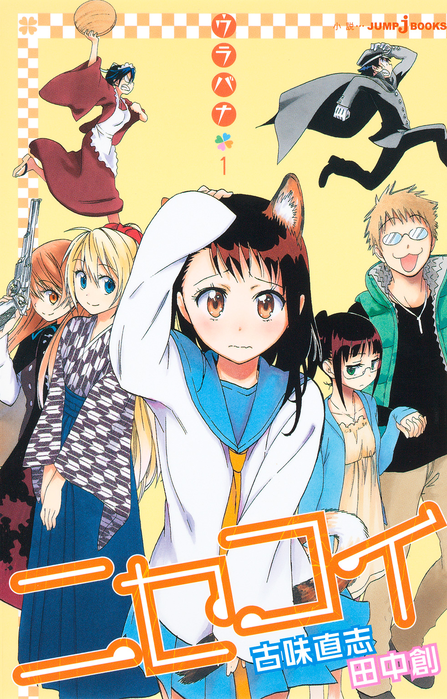
この本は縦書きでレイアウトされています。
また、ご覧になる機種により、表示の差が認められることがあります。
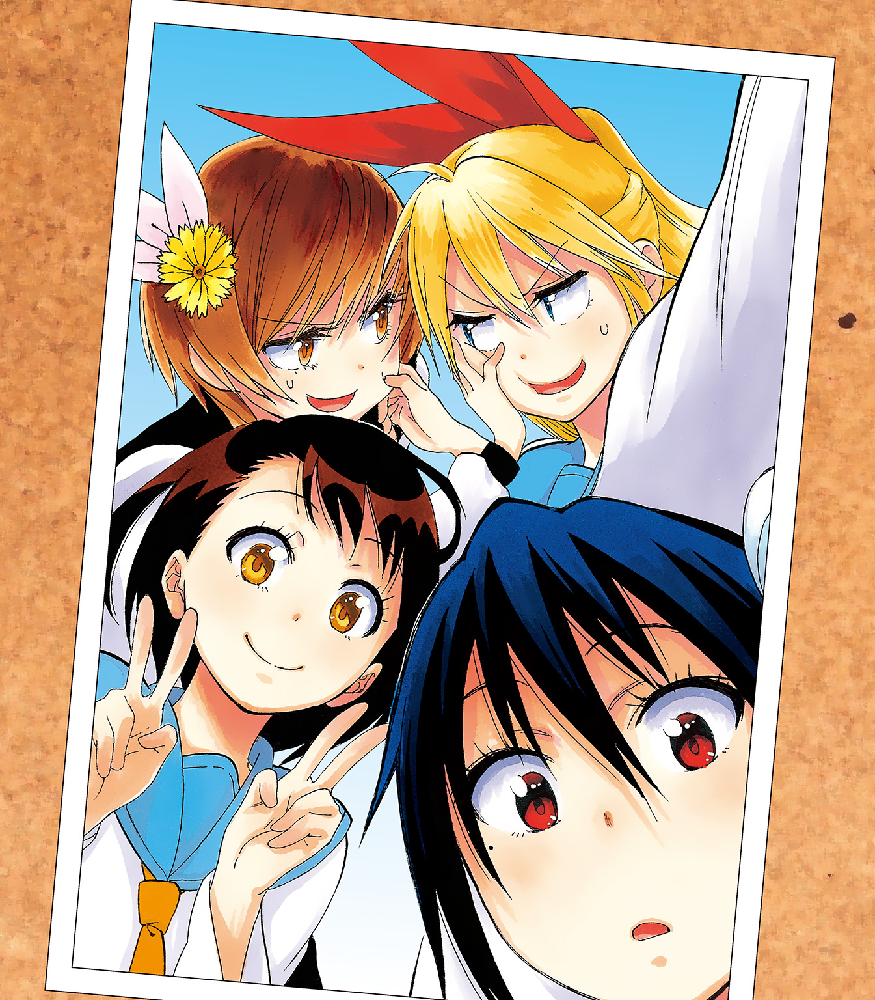
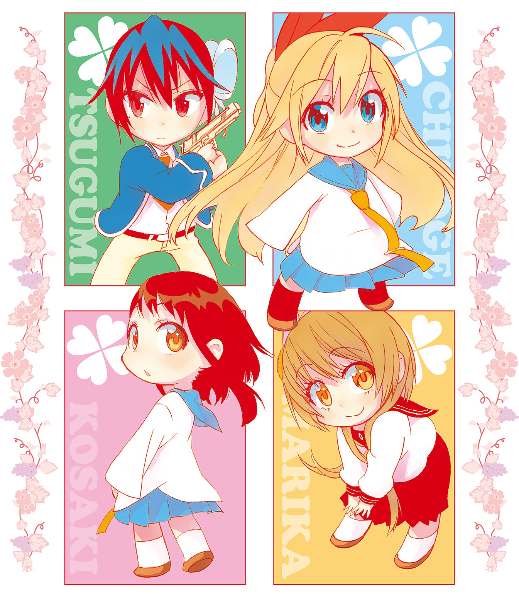
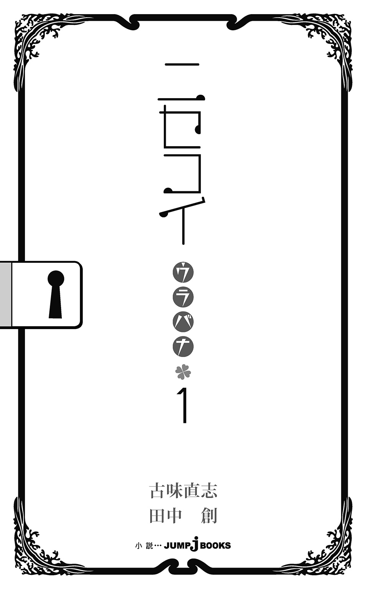
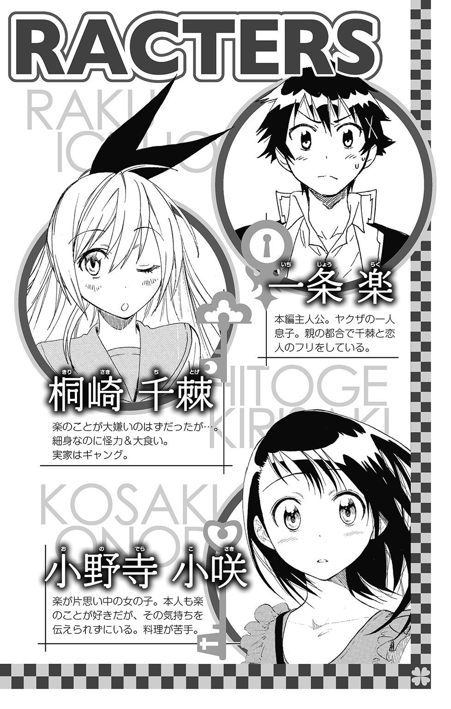
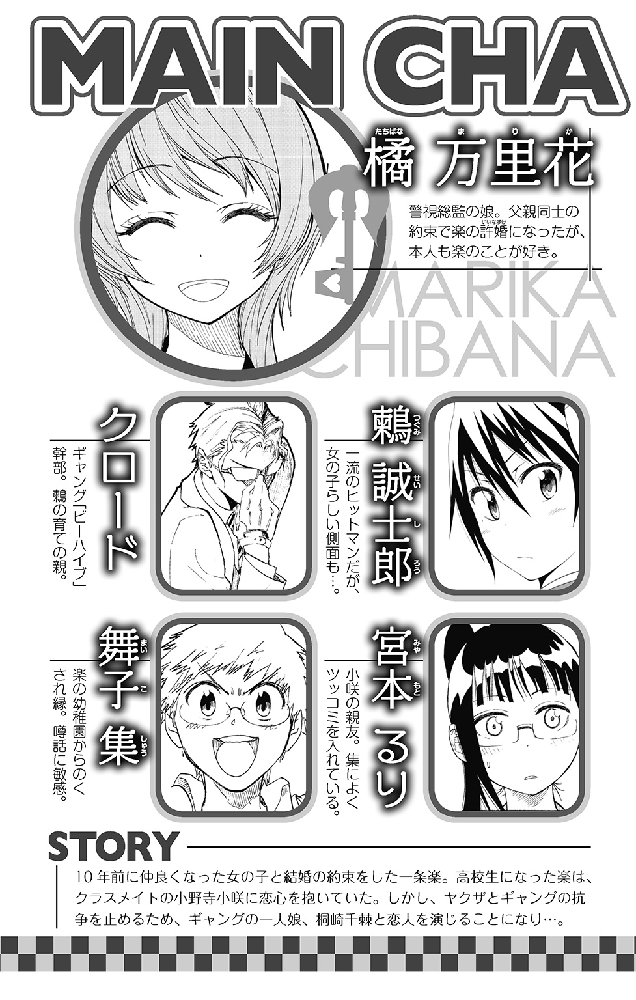
とある秋の日の午後。他の生徒たちが部活に帰宅にと平和な放課後を過ごす中、保健室には、少女の悲鳴が響き渡っていた。
「ええええええっ!? な、なにこれ......!?」
つんざくような悲鳴の主は小野寺小咲。壁の姿見に映った自分を見つめ、すっとんきょうな声を上げていた。
こんなものが急に頭から生えてくるなんて信じられない。さっきまで全然なんともなかったはずなのに、どうしてこんなことに？
「お、おお、落ち着こう小咲ちゃん！ とりあえず落ち着こう!?」
そう言いながらもまったく落ち着いていないのは、友人の桐崎千棘だ。
小咲の頭の上に現れたものを見つつ、さっきから保健室の中をあわあわと行ったり来たりしている。どうしていいかわからない、といった様子だった。
「そ、そんなこと言ったって」
何がなんだかわからないのは小咲も同じだ。保健室には、顔面蒼白になった少女二人の他には誰もいない。保健の先生も外出中だし、ベッドに横になっている生徒もいない。この状況を説明してくれるような人間は皆無だ。
だが、考えようによっては、それは救いだったのかもしれない。
「こんなの誰かに見られたら、笑われちゃうよ――」
小咲は半分涙目になりつつ、自分の頭から生えてきたそれに手を触れてみる。
非常にやわらかな、もふもふとした毛の手触り。まるで動物を撫でているような感覚だ。温かさも感じるし、作り物などでは断じてない。
「これって、その......猫の耳だよねえ」
小咲の頭の上にあったのは、どこからどう見ても動物の耳だった。
三角にとんがった耳が、ぴょこん、と頭に生えていたのである。
「私、おかしくなっちゃったのかな......。うう......」
「い、いや！ そんなに悲観することもないって！ これって見ようによっては、えーと、可愛いかもしれないし！」
「文化祭のコスプレ喫茶じゃあるまいし、ネコミミなんか頭から生やしてたら、絶対ヘンだよ......」
千棘の気遣いも、現状では何の気休めにもならなかった。こんな姿じゃ外を歩くことさえできやしない。
「まあ確かに、表にいる楽に、これをどう説明したもんか悩みどころではあるわね......」
千棘が一条楽の名をつぶやいたとたん、鏡の中のネコミミが、ぴこり、と動いた。まるで彼の名前に反応したかのように。
――ああ、間違いなく私の耳だ、これ......。
小咲はため息をついて、鏡に映ったネコミミ頭を恨めしそうに見つめた。
※
事の発端は、数十分ほど前にさかのぼる。
小野寺小咲が、校舎脇の一角に足を運んだ時のことだ。
「おう！ 小野寺！」
すっかり色づいたイチョウやモミジに囲まれ、一条楽が小咲に手を振っていた。彼は今、校舎脇の飼育スペースで、飼育係の仕事中なのである。
ちょうど飼育スペースでは、楽の監督のもと、飼育檻の中の大小さまざまな動物たちが昼下がりの食事タイムを楽しんでいるところだった。彼らは多種多様な鳴き声を上げ、小咲の来訪を歓迎しているようだ。
自分にもすっかり慣れ親しんだようすの彼らを見て、小咲はにっこりと頰をほころばせた。
「今日も手伝いに来てくれたのか？」
「うん。今日は委員会もないし、手持ち無沙汰だったから」
「そっか、いつもありがとな」
楽はクラスの飼育係として、春からこの飼育スペースで動物や植物の世話をしている。
楽の動物に対する細やかな気配りは評判で、地味ながら学校新聞にも取り上げられたことがあるほどだ。百匹近くの動物を飼育しながらも、これまで目立ったトラブルを起こしていないというのは、実はすごいことなのではないかと小咲は思っている。
小咲もまた、ときどきエサやりや水撒きの手伝いをすることがあった。最初はほんの興味本位だったのが、しばらく彼と一緒に動物たちの世話をしてみると、これがまた結構愛着が湧くのだ。だから放課後の手の空いたときなどは、小咲はちょくちょくここへ顔を出すことにしている。
もっとも、親友の宮本るりあたりには「あんたが愛着を感じているのは、動物たちだけかしらね」などと言われてしまうのだが。
「べつに下心があるわけじゃないんだけどなあ......」
「ん？ 小野寺、何か言ったか？」
「あ、あはは。......別になんでもないよ？」
楽に気づかれないように、小咲はふう、とため息をつく。
せっかく手伝いに来たんだから、動物のお世話に集中しなきゃ――。そんなふうに小咲が気合いを入れなおしたときのことだった。
校舎裏のほうから少女の快活な声が聞こえてきた。
「――ねえ楽ー？ えーと、このワニ......。三号のエサってこのくらいでよかったっけ」
バケツいっぱいに盛られた生肉を抱えて現れたのは、同じく飼育係の桐崎千棘だ。
「三号じゃねえよ。そいつは『マルガリータ・ド・佐藤』だ。お前、半年も飼育委員やってるんだから、いい加減に名前覚えろって」
「だったらせめて、覚えやすい名前つけなさいよね」
楽と千棘のそんなやりとりを聞いて、小咲はくすりと笑みをこぼした。
「ワニの名前にマルガリータって......」
この飼育スペースには百匹近くの動物たちがいる。そして、それらの中には普通科の高校の飼育スペースではなかなかお目にかかれないものも多い。
ワニにはじまり、ゾウガメやニシキヘビまで飼育しているのはうちの高校だけだろう。まるで校内に動物園があるようなものなのだ。近隣住民に驚愕の目を向けられることも多い。
しかも驚きなのは、その動物たちのほとんどが、楽にどこかから拾われてきたものだという事実である。動物好き、ここに極まれりという感じだ。
――一条君って優しいんだよね。
楽は、生肉をつかんだトングをワニのマルガリータへと向けていた。そう言えばあのワニも、捨てられていたのを拾ってきたうちの一匹である。
「うおおお、マルガリータ!? 嚙むな！ お前は嚙むな！ 洒落になんねーんだから！」
もっともワニのほうはそんな恩義など忘れてしまったのか、大きく口を開けて楽を丸かじりしようとしているようだったが。
「うおおおっ!?」
あわてて右手のトングをひっこめた楽だが、一歩遅れていたらその手首は生肉ごとマルガリータに持って行かれていたかもしれない。彼女（？）は、そのくらい獰猛な目つきで楽をにらんでいたのだ。
「どうどう！ マルガリータ、どうどう！」
楽は距離を取り、必死にワニを牽制しようとしている。だが、ワニは鋭い歯を見せて彼を威嚇するのをいっこうにやめようとしない。
どうもこの一条楽という友人は、本人の動物に対する愛情とは反比例して、なぜか動物に好かれない体質らしいのだ。可哀相なことに。
「い、一条君！ ここは私がやるから！」
小咲はあわてて彼の手からトングを受け取り、ワニにそれを向けた。
「ほら、マルガリータちゃん、美味しいお肉だよ～。......ね、これあげるから、おイタはしないようにしようね」
給餌係が小咲に代わったとたん、マルガリータの凶暴なしぐさはなりを潜め、足元にのそのそとすり寄ってきた。
小咲はそんな彼女の背を撫でながら、手にしたトングをそっとワニの口のほうへと運ぶ。彼女はさっきとは打って変わって嬉しそうに生肉を受け取り、大きな口でおとなしく咀嚼をはじめるのだった。
「へえ。小咲ちゃんってやっぱりすごいわ。まるで動物の調教師みたい」
千棘がプランターに水を撒きながら、賞賛の声を上げた。
「あはは。それほどでもないって」
「いや、ほんとに羨ましい......。こんなに動物を可愛がってるのに、どういうわけかオレには全然懐いてくれないんだもんな」
ワニのエサやりを断念した楽は、今度は小さめの檻からウサギを取り出していた。
「......おいこら、お前もおとなしくしてくれよ」
どうやらウサギの背にブラシをかけようとしているらしい......のだが、またしてもそのウサギに嚙みつかれてしまっている。
「あ痛っ！ しょうがねぇ奴だな......。ほら、よしよし」
ウサギに引っ搔かれつつ嚙みつかれつつ、それでも楽は懸命にその子を抱きかかえ、丹念にブラッシングを続ける。懐かれないとぼやきながらも、楽はいつもこうして一生懸命に動物たちに愛情を注いでいるのだ。
そんな楽の姿を見て、小咲はふとため息をついてしまう。
「『羨ましい』かあ......。私のほうが羨ましいくらいなんだけどな」
楽に背中を撫でられているウサギが、少しイヤそうに身をよじっていた。
ああ、もったいない。もし自分があのウサギの立場だったら、もっと嬉しそうな顔をするだろうに......。
「おーい、小野寺？」
「......え？ あ」
小咲は、愚にもつかないことを考えていた自分に気がつき、思わず首を振った。
――動物みたいに可愛がられたいだなんて......。
だいたい、いつかは自分の口で彼に告白すると誓ったではないか。
と、そのとき、
「あれ？ この子のぶんのエサがないみたいよ」
子猫を抱いた千棘が、片手でエサの入った棚をごそごそと探していた。どうやらミルクもキャットフードも切らしてしまっているらしい。
「エサをちゃんと準備してないなんて、マメなあんたらしくないわね」
彼女が抱いていたのは、小さな黒猫だった。
少し汚れてはいるが、上等そうな毛並みをした子どもの黒猫だ。子猫は薄緑色の目を楽に向け、みゃあ、と鳴き声を上げた。不思議な雰囲気を持った猫だな、と小咲は思った。
猫の顔を見て、楽は「あれ？」と首をかしげた。
「そもそもウチにそんなヤツいたか？」
「一条君も見覚えないってことは、この子、迷子なのかな？」
もちろん小咲も、こんな子猫は見たことがなかった。野良猫なのだろうか。
もっとも楽は、ここで飼っている猫だろうと野良猫だろうと、わけへだてなく可愛がることができる人間である。彼は千棘が抱いた子猫に手を伸ばして、
「エサの匂いにつられてここまで来たのかもしれねえな。――おーい、新入りか、お前」
黒い毛並みの背中をわしゃわしゃと撫でた。
フニャン、と返事をする子猫のしぐさが、なんとなく可愛らしいな、と小咲は思った。
「よし、じゃあ名前をつけてやらなきゃな。......えーと、何にしようか」
楽は腕組みして、うーんと唸る。熟考しているのか、空を仰いだまま固まってしまった。
千棘は半ば呆れつつ、
「そんなどうでもいいことでなに悩んでんのよ。仕事忙しいんだから早く決めちゃいなさいよ」
「どうでもよくねえよ。前にも言ったろ。家族の一員になるヤツの名前はじっくり考えるもんだって」
楽は真剣な表情で黒猫を凝視する。たっぷり一分ほど見つめたのち、「よし」と声を上げた。
「......お前の名前は今日から『内藤ジャンゴジャンゴ』だ」
黒猫はフギャア、とイヤそうに声を上げた。やはりその名前はお気に召さなかったのだろう。楽が伸ばした手を、猫は気だるげに振り払った。
千棘もまた、微妙な表情で楽の顔を見つめていた。
「あんたのネーミングセンス、相変わらず最悪ね。そんなだから動物にも愛想つかされるのよ」
「うるせえな。絶対いい名前だっつーの。......ど、どうかな、小野寺？」
「え、あ。うーん......。どうだろ。そういうの、人それぞれの感性だよね。あはは」
千棘とは違い、さすがに面と向かって楽のセンスを否定するほどの度胸はない。
小咲は笑ってごまかしつつ、自分も猫の頭を撫でようと手を伸ばした。
「可愛い子だね。キミはどっから来たの――」
しかし小咲の手が、子猫の身体に触れたそのとたん、
「フギャアッ！」
「痛っ!?」
小咲は猫に引っ搔かれてしまい、思わず手をひっこめる。
毛を逆立てて小咲を威嚇しながら、猫はするりと千棘の腕を離れた。
「あ、猫ちゃん......！」
小咲の制止の声も届かず、地面に降り立った黒猫は一目散に駆け出した。
あわてて後を追おうとしたのだが、猫はすばやく地面に置かれた檻の間を通り抜け、飼育スペース脇の樹木の上へとするする登っていく。
樹に登られてしまえば、小咲にはどうすることもできない。手をこまねいているうちに、黒猫は枝から枝へと樹を飛び移り、あっという間に見えなくなってしまった。
その様子を見て、楽がへえ、と声を漏らした。
「珍しいこともあるもんだな。小野寺に懐かない猫だなんて」
「まだ子猫だったし、きっと怖がらせちゃったんだよ」
小咲は引っ搔かれた手の甲をさすりながら小さく笑った。
我ながら動物には好かれるほうだと思っていたのに、こうやって逃げられてしまうと少しショックだ。楽の気持ちもわかったような気がする。
そのときふと、小咲の手の傷に、千棘が目を留めた。
「あれ？ 小咲ちゃん。大丈夫？ 血が出てるよ？」
「あ、うん。......でも、かすり傷だし、大丈夫」
二、三センチ程度の裂傷だ。本当に大したことはない。
「ダメダメ。かすり傷っていっても、大事になる場合だってあるんだから」
「そうかなあ。このくらい平気だよ」
「いや、早いうちに手当てはしたほうがいいよ？ こないだ抗争で手傷を負ったウチの若いのも『こんなのかすり傷ですよ』とか強がって放置してたんだけどさ――」
「こ、抗争って......」
千棘の血なまぐさいたとえ話に、小咲は思わず顔をしかめた。
「でも結局そいつ、痛みがひどくなって病院行ったの。そしたら銃弾が内臓に残ってて、命にかかわるヤバイ怪我だったのよ。処置があと数時間遅れてたら大変なことに......。つまり、『かすり傷は早めの処置が大事』ってのは教訓よね」
そういえばこの同級生の少女は、その綺麗な外見とは裏腹に、アメリカのギャングのボスの一人娘なのであった。普段はまったくそんなことを意識させないので、時折こうした面を見せられると、ちょっとびっくりしてしまう。
「いや、千棘......。それって一部のバイオレンスな世界ならではの話なんじゃねえのか？ ......って、オレが言うのもなんだけどな」
そうツッコミを入れる楽も、同じくヤクザの親分の一人息子だった。
「――で、でもまあ小野寺、消毒くらいはしといたほうがいいんじゃねえかな？ バイキンでも入ったら大変だしな......うん」
ぶっきらぼうながらも、楽は自分のことを心配してくれているようだ。そう思うと、小咲はなんだか胸が温かくなるのを感じた。
「ありがとう、一条君」
「い、いや、気にすんなって」
楽は少し照れたように頰をかくと、千棘のほうに向き直った。
「千棘、小野寺を保健室に連れて行ってやってくれよ。飼育係の仕事はオレがやっとくから」
「そうね。じゃあ、任せたわ」
千棘はジョウロを楽に渡すと、校舎へ向けて歩き出した。
「......行こ、小咲ちゃん」
「うん、ありがと。......一条君、またあとでね」
小咲も楽に手を振り、千棘の後を追う。
大した傷でもないし、消毒液と絆創膏くらいつけておけば事足りるだろう。
――早く消毒を済ませて、一条君の仕事を手伝いに戻らなきゃ。
せっかくのおだやかな秋の日の午後だ。彼と一緒に過ごせる時間を一分一秒だって無駄にしたくはない。
と、このときの小咲にはまだ、吞気にそんなことを考える余裕があったのだ。
※
しかし、変化は唐突に訪れた。
保健室で、不在の保健の先生に代わり、千棘が小咲の手の甲を消毒して、絆創膏を張っていたときのことだった。
「これでよし......っと」
慣れた手つきで丁寧に処置してくれた彼女に、小咲はにこりと微笑んでお礼を言った。
「ありがとう、千棘ちゃん」
「ああ、いいよこれくらい。どういたしまし――」
そう言いながら顔を上げた千棘は、なぜか硬直した。どういうわけか、あんぐりと口を開けたまま。
「え？」
そして次の瞬間、
「ってええええええええええっ!?」
彼女は、ほとんど飛び上がって、大きな叫び声を上げた。目を皿のように真ん丸にして。いったい、何を見たというのだろう。
「ち、千棘ちゃん!? どうしたの!?」
「こ、小咲ちゃんの、小咲ちゃんの頭に――！」
「頭？ 頭がどうかした？」
「ネコミミが生えてる！」
「え、ネコミミって？ え？」
千棘ちゃんは何を言っているのか――。呆気にとられながら、小咲は保健室の壁に設置されている姿見に目をやった。
「......は？」
そして小咲もその瞬間、ありえないものを目にしたのである。
それは、予想もしない変貌を遂げた、自分の頭だった。
「ええええええっ!? な、なにこれ......!?」
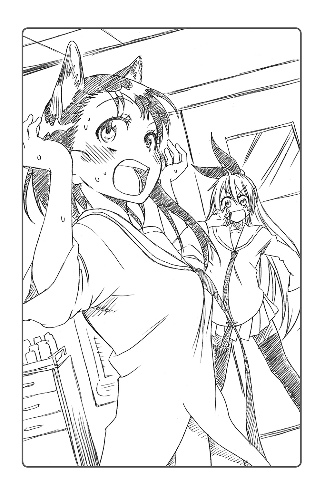
猫の耳。
姿見の中にいたのは、まるで本物の猫のような耳を頭から生やした自分の姿だった。
さっきの子猫と同じ、つやつやとした黒い毛並みの耳が、ぴょこん、と頭から飛び出していたのである。
「小咲ちゃん、これ手品かなんか......じゃないよね？」
もちろん小咲は、これまでの人生、この手のアクセサリーには縁がなかった。それは千棘も同じだろう。手品のように、相手の気づかぬうちに小咲の頭の上に載せた......というわけではない。そのネコミミは、まさにタネもしかけもなく、いつの間にか小咲の頭の上に出現していたのである。
「ふーむ......」
千棘は首をひねりながら、小咲の頭に現れたそれを、思いきり両手でつかんだ。
「あいた、あいたたた！ 痛いよ、千棘ちゃん！」
「え、うそ!? 痛みがあるってことは、もしかしてこの耳、小咲ちゃんの自前ってこと？」
引っ張れば痛みも感じる。それはアクセサリーなどではなく、この耳が正真正銘小咲の身体の一部であることの証明であった。
「信じられない......！」
なぜ？ どうしてこんなものが、自分の頭の上に出現したのだろう。
「夢......じゃないんだよね、これ」
突然の出来事に呆然とし、現状をとりあえず把握できるようになるまで数十分。
それから千棘と二人、どうすることもできずおろおろとうろたえること数十分。
保健室に来てからすでに小一時間が経っていた。外にいる楽も、そろそろ心配する頃かもしれない。でも、この猫の耳を彼にどう説明したものか――。
ベッドに千棘と並んで腰掛け、小咲は肩を落とした。
頭の上の柔らかな耳の毛をひっぱりながら、ため息をつく。
「ほんと、なんなんだろうね。この猫の耳」
小咲にわかったのは、まず、この耳は完全に自分の身体の一部になってしまっており、触られると妙にくすぐったいということ。次に、これはときおり声に反応してぴくぴく動いたりすること。そして最後に、小野寺小咲は今や、猫の耳が生えた変な女子高生になってしまったという事実だけだった。
「これ、まさかヘンな病気とかじゃないよね」
慣れない頭上の突起に手を触れつつ、小咲がつぶやいた。とりあえず耳以外、身体に異常がなかったのは、不幸中の幸いだった。もともとの耳と合わせて、耳の数が合計四つになっている状態が、異常と言えば異常なのかもしれないが。
「うーん......。突然ネコミミが生えてくる病気なんて、アメリカでも聞いたことないわ」
金髪碧眼の友人も、首をかしげている。
さっきから二人であーだこーだと議論を交わしているのだが、何ら解決策は見いだせそうにもなかった。
「原因はなんだろ。――小咲ちゃん、今日何か変なもの食べたりした？」
「うーん。いたって普通の食生活だと思うけど」
今日の昼食を思い出しても、普通にサンドイッチを二つ三つ食べたくらいだ。
変というならむしろ、一緒にお昼を食べた千棘のほうが変かもしれない。重箱数段という女子高生離れした量のお弁当をたいらげ、けろりとしているのだから。
「......あれでスタイルを維持してるのは何かが間違ってる気がする......」
「小咲ちゃん？」
気づけば、千棘が不思議そうに小咲を見ていた。
「あ、ごめん。なんでもない」
「じゃあ、他に変わったことは？ なにか猫に祟られるようなことしたとか」
「祟り......？」
小咲はネコミミをぴょこん、とさせながら考えこんだ。
猫の祟りでネコミミが生えちゃうなんて、そんなことがあるのだろうか。
「身に覚えはないけど......。変わったことと言えば、さっきあの子猫に手を引っ搔かれたことくらいだよ」
「ああ、さっきの。......もしかして猫に引っ搔かれてネコミミが生えた、とか......？」
「うーん、そんなことあるのかな......？」
「そうね、そしたら楽なんて、ネコミミが何個生えても足りないわよね。しょっちゅう引っ搔かれてるし」
小咲の手の絆創膏を見ながら、千棘がむう、と唸った。
「じゃ、こういうのはどうだろ。実はあの子猫は遺伝子操作された特殊な猫で、人間のＤＮＡを書き換えちゃうウイルス的なものを持ってるの。で、それが傷口から小咲ちゃんの身体に――」
「も、もう、やめてよ千棘ちゃん......！」
千棘の全然笑えない冗談に、小咲は苦笑いで返した。遺伝子操作された猫だなんて、そんな物騒な生き物がそのへんにいるわけもないのだ。
「まあそうよね。そんなＳＦ映画みたいな話、いくらなんでも冗談――」
千棘が笑って言ったそのときだった。
がらっ、と音を立て、不意に保健室の引き戸が開いた。
「猫の野郎！ どこに隠れやがったあっ!?」
叫び声とともに慌ただしく現れたのは、白の高級スーツをまとった、上背のある外国人の男性だった。デザイナーズブランドの眼鏡をかけたその強面を、小咲は何度か見たことがある。確か彼は千棘のボディガードにして、ギャング組織の幹部だったはずだ。
「クロード!?」
「む、お嬢。......それに確かそちらは、ご学友の小野寺様ですか」
クロードは眼鏡をくい、と押し上げつつ、保健室を見わたす。
彼は小咲の頭にぴょこりと生えたネコミミに目を留めると、ふむ、とうなずいた。
「おや？ その頭のアクセサリーは、ネコミミというやつですね。ジャパニーズ・モエ・アイテム。よくお似合いだ」
「あ、いや、これはっ......！」
いきなりクロードに褒められてしまい、小咲はあわてて両手で頭の上を覆った。
「ちょ、ちょっとクロード。あんた何しに来たのよ。こんな学校の中にまで」
そうだ、と思い出したかのようにクロードがうなずいた。
「実は猫を探しているのですよ。......お二人もこのあたりで見かけませんでしたか？ 黒い毛並みの子猫なのですがね。目の色が薄緑色で、少し変わった子猫なのですが」
「子猫......？」
小咲の頭に浮かんだのは、先ほど飼育スペースで出会った黒猫だった。
千棘も同じことを思ったのか、いぶかしげな表情で彼に尋ねた。
「なんでまた、あんたがその猫を探してるの？」
「ええ、実はその猫、先日我々の組織がさる筋から入手した商品でしてね。名前は、〝トム〟......。なんでも、非常に変わった性質を持っているそうで、好事家に高値で売ろうと管理していたのですが――」
「もしかして、逃げられたとか？」
千棘が眉根を寄せてにらみつけると、クロードは申し訳なさそうにうなずいた。
「面目ありません、管理に当たっていた者ごと、どこかへ消えてしまいましてね。......現在、ビーハイブ総出でその猫を捜索中なのですよ」
よくよく見れば匍匐や木登りでもしたのか、彼の上等そうな白ジャケットは、土や葉っぱで汚れていた。本人もかなり汗ばんでおり、猫探しに相当骨を折っている様子が見て取れる。
「あの、クロードさん。その猫――〝トム〟でしたっけ？ その、非常に変わった性質を持っている、ってどういうことですか？」
小咲がおそるおそる尋ねると、クロードが鼻を鳴らして答えた。
「まあ、バカバカしい話なのですがね。〝トム〟を売りこんできた研究者によれば、『人間を猫に変えてしまうウイルス』を持った猫なんだとか」
「ね、猫に!?」
小咲と千棘が、同時に声を上げる。猫化ウイルスだなんて、千棘の言った冗談と同じことが語られたからだ。
「まあよくあるホラ話の類でしょうがね。猫に引っ搔かれてウイルスに感染、そして身体が徐々に猫になっていく......。ふふ......。まるで三流映画だ」
忍び笑いを漏らすクロードだったが、小咲にはまるで笑えない話だった。
――もしかしてあの猫が〝トム〟だったの......？
そんな話、普通だったらクロード同様、軽く笑い飛ばしているところだろう。だが、こうして自分の頭に猫の耳が生えている現状を鑑みると、あながち冗談とも思えない。人間を猫にしてしまう〝トム〟のウイルス。頭の上に突如出現したネコミミは、その侵食の第一歩なのではないだろうか。
「このまま私、猫になっちゃうってこと......？」
ごくり、と生唾を飲みこむ。
隣を見ると、千棘も同じように厳しい表情を浮かべていた。
「ねえクロード......。もしも、の話なんだけど、そのウイルスに感染したとしたら、どうすればいいの？ 何か対策とかないの？」
「ええまあ、〝トム〟を売りこんできた専門家連中によれば、ウイルスの血清はすぐに作れるそうですよ。それを投与すれば治療はたやすいんだとか。......まあ、感染するということ自体、万に一つもありえないことだとは思いますがね」
「そ、そっかぁ......よかった」
小咲はほっと胸をなでおろす。その血清とやらさえあれば、この頭の耳もなんとかなるかもしれない。
しかしクロードは眉間にしわを寄せて、
「......もっとも、あの猫に逃げられてしまっては、血清うんぬんどころの話ではないのですがね」
「どういうことですか？」
クロードによれば、猫化ウイルスを除去する血清を作るには、〝トム〟そのものの血液サンプルが必要らしい。
つまり、まずあの子猫を捕まえないことには、小咲の猫の耳はなくならないということだ。それどころか、このまま放置していれば、小咲の身体はだんだんと猫になってしまうだろう。
「......こうしちゃいられないわね」
千棘がクロードのほうに向き直り、ぐっとこぶしを握った。
「――クロード、私も猫探しに協力するわ！ 小咲ちゃんのためにも、早くあの猫捕まえなくちゃ！」
「お嬢が？ それはありがたいのですが......小野寺様のため、とはいったいどういうことでしょうか」
眉をひそめるクロードに、千棘はかいつまんで事情を説明した。
最初は冗談だと思っていたらしいクロードの表情が、次第に曇っていくのがわかる。
「まさか、小野寺様が――!?」
信じられないといった表情で、彼は小咲の頭を凝視した。そんなに改めてじっくり見られると、少し恥ずかしい。
「私だって信じられないけど、小咲ちゃんのネコミミは、その猫の仕業だって考えるしかないでしょ。まったく、厄介なもん逃がしてくれたわね」
千棘ににらみつけられ、クロードは沈痛な面持ちで謝罪の意を表した。
「これは申し訳ないことを......。小野寺様のためにも、一刻も早く〝トム〟を捕まえねばなりませんね」
クロードは千棘に目配せすると、踵を返した。〝トム〟を捕まえに行くつもりなのだろう。
「あ、じゃあ私も......」
ベッドから腰を浮かしかけた小咲だったが、
「いえ。小野寺様はやめたほうがいいでしょう」
「え？ どうしてです？ 私なんかでも、人手は多いほうが――」
眼鏡の位置を直しつつ、クロードが答えた。
「専門家によれば、猫化ウイルスの進行は、心拍数の増減にかかわっているらしいのです。心拍数が高まれば高まるほど、猫化の進行速度が速くなる......とか」
「心拍数、ですか」
「体内の血流が速くなると、それだけウイルスが全身に広がるということでしょうね。下手に感情を昂ぶらせるのは危険ですよ」
そう言ってクロードはおもむろに、懐から一枚の写真を取り出した。そこには、ふてぶてしい目つきをした、でっぷりと太った猫が写っていた。
「これがいい例です。もっとも、私も最初はこの猫の正体がわかりませんでしたが......」
この写真は、失踪した部下の手がかりとして、クロードが持ち歩いていたものだという。
「〝トム〟の管理に当たっていたダニエルが突然失踪し、直後にこの猫が現れました。彼もまた〝トム〟のウイルスに感染してしまったということでしょう」
「もしかして、この写真の猫がダニエルってこと......？ そういえばどことなく面影があるわ......」
千棘も顔見知りだったのだろうか、写真を覗きこんだ彼女がごくりと唾を飲みこむのがわかった。
「――きっとヤツは、猫を捕まえようと頭に血をのぼらせた結果、全身をウイルスに侵され、アメリカンショートヘアと化してしまったのでしょう。......くっ、ダニエル。気性は荒かったが、いい奴だった」
写真の太ったギャング猫を見て、小咲は息をのんだ。
この写真の猫が、ダニエルというギャングのなれの果てなのだろうか。最悪、自分もこんなふうになってしまうのかと思うと、小咲は背筋にうすら寒いものを感じた。
「とにかく、これ以上の猫化を抑えるためにも、小野寺様はおとなしくされているほうが賢明ですよ」
強面に真剣な表情で諭され、小咲は反駁することができなかった。
「つまり、今の小咲ちゃんは、あんまりドキドキしたりしないほうがいいってことよね」
と、千棘。
ドキドキすると猫になるだなんて、まるでファンタジーだ、と小咲は自分のことながら思わず苦笑した。苦笑するしかなかった。
「でも、そう言われても......」
心拍数を平常に保つ。口にするのは簡単だが、結構これは難しいのではないだろうか。落ち着け落ち着けと自分に言い聞かせることで、逆に緊張して心拍数を上げることにもなりかねない。しかも『失敗したら猫になっちゃう』なんてペナルティがついていれば、なおさらだ――。小咲は不安のあまり、ため息をついた。
「うーん。心拍数を平常に保つなんて、私にできるのかにゃ......」
「『にゃ』......？」
千棘とクロードが、驚いた様子で小咲の顔を覗きこんだ。
「え？ 二人とも？ 私なんかヘンにゃこと言った？」
「こ、小咲ちゃん!? 『にゃ』って！ 言葉が猫！ 猫語になってるよ！」
「にゃっ!?」
目の前の友人が、はっとした表情で自分のことを見ている。しかし小咲自身には、いっさいそんなしゃべり方をしている自覚がない。
「やはり、小野寺様の猫化は徐々に進行しているようだ。......これは一刻も早く血清が必要ですね。完全に猫になってしまうのは時間の問題です」
いつになく深刻そうなクロードの声に、小咲は愕然とした。
「そ、そんにゃ......」
「大変！ もう悠長にしてる時間はないわ！ 早くあの黒猫を探しに行くわよ、クロード！」
千棘が身をひるがえし、戸口に向かって歩き出した。クロードもまたその後を追う。
「了解です、お嬢。......では小野寺さま。少しお待ちください。血清ができたらご連絡さしあげますので」
「二人とも、にゃにとぞよろしくお願いします......」
小咲は、肩を落としてつぶやいた。
保健室の引き戸が閉められ、一人ベッドに残されてしまう。
このままネコミミがなくならなかったら――完全に猫になってしまったらどうしよう。楽にはもちろん、るりや他の友達、お母さんにも心配をかけることになってしまう。そもそも、うちは和菓子屋なのだ。ペット禁止の自宅に、猫になってしまった自分の居場所はあるのだろうか――。
そんなことを悶々と考えていると、どんどん不安になっていくのがわかる。こんなことばかり気にしていたら、それだけで心拍数が上がってしまいそうだ。
「ああ。このままじゃ、ほんとに猫になっちゃうよ......」
とりあえず、余計なことを考えずに今日は帰って休もう。
千棘やクロードに任せておけば、血清のことはきっとなんとかしてくれる......。小咲は前向きに考えようと努め、ベッドから腰を上げた。
「とにかく、教室から、鞄とコートを取ってこにゃいと」
コートのフードを頭からすっぽり被れば、とりあえずネコミミは隠せる。今日は早く家に帰って、血清の完成までおとなしくしているべきだろう。
「一条君とせっかく放課後を過ごせるチャンスだったのににゃあ......」
はあ、とため息をつきつつ、小咲は保健室の引き戸に手をかけた。
※
いっぽうそのころ。
本日の飼育係の全作業を終えた一条楽は、校舎に戻っていた。廊下には茜色の西日が差しこんでおり、人気もすっかりなくなっていた。
秋も深まってきたこの季節、そろそろ肌寒くなってくる時間帯である。
「あいつら何してんだろ。もうだいぶん時間経ってるよな」
千棘と小咲が、保健室に行ったままいつまで経っても戻ってこない。そこで楽は、二人に声をかけようと、保健室に向かっているのである。
楽はマフラーを結びなおしつつ、ひとりごちる。
「ケータイに連絡しても出ないし......。まさか小野寺になんかあったとか......」
彼女がトラブルに巻きこまれているのではないかという想像が、一瞬楽の頭をよぎった。だが、楽は頭を振って即座にそれを否定する。
「いや、千棘も一緒だし大丈夫だよな、たぶん」
あのゴリラ並みの怪力を誇る少女と一緒なら、たいていの厄介事はなんとかなる。仮に不良数人に囲まれても返り討ちにするくらいは朝飯前だろう。もちろん、よく千棘に張りついて見守っているお付きのメガネも、護衛としては優秀そうだし。
――まあ、学校の中でトラブルに巻きこまれるなんて、そうそうありえないよな。
そんなことをつらつらと考えながら廊下を歩いているうちに、保健室の前に到着していた。二人はまだ中にいるのだろうか。
「おーい、千棘、小野寺。お前らいったい何して――」
引き戸を開けた瞬間、楽の思考は停止した。それこそ、楽がまったく予期できなかった事態――自分の想像力をはるかに超えた光景が、保健室のドアの向こうに現れたからである。
「......にゃ？」
ドアの向こうに立っていたのは、楽がよく知るクラスメートの女子であった。
彼女もまた、急に目の前の引き戸が開かれるとは思ってもみなかったのだろう。楽を見上げながら、口を半開きにして完全に硬直してしまっていた。その少女は、頭の上の二つの大きな突起をぴこりぴこりと動かしつつ、「にゃ？」などとつぶやいている。
「ええと、小野寺......だよな」
あまりの光景に一瞬言葉を失った楽だったが、やっとのことで声を絞り出した。
そう、それはまごうことなき憧れのクラスメート、小野寺小咲の姿だった。ただ一つ違いがあるとすれば、彼女が一生懸命隠そうとしても隠しきれない、頭の上の物体である。
「い、いいい、一条君!?」
小咲は栗色の大きな瞳を伏せ、恥ずかしそうに目をそらす。照れているのか、頰はほんのり桜色に上気していた。あわてて頭の上に両手を乗せて、そこにあるものを覆い隠そうとしている。
「違うの！ えーとね、これは事情があって......！」
聞かれてもいないのに、しどろもどろになりながら説明を始める小野寺小咲。
彼女の頭の上のそれは、まさしく猫の耳のような形をしていた。少し大きめのリボン......には見えない。あれは巷で言う、ネコミミと呼ばれるアイテムに違いなかった。
「小野寺、なんでまたネコミミなんか......」
「な、なんて言ったらいいのかにゃ？ えーと、さっきの黒猫さんが〝トム〟さんで、千棘ちゃんたちがウイルスを追ってて、それからダニエルさんが猫になっちゃって......！」
顔を朱色に染めながら、小咲があたふたしている。彼女の説明は要領を得ないものだったが、とにかくこの目の前の女子に、ネコミミがとんでもなく似合うということだけは理解できた。
この小野寺小咲というクラスメート、もちろん素でも魅力的な少女だが、その頭上にネコミミが追加されただけで、まさかこんなに可憐な存在に変貌するものだとは思わなかった。その衝撃、まさに即死級。楽はまともに彼女の顔を直視することすらできないほどだった。
ネコミミなど、もはやテンプレ化しつつあるただのパーティアクセサリー......そんなふうに思っていた自分は、なんと愚かであったことか。つける人間によってはこれだけの破壊力を持つアイテムとなりうるのだ。小咲の頭を見据えつつ、楽は先人の知恵に改めて畏敬の念を覚えていたのだった。
「で、それ、文化祭用のコスプレかなんかか？ いや、文化祭なら先月とっくに終わっているもんな......」
舞子集あたりが仕掛けたドッキリか......。ネコミミ小野寺に対する自分の反応を陰でこっそり楽しむとか、あいつだったらやりかねない。
だが、そういうわけでもないようだ。周りに撮影班の気配はないし、そもそもあの友人は放課後さっさと帰ったはず。
じゃあなんだ。日々を真面目に生きる自分に、神様のくれたプレゼントだとでもいうのだろうか――。
――ああ、全然わかんねえ！ ネコミミ小野寺は可愛いけど！
小野寺小咲のネコミミ姿、というサプライズに、楽の頭は大混乱に陥っていた。いうなればネコミミインパクト。あまりにも似合いすぎている彼女の姿に、楽の脳裏には〝眼福〟の二文字以外の言葉は消え失せていたのである。
楽がふと気づくと、小咲がはにかみの表情を浮かべてじっと見つめていた。
「い、一条君......。そ、そんにゃにじっと見にゃいで......」
「ぶほぉっ!? ......わ、わりぃ！」
あわててそっぽを向いた楽だったが、内心すでにクリティカルヒットを受けていた。
まさかの上目遣い。そして『にゃ』言葉。あの小野寺小咲の、こんなにもラブリーな一面を覗けるだなんて。そんな状況にめぐり合えた自分を、幸せ者と呼ばずに何と呼べばいいのか。楽がこれだけ生の実感を得たのは、小さいころ集英組の抗争に巻きこまれ、銃弾が頭の数センチ横をかすめて以来のことかもしれない。生きててよかった......！
「うう......これ、ヘンだよね。一条君も絶対ヘンだって思ったよね」
視界の隅では、小咲がネコミミを押さえつつ、涙目になっていた。
「そ、そんなことねえよ」
「無理しにゃいでいいよ......。頭からネコミミ生やした女の子なんておかしいもん」
「いや！ 全然！ ど、どっちかっつうとむしろ、可愛い部類に入るんじゃねえかな......!?」
頰を搔きつつ、楽はあわてて答えた。
本当ならネコミミの彼女がいかに愛らしいか、千の言葉を用いてでも語りたいところだったのだが、本人を目の前にしてそんなことをする勇気はない。というか、そんな勇気があったらすでに告白している。
「ほんと......!? 一条君、これ、可愛いと思うの？」
頭の上のネコミミをぴこぴこさせながら、小咲がちらりと楽を見る。
「あ、ああ......。噓じゃねえよ」
楽がそう言うと、小咲は少しほっとしたような笑みを浮かべた。
楽はなんだか照れくさくなって、話を変えるべく小咲の頭に手を伸ばす。
「そ、それにしてもよくできてるよな！ このネコミミ！」
小咲がつけているネコミミに触れると、ほんのりと温かさを感じた。
「ひゃわっ!?」
「おお......！ 最近の技術の進歩はすごいな」
耳の裏側の毛並みも、まるで本物の猫のような質感である。世の中にこんなアクセサリーがあるなんて思わなかった。こういう素材でぬいぐるみでも作れば、動物に好かれない人間でも猫の手触りを楽しめるかもしれない。
楽は感心しつつ、飼育スペースの動物たちにそうするように、小咲のネコミミを指で優しく撫で始めた。
「ふにゃっ！ く、くすぐったい......！」
「ああ、ホンモノの猫の手触りを感じる......。なあ、どこで売ってんだ、これ」
素材の質感を確認するように、楽はネコミミを撫で続ける。しっかりと耳の内側まで、ふにふに、ふにふにと。
「にゃっ!? ちょ、一条君、やめ......」
楽はこのとき、まるで気づいていなかった。小咲が、まるで自分の耳を直接触られているかのごとく、顔を真っ赤にしていることに。
「ふにゃっ！ ふにゃわあああああああああああっ!?」
「うわっ!? な、なんだ!?」
突然小咲が大声を上げる。
「く、くすぐったいよおっ！」
彼女は楽を勢いよく突き飛ばし、廊下を逃げるように全速力で走り出した。
「お、小野寺!?」
楽は手を伸ばしたが、時すでに遅し。リノリウムに尻餅をついたまま、去っていく彼女の背を呆然と見守ることしかできなかった。
「付け耳を触っただけであんなに嫌がられるなんて......。オレ、もしかして嫌われた......？」
楽のつぶやきが、彼女の走り去った無人の廊下に物悲しく響いた。
※
――ああもう、心臓が止まるかと思った。
全力で楽の前から逃げ出した小咲は、廊下をひた走り、階段の隅に腰を下ろしていた。廊下側からは死角になっている場所に、隠れるように身を縮こませる。
――はあ......。
まさか保健室に楽が現れるとは思わなかった。ネコミミを生やしてるなんて、変な女の子だと思われてしまったかもしれない。
――一条君のこと、思いきり突き飛ばしちゃった。......どうしよう。
もちろん楽に落ち度がないことは、小咲にもよくわかっていた。しかし、突然耳を触られれば驚きもする。しかもどういうわけかこのネコミミ、普通の耳以上に感度が高いのだ。少し触られただけで、死ぬほどくすぐったい。
――とりあえず落ち着いたら、一条君に事情を話して謝ろう......。
もう何度目かわからないため息をついた小咲だったが、そのとき、妙なことに気がついた。
――あれ？
何かがおかしい。
いや、具体的に何がおかしいのかはよくわからないのだが、なんとなく周りの世界すべてに違和感を覚える。小咲は眉を寄せながら、周りをきょろきょろと見渡してみた。
――うーん......？ この階段って、こんなに段差あったっけ？
腰を下ろしている階段が、なんだかやたらと大きく見えるのだ。まるで一段一段が、小咲の背と同じくらいの高さになってしまったかのようだ。
おかしいのは階段だけではなかった。壁に埋めこまれた消火栓のスイッチも見上げるほど高い位置にあるし、廊下の隅の掃除用具入れのロッカーも、なぜかちょっとした建物くらいの高さになっている。
周りにあるものすべてが、何倍にも大きくなってしまったかのようだ。気分はまるで、ガリバーか不思議の国のアリスだ。
――え？ でも、これって周りが大きくなったんじゃなくて、もしかして私が縮んじゃってるんじゃ......！
小咲ははっとして、自分の手のひらを見てみる。
――こ、これって......！
それはもはや、手のひらではなかった。そこにあったのは、ぷにぷにとした、柔らかそうなふくらみ――まごうことなき、猫の肉球であった。
「うにゃああああああっ!?（なにこれええええええっ!?）」
変わったのは手のひらだけではない。気がついてみれば、全身がふわふわとした毛に覆われている。腕も身体も顔も、まるで見覚えのない形だ。小咲があわてて廊下側のガラスのほうに目をやると、そこには一匹の猫の姿があった。
三本ひげに白、茶色、こげ茶の体毛。しっぽの先はくるんとカールして、耳をぴこぴこさせている。そんな三毛猫がつぶらな瞳を白黒させながら、階段にちょこんと座っていたのだ。
――猫......！ 完全に猫になっちゃってる!?
それは普段の小咲なら、見つけたら立ち止まって頭を撫でてあげたいくらいには、可愛い猫だったかもしれない。だが、それが自分の姿となれば話は別だ。
クロードから猫化ウイルスについて話を聞いていた小咲には、ガラスに映った猫の姿が自分のものだと理解するまで、そう時間はかからなかった。
――もしかして、さっき一条君に耳を触られてドキドキしちゃったから......!? ど、どうしよう！ どうしよう!?
小咲は頭を抱えた。頭の上にくっついているのは、今やネコミミならぬ本物の猫の耳である。もしやこれから先、自分は一匹の猫として生きていくしかないのだろうか。
まさか猫になっちゃうなんて、生まれてこのかた考えたこともなかった。
これからどうすればいいんだろう。ごはんは？ 住む場所は？ もう友達に会っても気づいてもらえないかもしれない。
すっかり頭がパニックになっている小咲だったが、そんな自分にさらに追い打ちをかけるような声が、廊下側から響いてきた。
「おーい、小野寺ー。どこ行ったんだー？」
小咲を追ってきたのだろう。一条楽が、廊下の角を曲がってこちらにやってきた。
――い、一条君!?
「......あれ？ なんだこの猫？」
楽が不思議そうな表情で、こちらを見下ろしていた。
「なんだおまえ、野良猫か？ 校舎の中まで入ってくるなんて珍しい奴だな」
楽は腰を下ろし、小咲のほうへと手を伸ばしてくる。急なことに気が動転していた小咲は、なんら抵抗もできないまま、彼の胸へと抱きかかえられてしまった。
「よいしょっと。......今日はやけに野良猫に縁がある日だな」
「うにゃ!? にゃにゃにゃにゃ！（うわあっ！ い、い、一条君に抱かれてる!?）」
突然、楽の胸板の感触がダイレクトに伝わってきたことで、小咲は腰を抜かしそうになった。まさかこんな不本意な形で、彼の腕に抱かれる日がこようとは。
「よしよし......。可愛い奴だなあ、お前」
「にゃー！ にゃー！ にゃにゃにゃ！ にゃあっ！（ちょ、わひゃあ！ 恥ずかしいってば！）」
「お、おいこら！ そんなに暴れるなって！ ああもう、オレってホント動物には好かれねえんだよな」
暴れるなと言われても、そんなの無理がある。あの一条楽に抱かれて、ナデナデまでされてしまっているのだ。
「にゃあああっ！（そ、そんなに撫でないでぇ！）」
完全に猫になってしまった今、口から出る言葉は「にゃ」のみ。当然と言えば当然だ。
なんとか自分が小野寺小咲であることを伝えようと、手足やしっぽをばたつかせてみるのだが、
「ん？ なに？ バタ足？ ......なんか変わった猫だな。おまえ」
楽に意思が伝わっている気配はまるでなかった。
前に宮本るりが「一条君くらい鈍感な男の子も珍しい」と言っていたが、それを心から実感した瞬間であった。
「にゃう！ にゃうう！（私、猫じゃないよう！）」
「ん？ なんだって？」
楽はこちらの両脇の下に手を入れ、そのまま対面するように真正面に持ち上げた。
「ふにゃ？（へ？）」
それは確かに、猫を持ち上げる方法としては非常に一般的なやり方だとは思うのだが、いかんせん、楽の親指がダイレクトに胸部に触れてしまっていた。
「ふにゃっ!? ふにゃあああああっ!?（いいい、一条君!? そこ、そこはあっ!?）」
脇の周辺への唐突なソフトタッチに、小咲は全身の猫毛が逆立つくらいにびっくりした。猫になってもこれだけ敏感に感じてしまうのだ。もし今、小咲の身体が普通の人間だったら、赤面して卒倒していたに違いない。
「なんだお前、くすぐったがりなのか？ ははは、それそれ」
こちらの反応がよほど面白かったのだろうか。楽は小咲の内心にまるで気づくことなく、涼しい顔で首の付け根や脇の下をくすぐりまわしてくる。
「みゃあああああっ！（ももも、もうやめてえ！）」
と、そのとき。
「あれ？」
こちらをくすぐりまわしていた楽が、ふと足元に目を向けた。
「お前が敷いてたこの布って......」
「にゃ？（え？）」
つられて下を見てみると、小咲が座っていた階段のところに、さっきまで自分が着ていた服が無造作に落ちているのが見えた。
「んにゃっ!?（あ、あれは!?）」
「――これ、女子の制服だよな。なんでこんなところに？」
よく考えれば当たり前だが、身体が猫に変化しても、着ている服の大きさは変わらない。小咲が猫になってしまったとき、着ていた制服が脱げてしまったのだろう。
「制服だけじゃなくて、靴下に上履きまで......？」
「にゃ!? んにゃあっ!?（そんなの見ちゃだめえ！）」
しかしそんな小咲の悲痛な叫びの意味が、楽に伝わっているはずがない。
不慮の事故とはいえ、自分が脱ぎ散らかしたばかりの衣服を彼に見られるなんて、一生の不覚だった。
「とりあえず、職員室にでも落し物として届けておくか......。これも落し物の範疇に入るのかは疑問だが」
楽はそうつぶやきつつ、抱えた小咲を脇にそっと置くと、落ちている衣類を手に取っておもむろにたたみはじめた。
「女子の制服たたむなんて少しハズいけど、しょうがねえ......」
「みゃっ!? にゃにゃあ！（うわあっ！ そんな律儀にしてくれなくていいからあ！）」
さすが大人数の男所帯で家事をこなしているだけあって、彼は服のたたみ方も丁寧だ。顔を赤らめながらも、折り目正しく、服にシワがつかないように几帳面にととのえてくれている。
だがそんな丹念なたたみ方も、今の小咲にとってはむしろ過酷な試練であった。
「にゃ！ にゃあああああん！（一条君、そ、そんなにちゃんとたたまないでええ！）」
憧れの男の子に脱ぎたてほやほやの自分の衣服をじっくりとたたまれるなど、かなりハイレベルな羞恥プレイだった。
それでも楽が制服の内側の下着の存在に気がつかず、そのまま一緒にたたんでくれたことだけは、不幸中の幸いだったかもしれない。もし下着なんか見られていたら、自分はもうお嫁にいけないところだった。
――うう......。顔から火が出そう......。
ようやく楽が服をたたみ終わったころには、小咲の精神は完全にノックアウトされていた。
「これでよし、と。......ん？ どうしたんだお前。そんなにぐったりして」
「......ふにゃ......（もう死にたい......）」
「ああ、なるほど。腹減ってんのか。......じゃあメシ食わせてやるよ」
そう言って楽は再び小咲の身体を抱え上げたのだが、放心状態の小咲にはそれに抵抗する気力はすでになかった。
――これじゃもう、一条君と顔を合わせられない......。いっそこのまま猫になっちゃうのもいいかもなあ......。
小咲は一言「にゃあ」とつぶやいて、自分をいずこかへと連れて行こうとする楽に、なすがまま身を任せるのだった。
※
校庭に伸びる校舎の影は、もうだいぶ長くなっていた。
「よし、じゃあこれがお前の檻だからな。他の連中と仲良くするんだぞ」
小咲が連れてこられたのは、校舎脇の飼育スペースだった。どうやら楽は、小咲を野良猫だと思いこんでおり、ここで一緒に飼育するつもりらしい。
「ふにゃ......（はあ......）」
飼育スペースはついさっきまで自分がいた場所のはずなのに、飼育檻の中から見ると全然異質な場所のようにも思える。
冷たい木枯らしが、色づいた落ち葉を舞い上がらせていた。それでも小咲が寒さをあまり感じないのは、全身があたたかな猫っ毛に包まれているせいかもしれない。
――ほんとに猫になっちゃったんだなあ......。
小咲は、自分の入れられた飼育檻の中を見回した。大きさは一メートル四方くらいか。楽が拾ってくる動物は比較的大型のことも多いため、飼育スペースにはこういう予備の檻がいくつか置いてあるんだと前に聞いたことがあった。
もっとも、まさか自分がここに入る羽目になるとは思わなかったが。
「じゃ、エサはここに置いとくからな」
小咲の檻の中に、魚のフレークが盛られた皿が置かれた。先ほど、小咲が千棘と一緒に保健室に行っていた間に、楽が補充したものだろう。
「ふにゃあ......（それどころじゃないよぅ）」
もっとも、今の小咲に食欲などあるはずもなかった。
猫のエサと言えど、せっかく楽が出してくれたものを食べないというのは少し気が引ける。だが、それより不安と心細さが勝っていたのだ。
こうしてついに完全な猫になって、他の動物たちと一緒に檻にまで入れられてしまった。この先どうなってしまうんだろう――。そう思うと、気が気でなかった。
「おいおい。そんな心配そうな顔するなって。慣れない檻が怖いのはわかるけどよ」
そう言って楽は檻の前にしゃがみこむと、再び小咲の身体を抱え上げた。
小咲を安心させようとしてくれているのだろう、顔を覗きこむようにしてニコリ、と笑みを浮かべてくれる。
「ふ、ふみゃあっ......！（か、顔、近いよう......！）」
だがそれは、小咲にとっては心拍数を増大させる行為でしかなかった。
楽の鼻先までは十センチもない。たとえるなら、恋人同士がキスの直前に見つめあうくらいの至近距離だった。
夕焼けに染まる校庭の片隅、憧れの彼がこんなに近くで自分に微笑みかけてくれる――。これ以上ロマンティックなシチュエーションがあるだろうか。もちろん、自分が猫であるということは抜きにして、の話だが。
――こ、こんなにドキドキしてたら、もう人間に戻れないかもしれない......。
小咲は鳴き声ひとつ上げられずに、楽の手の中で硬直しているしかなかった。
楽はそんな小咲を見て、ふとつぶやく。
「ここでこいつが、ぺろり、とか頰をなめてくれたりしたら、ちょっと嬉しいんだけどなぁ」
「うにゃっ!?（ぺ、ぺろりって!?）」
抱いた猫に頰をなめられるというのは、確かに猫好きなひとなら一度は憧れる一幕かもしれない。特に、あまり動物に好かれない彼にとってみれば、垂涎のスキンシップなのだろう。
「にゃにゃにゃん！ にゃふうん！（そ、そんなの無理！ ハードルが高すぎるよ！）」
想像しただけで顔が火照ってしまう。ある意味、キスをするより恥ずかしいかもしれない。猫になっていようと無理なものは無理なのだ。
「まあ、んなことあるわけねえか」
恥じらいのあまり、にゃーにゃーと喘ぐ小咲を見て、楽はため息をついた。
「ともかく、平気そうだな。じゃあ、オレもそろそろ飼育係の日誌を書きに教室に戻ろうかな。......千棘と小野寺も、このぶんだとどうせ先に帰ってるだろうし」
楽は立ち上がり、小咲を檻に戻すと、そのまま校舎のほうへと歩きだしてしまった。
「にゃにゃっ!?（ええっ!? 全然平気じゃないよ!?）」
さすがに猫の姿のまま、飼育檻に一人残されるのはつらい。こっちは突然猫になってしまって、どうしていいかさっぱりわからない状況なのだ。心細くてしょうがない。
「みゃあ、みゃあ......！（い、一条君！ お願いだからもう少し......！）」
文字通りの猫撫で声をあげ、小咲は必死に楽を呼び止めようとした。
「あ、そうだ」
そんな想いが通じたのか、楽が思い出したように振り向く。
――さすが一条君......！ 不安な私の気持ちに気づいてくれたのかも。
小咲は耳をぴこぴこさせて「みゃあ！」と喜びの声を上げた。
だが、告げられたセリフは予想外のもので、
「お前に名前つけるのをすっかり忘れてたよ。名前はやっぱ大事だもんな。うん」
「にゃ？（え？）」
まるで期待ハズレなものだった。
「三毛猫でメスだろ、お前。......それじゃえーと、そうだ。......『ステファニー・アレクサンドロヴナ・井之頭』とかどうだ？ お前の顔みてたらインスピレーションがわいてきたんだよ。カワイイだろ」
楽がさも満足げに、にこり、と微笑む。
「............」
さすがの小咲も、このときばかりは頭を抱えた。そんな名前の話はどうでもよかった。
というか、まるで可愛くない。だいたいそもそも『ステファニー・アレクサンドロヴナ・井之頭』ってどこの国の人なんだ。国籍不明すぎる。
「じゃあな、ステファニー。また明日！」
楽は手を振り、そのまますっかり日の落ちた校庭のほうへと向かっていった。今度はいっさい振り返る気配もない。あとに残されたのは、まるで不本意な名前をつけられた小咲だけ。
――そ、そんな......！
※
去っていく楽の背を見ながら、小咲は鳴き声を上げた。一緒にいてくれないならせめて、名前だけでもまともにつけてほしい――。しかし、そんな小咲の悲痛な叫びにも、彼は振り向いてはくれなかった。
「およしよ、お嬢ちゃん。名前が気に入らなくても、名づけられた以上は従うしかないのさ。それがここのルールなんだ」
小咲の背後から、聞きなれない声が聞こえた。はっとして振り向くが、そこには誰の人影もない。動物の飼育檻が並んでいるだけだった。
「あれ。今、誰かの声が――」
「アタシだよ、アタシ」
「へ？」
それは、明らかに後ろの檻から聞こえてきた声だった。その檻は、小咲が入れられているものよりも数倍大きなものだった。そして当然、中の動物も、檻の大きさに見合った体格の持ち主だった。
「え、まさか......！」
「なにをそんな驚いた顔してんだい、あんた」
体長は二メートル強。全身赤茶けた鱗に覆われ、目つきは鋭く獰猛。そして、大きく裂けた口の中からは鋭い牙が覗いている。
「わ、ワニ!? ワニがしゃべってる!?」
それはどこからどう見ても、『マルガリータ・ド・佐藤』と名づけられたあのワニにしか見えなかった。
ワニが、鋭い目をさらに細めて、小咲をにらみつけた。
「なんだい。ワニがしゃべっちゃいけないのかい。だいたいそれを言ったら子猫ちゃん、アンタだってしゃべってるじゃないか」
「え、あ。確かにそうだけど......」
本日、驚愕の体験をするのはこれで何度目になるのだろう。
今、自分はワニと普通に口をきいている。しかもさっきトングでエサをやったワニと、だ。動物の身体になったことで、動物と会話をすることができるようになったということなのだろうか。
よくよく耳を澄ましてみれば、あちこちの飼育檻から、「新入りさんよろしく！」「仲良くしようぜ！」などという歓迎の声が聞こえてきた。
水槽から首を出して手を振っているのは、ミドリガメの『エタニティシャイニング緑松』さん。ニンジンを齧りながら興味深そうに小咲を見下ろしているのは、ウサギの『市川塩浜定吉』さん......。みんな、一度は小咲がお世話をしたことがある動物たちばかりだった。そんな彼らにこうして声をかけられるというのは、どうにも不思議な感じがする。
「まあ、最初は不慣れでいろいろ大変かもしれないけど、ここの暮らしも慣れれば悪くないもんさ。......まあ、気楽に考えるのがいいよ、お嬢ちゃん」
先ほどのワニが、気さくな笑みを浮かべた。歯をかちかち鳴らすのを、笑みだととらえれば、の話だが。
「はあ......。どうも、マルガリータさん」
「ん？ ちょっとあんた。なんでアタシの名前知ってんだい？ まだ名乗ってないわよねえ？」
「あ、あー。えーと、それには理由がありまして......」
実のところ自分は人間で、何度か皆さんのお世話もしたことがあるんです......、などと告げたところで、信じてもらえるのだろうか。
小咲が戸惑っていると、ワニがずい、と身を乗り出してきた。
「なんかお嬢ちゃん、野良猫にしてはずいぶん人間臭いし、変な感じがするねえ」
「まあその。そもそも野良猫じゃないっていいますか......」
「なんか困ってるって顔だねえ。何か心配ごとがあるなら話してごらんよ。こうして近くの檻になったよしみだ」
マルガリータは大口を開けて、はははと笑った。荒々しい外見をしている割に、陽気なワニのようだ。
「実は......」
どうせこの檻にいても、どうすることもできないのだ。それなら彼女に相談するのもいいかもしれない。そこで小咲は、こうして飼育檻に入れられることになった経緯を、一から話すことにしたのだった。
ワニのマルガリータは、時折しっぽをビタンビタンと床に叩きつけながら、興味深そうに小咲の話に聞き入っていた。よほど面白かったのか、話し終わったときには、目を丸くして小咲の顔に見入っていたほどだ。
「へえーっ！ 不思議なこともあるもんだね。あんたがあの『小咲ちゃん』だったとは。......あんたが来たとき、どこかで嗅いだ匂いだとは思ったんだけど、まさかあの子本人だったなんてねえ」
「私のこと、わかるんですか？」
「わかるなんてもんじゃないよ。あんたはいつもアタシらには優しくしてくれたからね。エサや水が切れてるのにはよく気がつくし、体も丁寧にブラッシングしてくれるし......。あんたのことはみんな大好きさ」
そんなマルガリータに賛同するように、あちこちの飼育檻から「そうだそうだ」「小咲ちゃんは優しい」「仕事が丁寧！」「いい人！」「かわいい！」などという声が上がってきた。当の動物たちにこうして手放しで賞賛されるとなんだか気恥ずかしい。
「ほらね。アタシが言った通りだろう？ できればあんたには、毎日でもお世話をしてほしいくらいなんだ」
「そんなの褒めすぎですって。だいたい、普段のお世話なら飼育係の一条君のほうがずっと上手だし......」
「ああ、一条さんね......」
楽のことを口に出した瞬間、マルガリータはふっと遠い目をした。
「――あの人もしっかり世話してくれるんだけど、どうにも染みついた硝煙の香りがアタシの身体に馴染まなくてねえ......。つい防衛本能が働いて、嚙みつきたくなっちゃうんだよ。......うん、まあ悪い人じゃないのはわかるけど」
ヤクザの組事務所を実家に持つ楽は、確かに硝煙の臭いにまみれているのかもしれない。そんな彼のバイオレンスな生い立ちが、動物たちから遠ざけられている一因だとは気づかなかった。
「うーん。生い立ちだけで嫌われちゃうなんて、一条君がなんだか可哀相......」
「いやまあ、理由はそれだけじゃないんだけどね」
他の動物たちいわく、「過剰なスキンシップに若干引くわ」「正直ネーミングセンスが......」「お世話が神経質すぎて」などなど、いろいろ文句があるようだ。
「あはは......。一条君も気の毒だなあ」
「いやいや、この学校で彼ほど幸せ者もいないよ。なんたって、こんだけ想ってくれる素敵な子がいるんだからさ」
小咲のほうを見て、マルガリータがふっと笑みをこぼした。
「え？ な、なんの話ですか？」
「小咲ちゃん、あんたのことだよ。......好きなんだろ、彼のこと」
「えっ!? ええええええええっ!? ど、どうして!?」
突然、ワニに一条楽への恋心を指摘され、小咲は思わず身をのけぞらせた。しっぽの先までぴん、と硬直していたかもしれない。
「普段から見てりゃ、気づくなってほうが無理ってもんさ。小咲ちゃん、いつも彼の後ろ姿を目で追ってるだろ」
「う、うわあ......」
小咲は赤面のあまり、思わず顔を伏せた。
以前、るりにも楽への想いを指摘されたことはあるが、飼育スペースのワニにまで見抜かれているとは思わなかった。そんなに自分は態度に出やすいのだろうか。
「まあ、バレバレだよねえ」「小咲ちゃんがいつ告るのかみんなで賭けてるんだよ」「わたし、『クリスマスまでに告白』にキャベツ一枚！」「大穴狙いだなー」「夏休みだって進展なかったじゃん」「じゃあ俺は手堅く、『卒業まで告白できない』に十枚！」
他の動物たちも、こぞって、この話題に加わってくる。
「は、はわあああっ......！」
まさか自分の恋心が、ここまで大人数（？）に知られてしまっているとは。小咲は穴があったら入りたい衝動に駆られた。
マルガリータは大きな口を開けて笑いながら、
「ここにいるみんなは、なんだかんだ言いつつあんたを応援してるんだよ。......なんたって、世話になった恩義があるからね」
「はあ、ど、どうも」
「だから、あんたが早く人間に戻れるように、協力してやろうと思ってる。つまりは、その〝トム〟って子猫を捕まえればいいんだろう？」
彼女は言うなり、しっぽでバシン、と檻を叩いた。自分たちに任せておけ、と言っているようなそぶりだ。妙に姉御肌のワニである。
「マルさんに賛成だ！」「小咲ちゃんのためならひと肌脱ぐぜ」「子猫くらい余裕で捕まえられるわ！」「ついでに告白の手伝いもしようか？」
と、亀やウサギたちも乗り気のようである。
「それはありがたいんですけど――」
〝トム〟を捕まえるとはいっても、自分も含め、ここにいるのは全員檻に入れられた動物たちだ。何ができるというのか。
と、そんな小咲の不安げな表情を見て察したのか、マルガリータはふむ、と鼻を鳴らす。彼女は他の動物たちの飼育檻を見回すと、ある一匹の犬に目を留めた。
「木更津レッドＢＢ！」
「へい、姉御。あっしの出番ですね」
『木更津レッドＢＢ』とは、捨てられていたセントバーナードに楽が名づけた名前である。
「日中ここに来た、あの黒い子猫の匂いを探せばいいんですね？」
セントバーナードが鼻をくんくんさせながら、周囲にきょろきょろと目を向ける。飼育スペースに残された匂いから、子猫のゆくえを探そうとしているようだ。
「姉御。こりゃ、あっしの出る幕じゃねえ。あの子猫は探すまでもなく、近くにいるみたいですぜ」
「えっ？」
近くにいるということは、あの子猫が学校に戻ってきたということなのだろうか。
ちょうどその時、背後からがさり、と音がした。
「ちょ、ちょっと！ ぜぇ......！ はぁ......！ このバカ猫！ いい加減におとなしくしなさいよっ！」
それは、聞きなれた友人の声だった。
※
茂みの中から必死の形相で現れたのは、網を手にした桐崎千棘だった。
保健室で別れてからずっと走り回っていたのだろう。制服は薄汚れ、ところどころ破れている。教室ではいつも綺麗に整えられているブロンドも、葉っぱやら何やらが付着して大変なことになっていた。小咲が猫になって大ピンチになっているいっぽう、どうやら彼女も子猫相手に、壮絶な捕物劇を行っていたらしい。
「にゃにゃん!?（千棘ちゃん!?）」
だが、小咲の声は彼女には届かない。飼育檻の中で三毛猫がにゃーにゃー鳴いているくらいにしか思わないだろう。
「はあ......はあ......！ ああ、もう！ またあんなところに！」
息を荒らげた彼女の視線の先、ウサギの市川塩浜定吉の飼育檻の上に、その子猫はいた。
黒い毛並みに小さくしなやかな体軀。薄緑色の目は、一度見たら忘れられない。
「にゃふん♪（ここまでおいで～♪）」
肩で息をする千棘とは対照的に、彼は余裕の笑みを浮かべている。間違いない、あれは〝トム〟だ。昼間、小咲の手の甲を引っ搔いた猫だ。
「みゃう、みゃあ？（ねえ、キミ。トムくんでしょ？）」
檻の上の子猫を見上げて、小咲が懇願するように声を上げた。
「にゃん！ みゃみゃう！ みゃあ！（お願い！ ちょっとだけでいいから、そこでおとなしくしててほしいな。このままじゃ私、人間に戻れなくなっちゃう！）」
しかし当の〝トム〟は、緑色の目で小咲を一瞥すると涼しげな顔で、こう言い放った。
「にゃーむ。（やーだよ。捕まったら、ニンゲンに売り買いされて、ヒドイことされちゃうかもしれないし）」
「にゃにゃあ！ みゃあむ！（だ、大丈夫だよ！ 後ろの金髪のお姉ちゃんなら、捕まっても酷いことなんて――）」
そう言って小咲は、千棘に目をやる。
しかし予想に反し、彼女は憤怒の形相を浮かべ「散々人を振り回した報い、あのバカ猫に身体で思い知らせてやるわ......！」などとつぶやいている。彼女が右手に持った網の柄が、今にもその握力で握りつぶされそうになっていることに小咲は啞然とした。あの柄、ステンレス製だよね？
「――う、うにゃ？（た、たぶんしないと思うよ？）」
〝トム〟も千棘の怒りの表情に恐れをなしたのか、
「にゃあむみゃ！（あれに捕まって無事に済むとは思えにゃいよ！）」
身震いすると檻の上から飛び上がり、一目散に逃げ出した。
「あ、こら！ 待ちなさいバカ猫！」
どうやら〝トム〟は人気のなくなった校舎へと逃げこむつもりらしい。全速力で校庭を駆ける黒猫の後を追って、千棘も走り出すのだった。
「にゃあ！（千棘ちゃん！）」
校舎に向かう千棘の背がだんだん小さくなっていく。
檻の中の小咲にとっては、子猫を追うのを千棘に任せるだけ、というこの状況は、なんとも歯がゆいものだった。
校舎の中には先ほど日誌を書きに戻った楽もいるはずである。彼は、〝トム〟のウイルスのことをなにも知らないのだ。もしかしたら、楽が次なる犠牲者になってしまうことも考えられる。
「みゃあむむ！（どうしよう、このままじゃ一条君も......！）」
不安で焦る小咲に、マルガリータの優しい声がかけられた。
――お嬢ちゃん、アタシらの力が必要かい？
姉御肌のワニは歯をカチカチ鳴らしながら、にっこりと笑みを浮かべるのだった。
※
夜の帳が下りはじめた校舎の廊下を、一匹の三毛猫が走る。電気の消えた廊下を、月明かりを頼りに〝トム〟を探しているのだ。
――まさかこんなに簡単に脱出できるとは思わなかった......。
動物たちの手助けで、小咲が檻を脱出したのは数分前のことだった。
ワニのマルガリータの口利きで、ハムスターの『ビューティエーデルワイス桜子』が、小咲の飼育檻の鍵を外から開けてくれたのである。
どうやらそのハムスターは、古くなった飼育檻の隙間から体をひねって脱出する〝脱獄芸〟を得意としているらしく、檻から外に出るのは朝飯前なのだそうだ。それでもあの飼育スペースから離れる気がないあたり、彼女もよほど楽たちに世話される今の環境を気に入っているのだろう。
檻を脱出した小咲は、動物たちから「人間に戻ったら彼に告白してね」との恥ずかしいエールを送られつつ、〝トム〟捕獲のためにこうして校舎に舞い戻ったのである。
――あの子たちにはあとでたくさんお礼をしなきゃね。......とりあえずは、一条君たちの手伝いに顔を出す回数を増やそうかな。
――でも、まずはあの子猫を捕まえて、人間に戻らないとね......。
進む廊下の先を見やると、蛍光灯の光が漏れる教室があった。
一年Ｃ組。自分たちのクラスである。
「......ねえ楽、あの黒猫見てない？ 確かにこっちに来たはずなんだけど」
「黒猫って昼間の？ 内藤ジャンゴジャンゴ？」
「ジャンゴだかなんだか忘れたけど、たぶんそいつよ。教室に入ってきたりしてない？」
教室から聞こえてくるのは楽と千棘の声だ。やはり、〝トム〟はまだ捕まっていないらしい。
小咲は教室の戸口にそっと近寄り、引き戸の隙間から中の様子をうかがった。
視界に入ったのは、机に向かって日誌を広げている楽と、その机の前で腰に手を当て質問している千棘。そして、
――あっ！
そんな二人の後ろ、二メートルほど離れた机の下で、黒い毛並みを持った子猫が悠然としっぽを伸ばしているのが見えた。〝トム〟が、こんなところにいる！
「あの猫には結局あれから会ってねえな。いちおうエサも買っておいたんだが......」
「うーん。おかしいわね。絶対この近くにいると思ったんだけどなあ」
千棘が首をひねっている。
どうやら二人はすぐ後ろの子猫の存在に気づいていないらしい。視点の低い猫の小咲だけが、〝トム〟に気づいているのだ。このままでは、二人があの猫の犠牲になってしまうかもしれない。
「ふにゃあっ！ ふにゃあっ！（子猫はすぐ後ろ！ 後ろにいるよ！）」
なんとか二人に気づいてもらうべく、小咲は大声を張り上げた。
「あっ！ 猫！ ......っと、いや、あの子は違うわね」
「あれ？ お前ステファニー・アレクサンドロヴナ・井之頭か？」
二人は小咲に気づいたものの、ぽかん、とした顔で戸口のほうを見ているだけだった。
「にゃん！ にゃあん！（こっちじゃなくて、後ろだってば！）」
小咲は必死に鳴いて〝トム〟の存在を二人に知らせようとする。
「三毛猫か......。猫は猫でも、私が探してるのは黒猫なんだけど」
「おーい。だめだぞステファニー。勝手に脱走なんかしちゃ」
だが、やはり小咲の言うことはわかってもらえないようだ。ああ、猫の身体はなんてもどかしいんだろう。
そしてもちろん、小咲の鳴き声に動きを見せたのは楽たちだけではない。薄緑色の目の子猫もまた、「うにゃ？」とこちらを振り向いた。
「にゃあっ！（あ、さっき檻の中にいたヤツ！）」
小咲の姿を目にするなり、〝トム〟は回れ右して逃走を図った。
「ふしゃあっ！（ちょっと、逃げちゃダメ！）」
また逃げられないうちに、あの子を捕まえなければいけない。小咲は引き戸の隙間から教室に身を滑りこませ、並んだ机の下を縫うようにして、子猫のもとへ走り出した。
「にゃにゃあ！ にゃああ！（お願いだから、そこから動かないで！）」
「にゃあ！（捕まってたまるもんか！）」
もちろん〝トム〟もおとなしくしているわけはない。
飛びかかる小咲から、身をかわすようにしてジャンプした彼は、なんと楽の机の上に着地したのである。
突然机の上に飛び上がってきた猫を見て、楽と千棘が、ほとんど同時に叫び声を上げた。
「うお!? 内藤ジャンゴジャンゴ!?」
「見つけた！ このバカ猫！」
〝トム〟は毛を逆立て、「フー！」と眼下の小咲を威嚇している。怯えているのかもしれない。このままじゃ、危ない。
――二人が引っ搔かれちゃうかもしれない！
なんとかしなきゃ、と思った小咲は後ろ足に力を入れ、思いっきり床を蹴った。
「うにゃあっ!?（うひゃあ!?）」
自分の身長の何倍もジャンプしたことに、自分でもびっくりした。猫の身体能力ってすごい。そのまま楽の机に足をひっかけてよじのぼり、黒い子猫と向かいあった。
「にゃにゃあっ......（しつこい奴だなあ！）」
子猫にしっぽを逆立ててにらみつけられてしまうが、ここで引き下がるわけにはいかない。楽や千棘を、彼のウイルスの犠牲者にするわけにはいかないのだ。
「ふー！ ふー！（も、もう逃がさないよ！）」
そんな二匹の様子に、事情を知らない楽は、
「おいおい、今度はステファニーまでオレの机に乗っかってきたぞ!? これってもしかして、オレにも動物モテ期が到来したってことなのか？」
などと吞気なことを言っている。
一方、千棘は勝利を確信した笑みを浮かべている。
「あんたのモテ期かどうかは知らないけど、とうとうバカ猫にお灸をすえるチャンスが訪れたようね......！」
「うにゃ（え？ 千棘ちゃん？）」
千棘の声色に言い知れぬ不安を覚えた小咲は、思わず彼女の表情を覗き見た。
「ふっふっふ！ ここで会ったが百年目......！ 秘密兵器の投入よ！」
千棘は傍らに置いていた大きな赤い円筒形の物体を抱え上げた。秘密兵器......というか、あれは確か、Ｃ組前の廊下に設置されていたもののはずだ。
千棘は円筒形から延びるノズルを手にすると、にやりと笑みを浮かべた。
「おい......千棘。消火器なんかこっち向けてどうする気だよ」
「決まってるでしょう。文明の利器を利用して、今度こそその猫とっつかまえてやるのよ！」
千棘が何をもくろんでいるのかは、小咲にもだいたい予想がついた。
〝トム〟は、彼女が抱えた赤い筒を見て、
「にゃにゃにゃあ！（やれるもんならやってみろよ。使った瞬間お前も白だるまだぜ）」と挑発している。自爆覚悟で消火器を使うはずがない、と高をくくっているのだろう。
「おいバカ！ 千棘、そんなもん噴射したらオレらまで――」
しかし千棘は、子猫に翻弄され、よほど頭に来ていたのだろう。千棘の頭に躊躇の二文字は存在しないようだった。
「目的のためには手段を選ぶなって、パパも言ってた！」
「文字通り堅気のセリフじゃねえ!?」
「にゃ、にゃああ!?（千棘ちゃん!? 落ち着いてえっ！）」
問答無用、とばかりに千棘は消火器のコックをひねる。
その瞬間ノズルの先から、ぶしゅうううう！ と勢いよく消火剤が噴霧され、小咲の視界は真っ白に染まった。
「「にゃああああああああっ！」」
「うおおおおおおっ!?」
白い世界の中に、二匹と一人の叫び声。消火剤の勢いに押され、小咲は目を開けるどころか、まともに姿勢を維持することさえままならなかった。
――うう、もう今日は散々だよう......！
ひげもしっぽも、もうすべてが真っ白。世界が白く塗りつぶされていくような感覚だった。
さすがの〝トム〟もこんな至近距離で消火剤を噴霧するバカがいるとは思わなかったらしく、
「ふにゃあああああっ！（やりやがったなあっ！）」
と狼狽えている。
ただ一人千棘だけが、「うげっほ、げっほ！ 隙あり！ ついに捕まえたわよ！ バカ猫！」という勝利の雄叫びをあげていたのだった。
※
結局、一年Ｃ組の教室が消火剤まみれになった他はさしたる被害もなく、千棘の手によって〝トム〟は捕らえられた。これでようやく血清の製造も可能になり、猫化ウイルスにやられたビーハイブの面々も治療のめどが立ったということだ。
子猫を捕獲するや否や、千棘は「早く小咲ちゃんのために血清を持って行ってあげないと」とダッシュで教室を後にした。目の前の、真っ白に染まった三毛猫の正体が小咲だとは、最後まで気づかなかったようだ。
同じく真っ白になった楽と顔を見合わせ、一人と一匹で、ため息をつくのだった。
......と、事態は一応解決したかのように思えたのだが、小野寺小咲の本日の受難はここからが本番であった。
「ったく。千棘のヤツも無茶するよなあ。もう体じゅう真っ白じゃねえか」
楽がぶつくさ文句を言いながら、湯を張ったタライに小咲の身体を浸からせた。
「にゃあっ!? にゃにゃにゃにゃあっ！（ひゃわあ!? い、一条君!?）」
急にお湯の中に入れられてしまったので、小咲は思わずびくん、としっぽを反らした。
「ああもう、あんま暴れんなって。ちゃんと洗ってやるからさ」
消火剤で真っ白になった教室を離れ、楽に連れてこられたのはおなじみの飼育スペースである。楽は、備えつけの大きなタライを使って、パウダーまみれになった小咲を洗うつもりなのだ。
「にゃああああっ！ にゃああああん！（気持ちは嬉しいけど、こんなの恥ずかしすぎるよぉ！）」
「さっきは消火剤直撃だったからな。しっかり落とさないと」
ボディソープで泡立った楽の指先が、身体のいたるところを這いまわる。
「うにゃあっ!?（ひゃあああ!?）」
腕も、足も、しっぽの先も、全身あますところなく彼の指先に触れられてしまった。彼のマメな性格の賜物なのだろうが、この場合、それが逆に恥ずかしい。
「にゃああ！ にゃふぅ......！（ひゃああ！ そんなとこ、ダメだってば......！）」
「うーん。猫は風呂ギライっていうけど、お前もそうなのか？ そんなに嫌がらなくても......」
身をよじって逃げようとする小咲をしっかりつかんで、楽がその身体に念入りにソープをこすりつける。
「にゃにゃにゃ！ にゃみゃああああっ！（お風呂が好きとか嫌いとか、そういう問題じゃないよお！）」
なにせ、気になる男の子に身体中を触られているのだ。
もし今、自分の身体が猫じゃなかったら、なんて考えたらもう正気じゃいられない。この状況で平静を保つなんて至難の業なのである。
ふと視線をタライの外に向けると、近くの檻の中から興味深げに覗きこんでいるワニと目が合った。
「（あーら小咲ちゃん。一条さんとのスキンシップ、羨ましいわねえ）」
マルガリータが歯を鳴らしながら、生暖かい視線をこちらに送っている。
もちろん、下世話な笑みを浮かべているのは他の動物たちも同じだった。
「小咲ちゃん、顔真っ赤～」「あれは恥ずかしい」「こんな公衆の面前で好きな人に......」「うわっ......あんな体勢まで!?」「さすが一条さん、容赦ねえな」
そんなつぶやきが、あちらこちらの檻から聞こえてきた。
「にゃひゃあああっ!?（み、みんな見ないでえ!?）」
楽に身体を洗われているだけでも心臓が止まりそうなのだ。それをこうして衆目にさらされるなど、もはや羞恥の極みであった。
しかもギャラリーは全員、小咲と楽の関係を知っている顔見知り。もう飼育係の手伝いなんかできない。っていうか、お日様の下を歩けない。
あまりの状況に耐えきれず、小咲はとっさにタライから逃げ出そうと試みたのだが、
「こらこら、くすぐったいだろうけどおとなしくしてくれよ」
泡まみれの楽の手に、首根っこをつかまれてしまった。
「にゃふあっ!?（わわっ!?）」
「しょうがねえな。......ほら、優しくしてやるから」
すると楽の指使いが、ゆっくりと、やわらかなリズムに変わった。こちらの毛並みを優しくいたわるように、全身にまんべんなくボディソープを塗りこんでいく。
「にゃむう......!?（ふわあっ......!?）」
その瞬間、小咲の身体を快感が突き抜けた。
楽の指先が、なんだか妙に気持ちいい。数々の動物たちを世話してきただけあって、洗い方もテクニシャンなのかもしれない。
「にゃわっ......！ ふうっ......！（は、恥ずかしいはずなのに――）」
小咲は今や、羞恥と快感が同居するような、変な気分になってしまっていた。鼓動が激しく高鳴り、意識がどこかに飛んで行ってしまいそうだった。
「お、おい、あの小咲ちゃんの表情――」「なんだかすごいうっとりしてる......」
動物たちも、固唾をのんでタライの中の小咲を見守っていた。
「にゃふううっ、にゃああっ......！（ああ、もう頭がパンクしそう......！）」
その瞬間だった。
どくん、どくんと早鐘のように鳴り響いていた小咲の心臓が、突然さらに速いビートを刻み始めた。そしてそれにともない、全身が火照ったように熱くなる。
――あれ？ なに。これ。
急に視界がぼやけ、四肢の力が抜けていく。まるで、糸の切れた人形になってしまったかのようだ。
「あ、なんか、めまいが......」
ぼんやりと見える楽が、どういうわけか口をあんぐりと開けている。
まるでこの世のものではない何かを見たかのように、目を白黒させていた。
「あはは......一条君、変な顔......」
「お、小野寺......？」
怪訝な顔で、楽がつぶやいた。
「――な、なんで小野寺がここに？ オレ、さっきまでステファニーを洗ってたような......？ え、なんだこれ......？」
「......はぇ？」
ぼおっとした頭で、小咲は周りを見渡す。
ここは校舎脇の飼育スペース。
目の前で呆然としているのは一条君。
近くの檻の中の動物たちは、どういうわけか啞然として小咲のほうを見守っていた。
「ええと......？」
見下ろす自分の身体は、泡まみれの乳白色。湯を張ったタライの中にぺたん、と腰を下ろしている格好だ。手足は肉球なんかじゃなくて、ごくごく普通の女の子の手足だ。何も問題はない。そう、全然普通――。
「って、ええええええっ!? 元に戻ってる!?」
身体中眺めまわしてみたが、小咲の身体は完全に普段通りの肉体に戻っていた。
当然しっぽもないし、頭のネコミミもなくなっている。サイズもいつもどおりだ。
「い、いつの間に......！」
どうして血清も射っていないのに、猫から人間に戻ったのかはわからない。ウイルスが効力を失ったのか、もともと不安定なものだったのか――。考えても理由はよくわからない。
だが、とにかく小咲は、これで猫人生を歩むという危機からは脱却したのだ。
「や、やったよ一条君！ 私、ようやく普通の身体に戻れた！」
あまりの嬉しさに、目の前の楽の手を思わず両手で握ってしまう。
「おおおお、おう!?」
「――ああ、よかった......！ これでみんなと一緒に学校に通えるし、おうちにも帰れそうだよ！」
「な、なにがなんだかよくわからねえが、よか、よかったな......。うん......」
しかし楽は妙に顔を赤らめ、そっぽを向いてしまっている。なぜか小咲と目を合わせてくれないのだ。
「で、でもな。小野寺。できればその、まずは落ち着いて自分の状況を把握したほうがいいんじゃないかと思うんだ――」
「......へ？」
小咲は一瞬首をかしげた後、ようやく楽が言わんとしていることに思い当たった。
そして同時に、すべてが手遅れだったことに気がついた。
小咲は今、一糸まとわぬ姿。泡まみれの裸体を、楽の前にさらしていたのである。
しかも野外で。ギャラリーつきで。
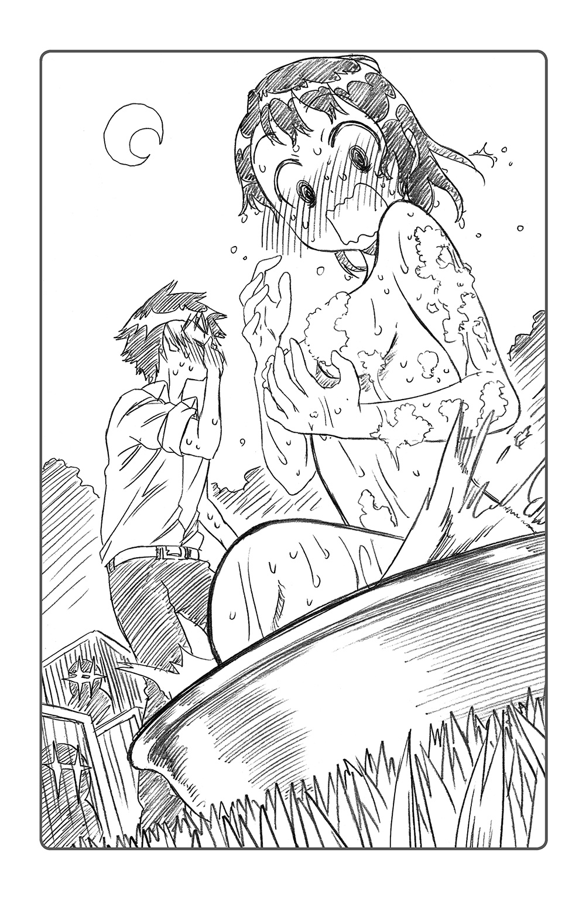
「う......にゃ、うにゃああああああああああああああああああっ!?」
校庭中に響き渡る声をあげ、小咲はその場にくずおれた。
これはもう、痴女のレッテルすら貼られかねない事態だった。それも、憧れの人の前でこんな痴態をさらすことになってしまうなんて......。
まさに、本日最大最悪の受難である。
――あはは。終わった......。何もかも......。
そのあとのことはよく覚えていない。あまりの恥ずかしさに、完全に意識がブラックアウトしてしまったからだ。
※
「......咲、小咲！ 小咲ってば」
まどろみの中で、誰かが自分の名前を呼んでいる。身体を揺すっているようだ。
「ん、む......にゃ、にゃあ......」
「なーに猫みたいな寝言いってんのよ」
そんなセリフとともに、額にずびし、と痛みが走った。誰かに手刀で叩かれたようだ。
「あうっ!? い、痛いよう！」
「いつまで寝ぼけてんの。今日の午後は飼育係の手伝いに行くんでしょう？」
寝ぼけ眼をこすってみると、そこには見慣れた親友の姿があった。宮本るりが、眼鏡ごしに小咲の顔を覗きこんでいる。
「あれ......。るりちゃん。え、なに？ 私寝てたの？」
きょろきょろと周りを見回してみると、帰り支度をしているクラスメートたちの姿があった。
「あんた、ホームルームのあいだじゅう居眠りしてたわよ。んで、今はもう放課後」
「ああ、じゃあ、今のは全部夢だったんだ。......猫のウイルスも、しゃべるワニも、一条君に裸見られたのも、全部夢だったんだね。......よかったぁ」
心底ほっとした。小咲は全身脱力して、深いため息をつく。
「なにその愉快な夢。特に『一条君に裸見られた』のくだりが気になるわね」
「ゆ、愉快どころか、完全に悪夢だったけど」
小咲は大きく伸びをして、帰り支度を整えはじめた。
今度こそ、飼育スペースで午後の楽しいひと時を過ごすのだ。
「それじゃ、るりちゃん。私そろそろ、一条君たちの手伝いに行ってこようかにゃ」
「......『にゃ』？」
るりは、親友の謎の語尾に不思議そうな表情を浮かべていた。
だが、小咲は自分の言葉遣いに気がつくこともなく、手を振って校庭へと向かうのだった。
※
「おう！ 小野寺！」
すっかり色づいたイチョウやモミジに囲まれ、校舎脇の飼育スペースにいる一条楽が、小咲に向かって手を振っていた。
「今日も手伝いに来てくれたのか？」
「うん。今日は委員会もないし、手持ち無沙汰だったから」
「そっか、いつもありがとな」
なんだか妙に既視感のあるやりとりだった。
「......あれ？」
ふと気づけば、楽がトングで生肉を与えているワニ――たしか『マルガリータ・ド・佐藤』とかいう名前の――が、なんだかニヤニヤしたような顔でこちらを見ている。
歯をカチカチさせているそのしぐさが、どういうわけかまるで「ほらあんた、早く告っちゃいなさいよ」と言っているように見えてしまう。
「どうしたんだ、小野寺。変な顔して」
「あー......。私、ちょっと疲れてるのかな？」
小咲は自分に言い聞かせるようにつぶやいた。そう、さっきのはただの夢、ただの夢......。
と、そのとき。校舎の裏手から怒りのこもった声が聞こえてきた。
「あーもー！ なんなのあのバカ猫！ ムカつくわ！」
肩をいからせるようにして歩いてきたのは、もう一人の飼育係、桐崎千棘である。
「どうしたんだよ？」
「ちょっとこれ見てよ、この手の甲のケガ！」
千棘が差し出した手を見て、小咲は息をのんだ。それはさっき夢の中で自分が負った傷と、寸分違わぬものだったからである。
「......校舎裏に、小さい黒猫がいてさ。撫でてやろうと思って手を出したら、このザマよ！ まったく頭来るわね！」
「まあその気持ちはわからないでもないけどな......」
楽がうんうん、とうなずく。
そのときふと、千棘の頭の上を見た小咲は、息をのんだ。
「ち、千棘ちゃん!?」
千棘の頭の上で、何かがぴこぴこ動いていたからである。
「あ、頭の上のそれって――」
「頭って？ え？ 何？」
きょとん、とした表情で千棘が頭上に手を伸ばす。
「――って、いつものリボンだけど。変かな？」
「あ、あれ？」
目をごしごしこすって、もう一度千棘のブロンドをじっくりと見返してみる。
しかし彼女の頭の上にあったのは、トレードマークの赤いリボンだけであった。
「小咲ちゃん、リボンがどうかしたの？」
「あ、うん。見間違えた......のかな」
小咲はほっとため息をついた。
「何と見間違えたんだよ、小野寺」
まさか言えるはずもない。リボンをネコミミと見間違えたなんて言ったら、大笑いされるに決まっている。
「あ、えーと、にゃんでもにゃいよ......？」
小咲は、そんな猫語まじりの愛想笑いで誤魔化すしかなかったのであった。
その廃工場は、不気味なほどに静まり返っていた。
「はあっ......。はあっ......」
赤茶けた巨大な工作機械の陰に身を隠し、黒衣の暗殺者が息を整える。古くなった油の臭い、錆びた鉄の香り――そして、血の臭いが、彼女の鼻腔をくすぐった。
彼女は、まだあどけなさの残る少女であった。長く美しい栗色の髪、陶器のように透き通った肌、白くしなやかな手足。返り血を浴びた外套と、細い指先に不釣り合いな四十四口径がなければ、誰も彼女を暗殺者であると認識することはできないだろう。
だが少女はその歳ですでに、自分の年齢の十倍以上の人間を始末してきた、凄腕のエージェントなのである。
「くっ.........」
彼女の外套の袖口からのぞく白い手の甲から、ひと筋の赤いしずくがぽたり、ぽたりと垂れ落ちていた。先ほどの奴らの銃撃で、弾丸が肩口にかすってできた傷だろう。だが、この程度の傷ならば、まだ戦闘続行は可能だ。
「なんとかして、ここから逃げのびませんと」
無人のはずの廃工場に、かつん、かつん、という足音が響き渡った。
足音の数は二......いや、三人。
『組織』から抜けた自分を始末するべく、派遣されてきた連中だろう。
「............」
彼女は無言で、弾倉を確認する。残弾は二発。これで三人の相手をするのは無謀だ。
そのとき、かつん、と足音の一つが近くで立ち止まったのを感じた。
敵の一人が床に落ちた血痕からこちらの居所を調べているのかもしれない。少女は息を殺し、追手の様子をうかがう。
始末するならば、今しかありませんわ......！
暗殺者の少女は、追手に銃を突きつけようと、工作機械の陰から身をひるがえした。
「先手必勝です......わひゃあっ!?」
だが不意打ちしようと躍りかかったはずの彼女の身体は、なにかに蹴つまずいてその場で転倒。コンクリの床に、ぬべしっ、と顔面を打ちつけてしまう。
「あいたたた......。もう、なんね......！」
むくりと起き上がった少女の瞳には、大粒の涙が浮かんでいた。よくよく見れば、足元に缶が転がっていた。これにつまずいたのだろう。
「こんなところに空き缶......。もう、撮影のジャマですわ！」
「......ああもう！ カットカットカッート！」
少し離れた場所から、いらだちまじりの男性の声が聞こえてきた。
「――橘さん、もういい加減にしてよ、ホント！ 何回ポカやらかしたら気が済むの!?」
額に青筋を浮かべているのは、監督兼、映画研究部部長。少女が彼に怒鳴りつけられた回数は、もうすでに数えきれないほどであった。
「あら監督さん。でも、少しずつ上手くなっていると思いません？ 不肖この橘万里花、ルックスの良さと飲みこみの早さだけは、誰にも負けないと自負していますわ」
「はあ？」
銃を構えていた黒服の追手も、首をかしげた。
この主演の少女の自信はどこからくるのだろうか――そんなふうに彼の目が語っていた。だが、万里花はいっこうに気にしない。
「ふふ......この調子でいけば、来年くらいにはハリウッドからオファーが来てもおかしくありませんわね」
「同じシーンでＮＧ二十回出す女優が、それを言うかね......」
映研部長が、カチンコ片手にため息をついた。
夏休み。橘万里花は、映画研究部の撮影に主演女優として参加していた。
いや、参加していた、というと語弊があるかもしれない。半ば強引に、自分を主演女優として売りこんだのである
きっかけは、クラスメートの舞子集がもたらした情報である。
――秋の文化祭では、うちのクラスは演劇をやることになるかもね。
それを知ったあとの万里花の思考は、次のようなものだった。
（クラス演劇で主演をやれば、楽様の注目を得ること間違いなしですね）
（では演技力を磨きませんと）
（そうだ、映画研究部の撮影に飛び入りして、演技力の修業をすればいいのですわ！）
思いついてすぐさま、万里花は映研の門を叩いた。
そのとき、映研が夏休みを利用して撮影しようとしていた自主製作映画は、『凄腕の女エージェント』が主人公のガンアクションムービー。万里花は、自分こそがその主演にふさわしいと熱烈なアピールをしたのである。
突然の部外者の申し出に部員たちも狼狽えたが、万里花の可憐なルックスが主役のイメージ通りだったこともあり、彼女を結局、女優として起用することにした。
だが撮影が始まってすぐ、部員たちはその選択が誤りだったことに気づいたのであった。
「まさかここまで足をひっぱられることになるとは......」
映研部長がため息をついた。
だが、万里花はそんな彼の落胆などおかまいなしだ。
「それで監督さん、私の演技力はいかがですか？ ......楽様に振り向いてもらえるくらいには上達したでしょうか」
『凄腕の女エージェント』気取りで、モデルガン片手にカッコよくポーズをキメる。
だが、
「いや......。悪いけど、正直言って使い物にならないなあ」
部長の歯に衣着せぬ物言いに、万里花はほっぺたを膨らませた。
「むっ......。それは心外ですわね。いったい何が悪いんでしょう？」
むっとしつつも素直に尋ねる。これも演技力向上のため、ひいては楽様のため。
ここは真摯な姿勢で演技を学ぶべきだろう。
「まあ、簡単なアクションですぐ転ぶくらい運動神経に問題があったり、相手役の俳優の名前をアドリブで『楽様』って呼んだり、ツッコみどころはいろいろあるけど――」
「けど？」
「一番は、役になりきってない、ってことかな」
「役に......ですか」
「普通、俳優は自分の役を徹底的に研究して、完全になりきる努力をするんだよ。たとえば職業ものの役だったら、実際に自分でその仕事ができるくらいにね」
映研部長が例に挙げたのは、工事現場で働く青年の役になりきるため、実際に現場でアルバイトまでした俳優の話だった。役の研究のために、そのくらいする俳優はザラにいるのだそうだ。
「――橘さんにはまだその努力が足りていないような気がする。まだ素のままだよね」
「ふむ。それは確かに重要な意見かもしれませんね。――では、『凄腕の女エージェント』という役の場合はどうすれば？」
「そうだなあ。そういうフィクションめいた職業の場合は、実際にやってみるわけにもいかないからね。研究って言っても既存の映画見たりするしかない、かなぁ」
モデルガンを手の中で弄びながら、万里花はため息をついた。
――実際に『凄腕の女エージェント』という仕事を体験できれば、話は早いのでしょうけど。
「うーん......どうしたものでしょうか」
※
「うーん、どうしたものかしらね......」
真夏の日差しの下、桐崎千棘は、メランコリックな表情を浮かべながら繁華街を歩いていた。ワンピースの下にじっとりとかいた汗が恨めしい。
ただでさえ湿度が高くじめじめした陽気なのに、気分のせいでより一層不快に感じられる。さっきからすれ違う人たちも、どうも自分の顔を見て避けているようだ。
よほど今の自分は、機嫌の悪い顔をしているのだろう。
「先ほどからどうしたのですか、お嬢。何かお悩みがおありですか？」
そう尋ねたのは、一歩後ろを歩く鶫誠士郎である。
この炎天下も、彼女にとってはどこ吹く風、涼しげな顔をしていた。シャツの上に男物のジャケットまで着ているくせに、大したものである。
「さっきクロードと、ちょっとひと悶着あってね」
「いったい何があったんです？」
「そうね......あー......思い出しただけでイライラするわ......！」
千棘は地団太を踏みつつ叫んだ。
「なんで小咲ちゃんたちと買い物に行っちゃダメなのよ！ あったまくる！」
桐崎の屋敷でクロードからそれを告げられたのは、つい数時間前のことだった。
千棘が、お目付け役の彼に「日曜はクラスメートの小野寺小咲や宮本るりと水着を買いに行く」と伝えたときのことだ。
「いけませんお嬢。今週末は外出を控えていただきます」
クロードは、千棘の提案を聞くなり即座に首を横に振った。
「なんでよ。もう約束しちゃったのよ？」
来週には友人たちとの海水浴が控えている。
せっかく初体験の日本の海なのだから、新作水着で行きたいと思っていたのに。
「実はこの街に、新たな抗争の火種がくすぶっているのです」
「抗争の火種？」
千棘は眉を吊り上げ、クロードをにらみつける。
しかしクロードはほとんどひるむこともなく、
「ええ、このところ街で新興のヤクザ組織が幅を利かせはじめましてね。なにかとこちらの勢力圏に手を出してくる厄介な連中でして......。我々は目下、その対応に追われているのですよ」
「ああ、パパもそんなことを言ってたわね」
ビーハイブのボスである千棘の父が、最近この街に現れた新興のヤクザファミリーに手を焼いていると漏らしたのは、つい先日のことだ。
確か、虻内会という名前だっただろうか。
彼らは集英組とは異なり、麻薬や売春、裏カジノに躊躇なく手を出すダーティーな組織なのだそうだ。非合法に得た大量の資金を利用して、最近急速に勢力を拡大しつつあるらしい。
しかも勢力圏を広げるためなら手段を選ばないようで、この街の既存勢力である集英組やビーハイブに因縁をつけ、小競り合いを仕掛けることもしばしば。
千棘や楽の父も、虻内会の扱いには苦労をしているらしい。
「現在、ビーハイブの構成員が虻内会の連中を牽制するため、毎日交代で街を巡視しているのはご存じで？」
「そういえば、夏休みに入ったあたりから、みんな忙しそうよね」
最近、街中でビーハイブの下っ端がうろうろしているのを何度か見かけたような気がする。あれは何をしているのかと思っていたが、ヤクザの動きを見張っていたわけか。
「虻内会は新興とはいえ、なかなかの武装勢力......。幸いまだ小競り合い程度で、本格的な抗争には至っておりませんが、あなどるわけにはいきません」
クロードは眼鏡の位置を直しつつ、
「私と誠士郎も、この週末、街の巡視任務に当たることになりましてね。......その間、お嬢のボディーガードに当たる人間がいないのです。ですから、お嬢には週末、屋敷で過ごしていただきたいのですよ」
なるほど、ようやく理解できた。要するにこの男、ボディーガードなしで千棘を自由に行動させたくないらしい。相変わらず過保護もいいところだ。
「別に大丈夫よ。護衛なんていらないわ。日本は基本的に平和な国なのよ？ そのヤクザファミリーだってさすがに一般人に手は出さないでしょ？ そうそう危険に巻きこまれることなんてないってば」
「いいえダメです。お嬢はわかっておられない」
クロードは、やれやれ、といった調子で首を振った。
「いいですか。ヤクザは抜きにしても、屋敷の外は常に危険だらけです。......たとえば道で野良犬や酔っ払いに絡まれることもあるでしょう。怪しげなキャッチセールスや、いかがわしい盛り場のチンピラどもも十分にお嬢の脅威となりえます。そして特に性質が悪いのは、あの一条のガキです。お嬢を誑かそうとするあの小僧こそが、最大の危険人物だと言ってよいでしょう」
最後のは確実にただの私怨だったが、ともかくクロードには千棘を護衛なしで行動させるつもりはないらしい。
「はいはい、わかったわよ。ボディーガードをつければいいんでしょう？ だったらクロードや鶫じゃなくても、手の空いてる他の人でいいわ。......グレッグとかマイケルとか、いろいろいるでしょう？」
「いいえ。あんな若造どもにお嬢の護衛を任せるなんて、承服いたしかねますね。最低でも私や誠士郎くらいには腕の立つ人間でなければ、ボディーガードは務まらないでしょう」
否定ばかりするクロードに、千棘はついカチンと来てしまう。
「じゃ、じゃあ！ 逆に言えばそのくらい強い人を連れて来れば、週末の買い物に行っていいってことよね!?」
息巻く千棘を見て、クロードは「ふっ」と笑みを浮かべた。
「まあ、そのときは考慮してもいいでしょう。......そんな人物がいれば、の話ですが」
わかったわよじゃーすぐに連れてくるわよクロードの馬鹿！ と言い捨て、屋敷を飛び出してみたのだが。
「つぐみやクロードと同レベルの凄腕の用心棒なんか、そこらにいるわけないことくらい最初から知ってたわよ......」
炎天下を歩き回りつつ、何とか週末の買い物に行く他の方法を模索してみたのだが、まるで何も思い浮かばない。無駄に体力を消耗し、いらだちを増加させただけだった。そりゃ、鬱屈した気分も顔に出るというものだ。
「なるほど、それでお嬢はさっきからずっとイライラされていた、と」
「そう。暑いせいか、いいアイディアも思いつかないのよね。......でも、このまま屋敷に帰るのも、なんだかばつが悪いし......」
むしゃくしゃして歩き回っているうちに、いつの間にか、郊外の辺鄙な場所まで来てしまったようだ。
休憩がてら、鶫と二人、路傍の木陰に腰を下ろす。
視界には、うらぶれた倉庫のような建物が林に囲まれるようにしてぽつんと建っていた。あれは廃工場かなにかだろうか。
「......ふう、どうしたもんかしら」
楽の口利きで集英組の猛者を紹介してもらうということも一瞬考えたのだが、あそこは少し前までウチと対立していた組織だ。今は表面上抗争が停止しているが、クロードがヤクザを自分の護衛につけるのを許すとも思えない。
「つぐみからも、あの頭の固いクロードに言ってやってよ。......はあ」
「いえ、私はクロード様に意見できる立場ではありません。......だいいち、お嬢の外出に有能なボディーガードをつけるべきだという意見自体には、私も同感ですよ」
「むむむ......つぐみのケチんぼー」
むくれて見せると、鶫が「うっ」とうろたえる。
「も、申し訳ありませんお嬢......。でしたら、私の伝手で本国の腕利きを何人か当たってみましょうか。急な話ですが、うまくいけば今週末の護衛を引き受けてくれる人間がいるかも」
「そうねー。......まあ、よろしく頼むわ」
「では」と電話をかけに鶫がその場を離れる。
もっとも、千棘は彼女の伝手とやらにはあまり期待はしていなかった。電話一本でわざわざこんな極東の島国まで、しかもただの小娘のショッピングの護衛のために来てくれる物好きなど、いるとは思えなかったからだ。
「あー。そのへんに凄腕の用心棒との出会いが転がってないかしら、......こう、なんか映画みたいに、『平和だったはずの日常に突然現れた、凄腕の女エージェント！』とか」
と、千棘がそんな馬鹿馬鹿しいことをつぶやいた瞬間だった。
「あら――？」
目の前の倉庫のような建物から、得体の知れない少女が現れた。
大きな目元に、流れるような明るく長い髪。
白雪のような肌が特徴的な、華奢で清楚な印象の少女である。
だが、そんな可憐な容姿とは対照的に、彼女が羽織っていたのは飾り気のない外套だった。炎天下にありながら、冷たさすら感じるほどの深い漆黒のコートである。
なにより目についたのは、その外套の一部を染めている赤色。今しがた、その倉庫の中で殺戮劇を演じてきたかのような――返り血に似た、赤だった。
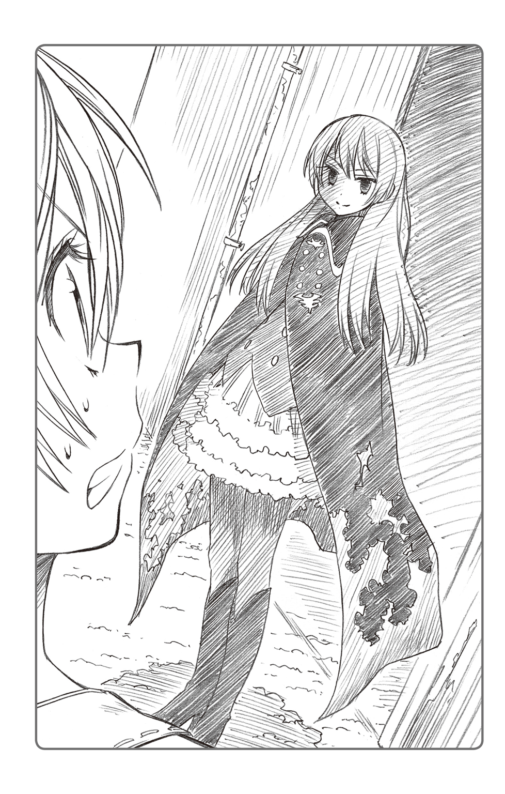
「......ごくり」
千棘は、突然目の前に現れた非日常の存在に言葉を失っていた。
ビーハイブのボスの娘として、裏の世界に触れる機会のあった千棘ですら、この少女のありようには異質なものを覚えたのである。「美」と「死」が同居しているような、そんな危うさがあった。
――血にまみれた、女暗殺者。
彼女をひと言で形容するなら、まさにそれだった。
「あ、あなた、いったい何者......？」
千棘の心臓が、早鐘のように鳴り始める。なぜ自分の目の前に、こんな見るからに危ない存在が現れたのか。驚きのあまり、逃げ出すことさえ忘れていた。
「人は伝説の女エージェント〝血染めのマリー〟と呼びますわ。ふふ......この姿を見て、今生きている人間はおりません」
「ぶ、〝血染めのマリー〟......!?」
なんだその名前は。普通、殺し屋が『伝説の女エージェント』とか自称するものなのだろうか。
千棘は口をぱくぱくさせて、少女の紅に染まったコートを凝視していた。あまりに常識外れな存在に、どう反応していいかわからなかったのである。
しかも血染めの少女は、そんな混乱した千棘に追い打ちをかけるように、
「......なーんて、私も結構サマになってると思いません？ 桐崎さん」
どういうわけか、千棘の名を呼んだのである。しかも、柔らかな微笑を浮かべながら。
「な、なんであなた、私の名前知ってるの？」
微笑に騙されるな。警戒を解くのはまだ早い。相手が自分を標的とする殺し屋ならば、こちらの名前を知っていてもおかしくはないのだ。
千棘は身の危険を感じ、ごくり、と喉を鳴らす。
「なんでと言われましても。私たちクラスメートじゃありませんか」
「......クラスメート？」
そう言われても、暗殺者などに心当たりはない。もしそんなのがクラスにいたとしたら、クロードや鶫が黙っていないはずだ。
「あ、それとも桐崎さん。夏休みボケでクラスメートの顔も忘れてしまったんですか？ ふふっ、どうせならそのまま楽様のことも忘れてしまえばいいのに」
と、少女は意地悪そうに笑った。
千棘はここでふと、記憶にひっかかるものを感じた。
少女の笑い方といい、口調と言い、「楽様」といい、どこかで見聞きしたことがある。
ええと、あれは確か一学期の終わりごろに転校してきた――。
「あ!? あんた、もしかして万里花っ!?」
血染めの外套の少女――橘万里花は、目を丸くする千棘を見て、不思議そうに首をひねった。
「何をそんなにびっくりなさってますの？」
「だって、いつもとまるで雰囲気違うじゃない。化粧してるし髪もほどいてるし、服装だっておかしいし......全然わかんなかったわよ」
黒い外套に目を落としながら、万里花は微笑んだ。
「ああ、これは撮影用の衣装です。私、いま映画研究部の撮影に協力しておりまして――」
そう言って彼女が懐から取り出したのは、ゴツくて大きい拳銃。千棘が普段、屋敷で目にしているものにそっくりだったが、こっちはモデルガンなのだろう。
「私の役は『凄腕の女エージェント』ですわ。〝血染めのマリー〟という役名でして。ふふ......素敵でしょう？」
「へえ......」
万里花は、演技力向上のために映研に押しかけて......というくだりを語った。
彼女の意外なバイタリティに、千棘は驚かされてしまう。
「よくやるわね、あんたも」
「ですが、演技の道もなかなかひと筋縄ではいかないようでして。『凄腕の女エージェント』の役を極めるためには、実際にそれを体験することが一番らしいのですが......」
体験する手段が見つからないのです、と万里花は目を伏せた。
「ふうん、格好だけ見れば本物っぽいけどね。一瞬、マジで殺し屋かと思ったくらいだし――」
うんうん、と神妙に千棘がうなずく。さっきは本気で身の危険を感じたほどだ。
「迫力だけで言ったら、ビーハイブの修羅場をくぐってきた連中にも負けないかも」
「ビーハイブ、ですか――」
万里花は少し考えこむようにして、千棘の顔をじいっと覗きこんだ。
「そういえば、桐崎さんのおうちはギャングのファミリーを経営されてるんでしたね」
「......そうだけど？」
ややあって、万里花が目を輝かせながらぽんと手を叩く。
「いいこと思いつきましたわ！」
「え？」
満面の笑みを浮かべながら語る万里花の『いいこと』――それは思いもよらない提案だった。
「桐崎さん、あなたのおうちにしばらく、私を置いてくれませんか？ 用心棒のような形で」
「よ、用心棒!?」
突然万里花の口から飛び出てきたその単語に、千棘は開いた口が塞がらなかった。
まさかあの橘万里花が――楚々とした雰囲気のご令嬢が、ギャングの用心棒をやりたいだなんて。
「あんた本気？ あまりの暑さに熱中症にでもかかったんじゃ......」
「いいえ。本気も本気です」
万里花は真剣な表情で千棘を見つめた。
「さっきも言った通り、私が『凄腕の女エージェント』役を極めるためには、実際にそれを体験してみることが一番だと思うのです。......その点、ギャングのファミリーをやってらっしゃる桐崎さんのおうちは、ベストな環境なのではないかと」
「まあそりゃ、うちには本物がいっぱいいるけど......」
「そんなプロを間近で見てきた桐崎さんなら、私の演技の良し悪しを的確に判断できると思うのです。......桐崎さん、ぜひ私に演技指導をお願いしますわ！」
まっすぐな目で見つめられ、千棘は少し気圧されてしまった。
こんなに真面目な万里花の姿を見るのは珍しいかもしれない。根底の動機はどうあれ、演技力を身につけたいという熱意は本物のようだ。
――楽のためとなると、本当にまっすぐな子なのよね。
万里花にこうまで必死に頼まれてしまっては、千棘もイヤとは言えない。
「まあ、協力してあげてもいいかもね。私にできる範囲でなら」
「本当ですか、桐崎さん！」
万里花が、ぱあっと顔を輝かせた。
「でも、用心棒〝役〟を体験させてあげるだけよ？ 一般人を危険な目に遭わせるわけにはいかないし。......あくまで見学みたいな感じで」
「ええ、それで十分ですわ。......桐崎さん、私のことは今日から、ビーハイブの紅い死神、〝血染めのマリー〟とお呼びくださいませ」
万里花は、びしり、と拳銃を構えるポーズを取った。
「〝血染めのマリー〟って......あんた、その映画のキャラのままでうちに来る気？」
「ええ。女優たる者、常日頃から役になりきることが必要ですから。......せっかくなので、ビーハイブの方々の前でも正体をバラさず、『凄腕の女エージェント〝血染めのマリー〟』という設定で参りましょう。そのほうが演技の勉強になりそうですし」
「はあ、ホント熱心なのね。......でも、そんなの上手くいくかしら」
確かに千棘には、目の前の少女が万里花だと気づくことができなかった。
だが、凄腕の本職である鶫やクロードまで、同じように騙しとおすことができるだろうか。
「大丈夫ですわ。私、小さいころから演技力には少し自信があるんです。そのうちオスカーだって狙えるレベルですわ」
そのとき、背後から「お嬢～！」という声が耳に飛びこんできた。小走りの足音の主は、黒髪のショートカットの少女だ。
少女の姿を認め、万里花がニコリ、と微笑む。
「――それでは、実際に試してみましょうか」
「試すって......？」
首をかしげる千棘の前に、黒髪の少女――鶫が立ち止まった。
「お嬢......！ すみません、やはり私の知り合いもみな都合がつかないそうで――」
「ああ、おかえり。つぐみ。実はこの人なんだけど」
千棘がそばの血染めの少女を紹介しようとした瞬間、鶫は表情を硬くした。
「......むっ!?」
鶫は鋭い目つきで万里花をにらみつけ、ジャケットの懐に手を忍ばせる。
「貴様!? どこの組織のものだ!?」
警戒心を露にしつつ、声を荒らげた。
メイクや衣装のせいなのか、鶫ですら、今の万里花の姿を看破することはできないらしい。完全に〝怪しげな女暗殺者〟だと思いこんでいるようだ。
鶫のそんな様子を見て、万里花が視線を送ってきた。「言った通りでしょう？」と。
外套の少女は余裕の笑みを浮かべつつ、口を開いた。
「私は凄腕のエージェント〝血染めのマリー〟。......ビーハイブの伝説となる女ですわ」
「〝血染めのマリー〟......。ビーハイブの伝説だと？」
彼女の突然の発言に、鶫は息をのんでいた。だがそれは、彼女の正体を知る千棘も同様だったのである。
――何言いはじめたの、この子......。
※
数刻後、桐崎の屋敷の面々は、突然の来訪者に色めきたっていた。
屋敷に乗りこんできたのは、血染めの黒外套に身を包んだ女の子だ。服装こそ奇抜ながら、深窓の令嬢のような、どこか上品な雰囲気をまとった少女であった。
そんな彼女があろうことか、自らを伝説の凄腕女暗殺者、〝血染めのマリー〟だと名乗ってきたのだから、ギャング連中も驚きである。
もちろんビーハイブの面々だって、普通ならそんな子供じみた戯言は信じない。ちょっと残念な小娘だと笑ったうえで、丁重にお帰りいただくところだっただろう。
だが、その少女がボスの娘の賓客――しかも、新しい護衛として迎え入れられたとなれば話は別なのであった。
屋敷内、千棘の私室。
「......案の定、誰にも正体はバレてないみたいですわね。さすが私、演技派女優ですわ」
部屋に置かれたクイーンサイズのベッド、その柔らかな高級毛布の上に、黒衣の暗殺者の少女が遠慮なく腰を下ろした。
もちろん、彼女の正体は橘万里花その人だ。映画撮影のメイクや衣装もそのままに、彼女は千棘の客人として堂々と屋敷にやってきたのである。
「まあ、どうせバレるのも時間の問題だと思うけど――」
そのときふと、千棘は部屋の外に何者かの気配を感じた。
ドア口のほうをちらりと見てみると、自分のボディーガード二人がいぶかしげな表情で、ドアの隙間からこちらの様子をうかがっている。
「......まさか、お嬢が本当に新しい護衛を連れてくるとはな......。しかもまだ年端もいかない少女ではないか。あんな娘が私と同格の凄腕だというのか......？」
値踏みをするようなクロードの視線が、万里花に注がれている。
鶫もまた不信感を露にしつつ、
「いえ、実力については私も疑わしいものを感じています。彼女自身が『凄腕』だと自称しているだけですから。見たところ、体捌きも素人同然のようですし」
「ふむ......。あえて実力を隠した達人、という可能性は捨てきれんがな」
彼らがこんな覗きまでしているのは、暗殺者を名乗る少女の動向を警戒するとともに、その正体を見極めるためなのだろう。
――このまま万里花を私の護衛に仕立て上げて、週末の買い物に行くって方法も、なくはないわね......。
しかし千棘は、すぐに頭を振ってその考えを打ち消した。
あの二人に万里花の正体がバレるのは時間の問題だ。いくらなんでも、週末までビーハイブ中の人間を騙しとおすのは無理だろう。いかに万里花が演技に自信を持っているとしても、所詮は素人。どうせそのうちボロを出すに違いない。
小咲たちと買い物に行くなら、他の手段を考えるほうが現実的だろう。
「ホントは、演技指導につきあってる場合じゃないんだけどなあ......」
「桐崎さん、何か言いました？」
きょとん、とした顔で万里花がこちらを覗きこんでいた。
「あー、いや。別に」
まあ、引き受けた以上は最後までつきあってやろう。もっとも、自分にそんなに大した指導ができるとは思えないけれど。
「うーん。ところでさっきから視線を感じますわね......。鶫さんも強面の眼鏡の方も、部屋の外で何をこそこそなさっているのでしょうか」
万里花が半開きになった扉に不審げな視線を向けた。
ドアの隙間の鶫とクロードは、真剣な表情で万里花をにらみつけながら、何事かを相談しているようだった。
「ああ、アレはあんたのことを疑ってるのよ。あんたが本当は凄腕の女暗殺者でもなんでもない、ただの小娘なんじゃないかって」
ふむ、と万里花がうなずく。
「なるほど......。まず当面の目標は、〝血染めのマリー〟として彼らの信頼を得るような演技をしてみせることからですわね」
「んな簡単にいくかしら......」
千棘が内心ため息をついたところで、トントン、と扉が叩かれた。
「なに？」
「お嬢、失礼します。......そちらの方にお話が」
〝自称凄腕の女暗殺者〟を直接問いただすつもりなのだろうか、鶫がやや緊張した面持ちで部屋に入ってきた。万里花をにらみつけ、
「〝血染めのマリー〟、あなたに二、三質問があるのだが、少しいいか？」
有無を言わさぬ調子で、彼女を廊下へといざなった。万里花の正体を見極めようとしているのだろう。
「ええ、いいですわよ」
万里花はすました顔で廊下に出る。まるで自分が伝説の女暗殺者だと信じこんでいるかのように、その表情にはいっさいの動揺は見られない。いったいその自信はどこからくるのだろうか。
――だ、大丈夫かしら......？
仮に正体がバレても、まさか鶫が手荒なことをするとは思えない。だがいちおう自分には彼女を守る責任がある。今度は千棘が、ドアの隙間から廊下の様子を見守る番だ。
廊下では、鶫が黒衣の少女に向かいあい、真剣な表情で尋問を開始するところだった。
「ではまず〝血染めのマリー〟、あなたの本名、出身地、年齢などを聞かせてほしい」
「それは言えません」
「今まで何件くらいの暗殺をこなした？」
「数えきれませんわね」
「では、昨年シカゴで起こった犯人不明の暗殺事件、あれはあなたの――？」
「いちいち覚えていませんわ」
「好きな料理についてくらいなら、教えられるだろう？」
「秘密ですわ」
「好きな男性のタイプは？」
「楽さ......いえ。ノーコメントですわ」
鶫が不満げに鼻を鳴らした。
「ふん、自らの過去につながる事実は徹底的に秘匿するというわけか。......凄腕と自称するだけあって、やはりひと筋縄ではいかないな」
これ以上何を聞いても無駄だと悟ったのだろう、鶫も首を振り、追及をあきらめたようだ。
「......へえ、万里花もやるわね」
少し感心した。あれだけ平気な顔で終始シラを切りとおすなんて、なかなか肝が据わっている。自分で演技派女優とかいうだけのことはあるかもしれない。
――案外、週末までクロードたちを騙しきっちゃたりして。
だが、安心するのはまだ早かった。
「!?」
その瞬間、突如、黒衣の少女の背後に大きな影が現れたのである。
それは、クロードだった。千棘も気づかぬうちに、彼は足音を殺して万里花の背後に忍び寄っていたのである。
彼女の力量を試すつもりなのか、懐から抜いた拳銃のグリップを振り上げ、万里花の後頭部に叩きこもうとしていた。
――鶫の質問は囮だった!?
鶫に注意をひきつけさせ、自らが背後から急襲し、彼女の力量を試すつもりなのかもしれない。つまり、こちらが本命だったのだ。
しかし、当然万里花は一般人。いかに演技力があろうと、背後に立つクロードの気配を察知するようなスキルはない。
千棘には、「あぶない！」と警告する暇さえなかった。
しかし、拳銃のグリップが万里花の頭を捉えようとするより一瞬だけ早く、
「ああああああぁぁぁ―っ!? あれはっ!?」
ふと壁のほうに何かを見つけた万里花が、突如大声を上げ、大きく後方にのけぞった。
これはクロードも予想していなかっただろう。まさに今殴打しようとしていたはずの少女の後頭部が、頭突きとして自分の顎先に襲ってきたのだから。
「ぐほえあっ!?」
クロードは予想外の反撃を避けられるはずもなく、クリティカルな一撃をもろに顎に受け、背後に転倒してしまう。
「く、クロード!?」
ごすん、と鈍い音がして、そのまま床に倒れる。
大の字に倒れた彼の姿は白目＆泡吹き。よほど当たりどころが悪かったのだろう、完全に気絶していた。
「ま、まさかあの体勢から反撃しただと......!? ビーハイブの幹部クラスをいともたやすく倒すとは、やはりこの〝血染めのマリー〟、本物の凄腕か......！」
鶫は、目を見開いて万里花の所業に驚愕していた。
千棘から見れば、どう考えても偶然後頭部がヒットしただけなのだが、彼女はすっかり「〝血染めのマリー〟がクロードを倒した」と信じこんでしまったらしい。
騒ぎを聞きつけ、他のビーハイブ構成員たちも、どたどたと階下から現れた。
「お、おい！ なんかすげえ声がしたけど大丈夫か!?」「確かあの女の子の尋問をしてたはずじゃ......」「おい！ クロードさんが倒れてるぞ！」「......オゥマイガッ!?」「誰の仕業だ!?」「まさか......!?」「シット！」「そんなバカな!?」
ギャングたちはそれぞれ顔を見合わせたり神に祈ったり、目の前の幹部の醜態を受け止めきれずに混乱するばかりだった。無理もない。組織最強クラスの武闘派幹部が、年端もいかない少女に一撃で倒されたのだから。
混乱する彼らに対し、鶫が厳かに告げた。
「見ての通りクロード様を倒したのは、この〝血染めのマリー〟だ。......確かに〝伝説〟を自称するだけの実力の持ち主だったということだな」
畏敬の目が、そろって壁際の黒衣の少女へと向けられた。
――な、なにこの展開......。
この状況でもっとも混乱していたのは、千棘だったのかもしれない。
まさかあの橘万里花が、クロードを倒してしまうなんて。これはもう、奇しくも先ほどの彼女の言葉通り、ビーハイブの伝説になりかねない事件である。
しかし当の〝血染めのマリー〟――万里花は、周りをいっさい気にすることなく、食い入るように壁に貼られているものに夢中になっていた。おそらく、かなりの勢いでぶつけたはずの後頭部の痛みすら、忘れ去っているに違いない。
「......ああ、この写真焼き増ししていただけませんかしら......」
それは、千棘が楽との関係を偽装するために、廊下に飾っていた写真の一つ――林間学校で撮った、楽の浴衣姿の写真であった。
※
「あ、あの、マリーさん、俺と握手してください！」「バカ、こっちが先だ！」「じゃあ俺はサインを！ 『ミックへ』って！」「俺にも！ スーツの裏側に！」
広間には、万里花を取り囲むようにゴロツキたちのニヤケ面が並んでいた。伝説が生まれた瞬間を目の当たりにしたということもあり、みな興奮して鼻息を荒くしているようだった。
普通の少女なら卒倒でもしかねないこの光景。
しかし『凄腕の女エージェント』になりきっている万里花は、物怖じひとつせずに薄く笑みを浮かべていた。
「ふふっ。サインはしない主義ですわ。私が残す痕跡は......そう、標的にぶちこむ鉛玉だけ」
そでにされたにもかかわらず、ビーハイブの下っ端連中は「ヒューッ」「さすがクールだぜ」「伝説は一味違うな」と満足そうにしていた。クロードを倒したことで、万里花はビーハイブ内で絶対の信頼を得てしまったようである。
そんな万里花を一瞥し、千棘は苦笑いを浮かべるしかなかった。
――本当に伝説の女エージェントになっちゃうとは......。
当初はすぐ正体がバレるかと思っていたのに、いざふたを開けてみればこれである。
もはやビーハイブには、万里花が千棘の護衛をすることに異を唱える者はいないだろう。瓢簞から駒みたいな話だが、これで晴れて週末の買い物に行けることになったわけだ。
「でも問題はそんなことより、もう下手にあの子の正体をバラすわけにはいかなくなったってことね......」
〝血染めのマリー〟を取り囲むギャングたちを見て、千棘はため息をつく。
あんだけ伝説だ凄腕だと喜んでいる連中に向かって、「その子ただの女子高生だから」とはもう言えない。
黒衣の少女はそんな千棘の視線に気づくと、ギャングたちの輪を離れ、こちらに近づいてきた。
「あはは......大変なことになっちゃったわね」
口元を引きつらせる千棘とは対照的に、万里花はにっこりと笑みを浮かべた。
「ええ。まるで本物の凄腕女エージェントになった気分です」
「......まあ、実際本物だと思ってるだろうけどね、あれは」
「桐崎さんの家の皆さんが、こんなに演技指導に協力的だとは思っていませんでしたわ。あんな寸劇まで披露していただいて......。いったいいつの間に話をつけてくださったんです？」
「へ？」
どういうことだろう。話が嚙み合わない。
――もしかして万里花、さっきのクロードの一連のアレを、私の仕込みだって誤解してたりして......？
血染めの少女は、無邪気に笑いつつ、こう言った。
「特に先ほどのメガネに白スーツの方、素晴らしい演技力でしたわ。泡まで吹いて気絶するだなんて、やろうと思ってもできませんもの」
案の定だった。
まあ確かに、女の子がギャングの幹部を倒しちゃうなんてシチュエーション、ヤラセだと思うのが当然かもしれない。その後、他の連中にちやほやされているところも含めて、万里花は演技指導の一環なのだと思いこんでいるのだろう。
「あのメガネの方に演技のコツについてお話を伺いたいのですが、彼はどちらに？」
「ああー......クロードね。ちょっと今は会わないほうがいいんじゃないかしら。うん」
気を失ったクロードは、別室に運びこまれて治療中である。
もし、自分が何の訓練も受けていない一般人の少女に倒されたなどと知ったら、腹を切りかねない。とりあえず、万里花には口止めをしておこう。
「あのね、万里花。別にさっきのは仕込みとかじゃなくて――」
千棘がそうつぶやいたそのとき。
突然、バタン、と広間の扉が開かれた。
「た、大変だみんな！ ジョージの奴が！」
広間に飛びこんできたのは、二人のビーハイブ構成員だ。
頭から血を流して呻いている男と、それに肩を貸しているもう一人の男。二人とも着ているスーツのあちこちが破れたり、全身に切り傷や打撲傷を負ったりしていることから、何らかの血なまぐさいアクシデントに巻きこまれたのは明白だった。
二人の様子を見て、広間に集まっているギャングたちはみな一様に、殺気だつ。
「ジョージ!? 誰にやられたんだ!?」
「ヤクザだ......！ 裏通りを歩いているときに後ろからな......！」
肩を貸している男が、憎々しげにそう答えた。
「ヤクザだと!? まさか......」
「そうだ。虻内会......あいつらの仕業だ」
「ファック！ あの汚い連中か......」
「闇討ちとはクレイジーな野郎どもだぜ......！」
千棘も、その虻内会という名前には聞き覚えがあった。父やクロードが懸念していた、例の新興ヤクザファミリーである。
ついに彼らがビーハイブに仕掛けてきたのだ。クロードが心配していたとおり、のっぴきならない事態に突入しようとしているのかもしれない。
「ジョージがやられたんだ。このまま舐められっぱなしってわけにもいかねえ」
「奴らに報復だ！ 戦争をおっぱじめるぞ！ 野郎ども！」
血気盛んなギャングたちが、うおおおおっ、と鬨の声を上げた。
銃を掲げて叫ぶ者、酒瓶をあおる者、負傷者の手当てをする者、武器弾薬の確認をする者。広間には抗争前特有の、バイオレンスな空気が漂い始めていた。
そんな様子を見て、万里花が興味深そうに嘆息する。
「すごいですわ！ まるで本物のギャング映画の一場面のようです！ 私の演技指導のためにここまでしていただけるなんて......！」
「あ、いや。あのね。これ、演技指導とかじゃなくて......」
今、「目の前で起こりつつあるのは本当の抗争よ」と言ったら、いらぬ心配をかけることになってしまうかもしれない。こういう状況には慣れている千棘とは違って、彼女は堅気の娘なのだ。とにかく今日のところは、彼女には巻きこまれないよう、お帰りいただくのがいいかもしれない。
「万里花、ちょっとこっちに――」
そう言って千棘が万里花の手を取り、裏口へと導こうとした時だった。
「みんな、落ち着いてほしい！」
広間に、凜とした声が響いた。血気に逸ったゴロツキたちは、一斉に動きを止める。
「つぐみ......？」
こほん、と咳払いをひとつし、鶫は全員に聞こえるように大きな声を上げた。
「ボスの裁定を待たず、このまま虻内会との全面戦争に突入することには賛成できない。新興とはいえ、奴らも武装組織だ。まともに戦えば犠牲者が出る。......私は、お嬢や皆をできれば危険にさらしたくはない」
しかし、鶫の意見に反発するかのように、下っ端の一人が叫んだ。
「じゃあ泣き寝入りしろってのか!? 誰がジョージの仇を討つんだ！」
そうだそうだ、と追随する声。
しかし鶫は冷静に、
「落ち着け。何もしないとは言っていない。私には策がある。何しろこちらには、〝伝説の凄腕〟の御仁がいるのだからな」
そう言って万里花に、ちらと視線を送った。
ギャングたちも万里花の姿を認め、
「そうか〝血染めのマリー〟さんに頼めば！」「あのクロードさんだって瞬殺だったんだ」「ヤクザファミリーの一つや二つ......！」「ジョージの恨みも晴らしてくれるはず......！」
みな期待をこめた表情で〝血染めのマリー〟に熱い視線を送っている。
しかし、そんな彼らとは対照的に、千棘は、背筋に冷や汗が流れるのを感じた。
――え？ 何この流れ......!?
これは完全に想定外だった。万里花に用心棒〝役〟を体験させてやるだけの話だったのに、いつの間にかマジで用心棒みたいなことをさせられそうになってしまっている。
そんな千棘の内心も知らず、鶫は万里花に近づき、頭を下げた。
「〝血染めのマリー〟、今日会ったのも何かの縁だ。我々に力を貸してくれないか？」
――じょ、冗談じゃないわよ!?
鶫が頭を下げている相手は、ただのクラスメートの女子なのだ。
一般人に向かって、ギャング自らヤクザを何とかしてほしいだなんて、笑えない。事態がそろそろ冗談では済まされなくなってきたことに、千棘は焦りを感じていた。
しかし万里花は、いっさいあわてる素振りなど見せず、「ふっ」と笑みを浮かべている。
「......報酬は、スイス銀行の口座にお願いいたしますわね」
それはまさに、『凄腕の女エージェント』。いまだ彼女は、自分が巻きこまれている状況が演技指導の一環だと思いこんでいるらしい。
――この子マジで引き受ける気だ......。
「恩に着る。〝血染めのマリー〟」
鶫をはじめビーハイブの連中は、黒衣の少女のそんな快諾を受け、頰をほころばせていた。勝ったも同然といわんばかりの雄叫びが、あちこちから上がっている。
広間の中で、浮かない顔をしているのは今や千棘一人だ。もう完全に、真相を言い出すタイミングを失ってしまっていた。
「どうしよ......。このままじゃ万里花がリアルヤクザと戦う羽目に......」
※
その事務所は、街の歓楽街、雑居ビルの最上階にあった。
現在、時刻は夜八時。日は落ちても、歓楽街はますます活気づく時間帯だ。
千棘、鶫、万里花の三人は、虻内会との交渉のため、その雑居ビルに足を踏み入れていた。十階のエレベータを降りた先は、上等そうな赤のカーペットが敷き詰められたフロアだった。廊下の大きな窓からは、ネオンの煌めく夜景が見える。
廊下の先、ひときわ目につく木造りの巨大な扉の上には、『虻内会』の文字が掲げられていた。あれがヤクザの事務所なのだろう。
「なんだか、それっぽい雰囲気出てますわね」
くすり、と黒衣の少女が笑みを浮かべた。
鶫の「策」とは、『ビーハイブに〝血染めのマリー〟が協力していることを虻内会に知らしめ、相手に無血で降伏を促す』というものであった。
ビーハイブの猛者、クロードすら敵わなかった超凄腕の殺し屋――。そんな存在がこちら側についていることがわかれば、虻内会のボスも降伏するに違いない。自分の命が惜しければ誰でもそうするはずです――というのが鶫の言だった。
「つまり、今日は殴りこみっていうよりは、話し合いに行くわけよね？」
千棘は、前を歩く鶫に尋ねた。
勢いに流されるまま、万里花がヤクザの相手をすることになってしまったが、話し合いならばまだなんとかなるかもしれない。
「まあ、そうです。......一応、『交渉』という名目で先方にアポを取っています」
鶫は振り返ると、千棘を咎めるような目で見つめた。
「――でも、どうしてお嬢までここについてこられたんです!? 私と彼女――〝血染めのマリー〟だけで事足りると、何度も申し上げたじゃありませんか。ここは敵地です。場合によっては、刃傷沙汰になる可能性もあるんですよ!?」
「あ、いや。だって――」
そんなバイオレンスな展開に、万里花を巻きこませたくないのだ。
万里花の演技指導を引き受けたのは自分だ。少なくとも事態を見届ける義務はある。だからこそ千棘は、鶫の反対を強引に押しきり、こうしてヤクザのビルまでついてきたのである。
――でも、やっぱちょっと怖いかも。
心配のあまり頭を抱える千棘に、当の万里花がそっと耳打ちしてくる。その声は、いつもどおり、いや、むしろ少し興奮しているくらいだった。
「まさか、こんな『いかにもヤクザの本拠地』みたいなところで演技指導してくださるとは思いませんでした。舞台づくりにもここまで気を遣っていただけるなんて、私、桐崎さんを見直しましたわ」
「いや、あのね、もうコレ演技ってレベルの話じゃなくてね、」
あわてる千棘の台詞を、万里花がさえぎるように笑った。
「ふふ。大丈夫ですわ。演技という意識は捨て、本当に役になりきってみせろということですね。......そう、私は〝血染めのマリー〟。ヤクザだろうがなんだろうが、私に狙われて逃げられる者はいませんわ......」
彼女は彼女で、すっかり役になりきっていた。
――もはやこの誤解、そう簡単には解けないかもしれないわね......。
千棘がいろいろ迷っているうちに、廊下の奥にたどり着いてしまった。目の前の虻内会の門扉からは、言い知れぬ威圧感のようなものを感じる。
「立派なセットですね......。相手にとって不足ありませんわ」
しかし、伝説の凄腕になりきっている万里花は、恐れなどみじんも感じていない様子だった。ここまで来ると賞賛の領域である。
「さあ、行きましょうお二人とも。〝血染めのマリー〟の恐ろしさをぞんぶんに彼らに見せつけて差しあげますわよ」
万里花は漆黒のコートをひるがえし、扉に手をかけた。
両開きの扉が、ぎぎぎ、と音を立てて奥に開かれていく。
「!?」
と、そのとき。千棘が目にしたのは、予想だにしない光景だった。
「ようこそ、ビーハイブのお嬢さん方」
扉の先、部屋の中央のデスクで醜悪な笑みを浮かべていたのは、でっぷりと太ったタヌキのような外見の中年男だった。有名ブランドの特注スーツを着こみ、首には金のネックレス。太い指には巨大な宝石の指輪。革張りのチェアで巨体をふんぞり返らせているその姿は、どう見ても成金趣味のタヌキにしか見えない。
――あれが、虻内会のボス......。
だが、千棘が驚いたのは、タヌキ親父の趣味の悪さが理由ではない。
彼の周りに控えていた十人ほどの男たち――アロハシャツを着た部下のヤクザたちが、手にした機関銃の銃口を、そろってこちらへ向けていたからである。
「機関銃......!?」
アメリカにいたころだって、そうそう目にしたことはないものだ。それをこんな数多く用意しているあたり、このヤクザファミリーは想像以上に危険な存在なのかもしれない。
「......お嬢！」
とっさに鶫が千棘の前に飛び出し、機関銃の銃口から守るように立ちはだかる。
彼女も銃を抜こうと懐に手を入れたのだが、
「動くな、ビーハイブの犬。文字どおり蜂の巣になりたくなければな」
タヌキに言われ、鶫は渋々手を頭上に掲げた。
これだけの数の機関銃に狙われているのだ。いかに鶫といえどもどうすることもできないのだろう。
抵抗できなくなった彼女を見て、タヌキが鼻を鳴らす。
「ふん。キミたちがここに来ると聞いて、こうして罠を張らせてもらったよ」
「罠だと......？ 今日は話し合いだと約束したはずだ。これはどういうことだ？」
鶫が、周りの銃口に警戒しつつ、口を開いた。
「話し合い？ 約束？ 堅気でない我々の間で、そんなものを本気で信じるなど、バカのすることだよ」
「......私たちを騙したということか」
「騙されるほうが悪い」
タヌキ顔の虻内会会長が千棘を見て、にんまりと笑った。
「......だがまさか、桐崎の娘まで来るとは思わなかったがな。捕らえれば、ビーハイブのシマを乗っ取るためのいい交渉材料になるやもしれん」
男の笑みに、千棘はごくり、と喉を鳴らす。
「卑怯な連中ね......。ジャパニーズヤクザは、〝ジンギ〟や〝スジ〟を大事にするんじゃなかったの？」
「ふん、集英組のようなカビの生えた組織と一緒にされては困る。我々は、利益追求のためなら手段は選ばない、新しいタイプのヤクザなのだからな」
そう言ってじゃらり、と身に着けたアクセサリーを鳴らす姿は、見るに堪えない。千棘は胸糞悪くなり、思いきり相手をにらみつけた。
だが、この数の機関銃が相手ではどうすることもできない。頼みの綱の鶫ですら動けないのだ。
万事休すかと思われたそのとき、
「――ふふ、まさに典型的な小悪党の台詞ですわね」
芯の通った声が、事務所に響き渡った。
「あ、あんた......！」
まるで機関銃を恐れない万里花を見て、千棘は目を丸くして驚いた。
虻内会会長は声の主、黒衣の少女の姿に眉をひそめる。
「何者だ、小娘......！」
「悪党に名乗る名などありませんわ。......ですが、人々は私の所業を恐れ、口々にこう言うのです。凄腕の暗殺者〝血染めのマリー〟と」
それはまるで三文映画ばりの、芝居がかった口上であった。
「結局名乗ってんじゃん！」と思わなくもなかったが、ここでツッコむのは野暮なのだろう。
だが、虻内会の連中には効果てきめんなようで、
「〝血染めのマリー〟だと!?」「こんな娘が暗殺者......!?」「だが機関銃相手にまるで物怖じしていないぞ......!?」「まさか、とんでもない化け物なんじゃ......!?」
黒服たちは、機関銃を持つ手を震わせ、黒衣の少女に視線を送っていた。
「悪党には、この私直々に引導を渡して差しあげますわ」
そう言って万里花は、外套の内側から、細い指先には不釣り合いな大きな拳銃を取り出してみせる。
「ま、マグナムだと......!?」
人の頭くらいなら容易に吹き飛ばすことのできる、大口径の拳銃であった。もっとも、それが映画撮影用のモデルガンだと知っているのは、この場では彼女の他に千棘だけであったが。
〝血染めのマリー〟が銃を取り出したことに心底怯えているのか、タヌキは全身を汗ばませながら、叫んだ。
「......き、貴様！ 動くなと言ったはずだぞ！」
しかし万里花は、自分に向けられている機関銃の銃口などまるで気にすることなく薄笑いを浮かべていた。考えてみれば当然だ。彼女はこの状況も、壮大な演技指導の一環だと考えているのだから。
「あら、そんな小道具を向けられても、怖くもなんともありませんわよ」
殺気に包まれた空間の中を、彼女は悠然と歩を進める。
部屋の中央、タヌキ親父が座るデスクに向かって。
「......ひっ!? く、来るな」
銃口をも恐れぬその泰然自若とした振る舞いは、まさに幾多の死地を潜り抜けてきた凄腕のエージェント。知らぬものが見たら、圧倒されるに違いない。
千棘の傍ら、あの鶫までが「バカな......」と呆気に取られていたほどだ。
「う、撃つか......？」「いや、桐崎の娘に当たったらマズイ」「撃つのを気取られたら、俺たちから血染めにされちまう......！」
虻内会の部下たちは、万里花の自信過剰な演技に恐れをなし、すっかり縮み上がっていた。雰囲気だけで、銃を持つ相手を無力化してしまったのである。
――あの子の演技力、実はとんでもなくすごいんじゃ......。
デスクの前まで歩み寄った万里花は、すっかり青ざめた様子の虻内会会長を見下ろし、冷たい笑みを浮かべた。
「さあ、懺悔の時間ですわ。三秒数える間に、辞世の句でもお詠みなさいませ」
「ひっ、や、やめろ――私を誰だと......」
万里花は身を乗り出して、どん、とデスクの上に足を載せた。
そして、タヌキ親父の額に拳銃を突きつけ、引き金に指をかける。
「......三」
「う、うわああああっ!? わかった！ 金ならいくらでも出す！ 命だけは！」
額には脂汗をびっちりとかき、目には涙まで浮かべている。虻内会の会長は、命の危機を感じ、がたがたと身を震わせていたのである。
「......二」
「すまなかった！ ビーハイブには二度と逆らわない！ 約束する！ 念書も書く！ 今後、完全にそちらの傘下に入るから――」
「......一」
「いやだああああああああっ!? 撃たないでくれえええええっ」
ほとんど泣きじゃくるように、タヌキ親父が叫んでいた。
だが〝血染めのマリー〟には、まるで容赦の心などないようで、
「......ばんっ！」
「うひいっ......!? あひゃあ......」
銃声（口で）が、響き渡った。
だが虻内会会長は、それが本物だと思いこんでしまったようだ。
万里花の声にひどく驚いた彼は、身をびくん、と飛び上がらせ、白目を剝いて失神してしまった。かすかに漂ってくるアンモニア臭からすると、どうやら失禁してしまったらしい。よほど怖かったのだろう。
万里花は、そのまま黒い外套をひるがえし、
「美学なき悪を断罪するのも、また悪のつとめ......。今宵もまた、悪党の血の華を咲かせてしまいましたわね......」
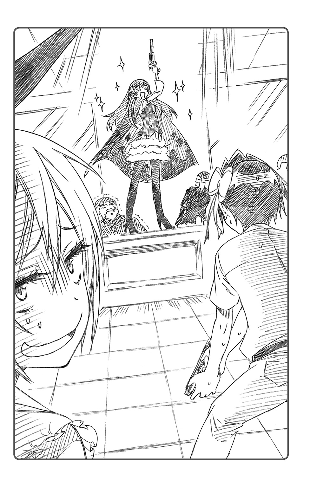
またしても自分に酔いしれるかのような決め台詞をつぶやきつつ、恍惚の笑みを浮かべていたのであった。
「あ、はは......。よくやるわ......あの子」
戦意喪失したタヌキ親分の姿を見た下っ端たちは、互いに顔を見合わせ、
「お、おい!? どうする!?」「逃げても無駄かもしれないぞ!?」「こうなれば、死なばもろとも......！」「やられる前にやるしかねえっ！」
おもむろに機関銃を構え、〝血染めのマリー〟に銃口を向けた。
あまりの恐怖から恐慌状態に陥り、特攻をしかけるつもりのようだ。
――まずい！
千棘が、無防備な黒衣の少女に手を伸ばしたそのときだった。
「貴様ら全員動くなっ！ 銃刀法違反の現行犯で逮捕するっ！」
突如、凜々しい女性の声が響いた。
「へ？」
ぽかん、とする千棘の背後から、大勢の人間が走る音が聞こえてきた。
それは、完全武装の屈強な男たちだ。金属製のヘルメットに仰々しいボディアーマー。巨大なジュラルミンの盾に書かれた文字は「ＰＯＬＩＣＥ」。がちゃがちゃと音を立てて背後から現れたのは、二十人は下らない警官隊だった。彼らが、一糸乱れぬ陣形で、次々に事務所の中へとなだれこんでくる。
「二班盾構え！ 突入ううううっ！」
後方で警官隊に指揮を飛ばしているのは、長い黒髪のスーツ姿の女性だった。千棘は、その女性に何度か面識があったのを思い出した。
「あの人って確か、万里花の――」
気絶した会長を抱えて警官隊から逃げようと、アロハシャツのヤクザたちが右往左往している。
そんな様子を見ながら千棘が呆然としていると、いつの間にか傍らに血染めの外套の少女がいた。
「桐崎さん、今がチャンスですわ。逃げましょう！」
「う、うん」
突然踏みこんできた警官隊に面食らってしまったが、このままだと自分たちまで彼らの厄介になりかねない。確かにここは、混乱に乗じて逃げるのが得策だろう。
踵を返して廊下に飛び出したのだが、鶫は不思議そうな表情をしていた。
「むう......なぜこのタイミングで警察が踏みこんできたんだ......？ あまりにも私たちに都合がよすぎるような......」
「あら？ 警察の方がピンチに駆けつけてくれるなんて、別に普通じゃありませんか？」
きょとんとする〝血染めのマリー〟。どうして鶫がそんなことを疑問に思うのか、理解できない、という面持ちだった。どうやら、彼女にとってこうした状況は日常茶飯事らしい。
――そういえばこの子、警視総監の娘だったわね......。
千棘は、橘万里花に付かず離れず護衛をしている警官隊のことを思い出した。
特にお付きのあの女性――本田さんならば、逐一万里花の状況を把握していてもおかしくはない。おそらく、万里花がギャングの用心棒の真似事をしていることもすべて承知の上だったのだろう。彼女に身の危険が迫るまで手を出してこなかったのが、何よりの証拠だ。
「万里花んちも、たいがい過保護よね......」
大人数の警官隊に常時護衛されている凄腕の女エージェント〝血染めのマリー〟。
確かにそれはある意味、〝最強〟の凄腕なのかもしれない。
万里花の活躍と警官隊の突入によって、虻内会は崩壊。警察の手を辛くも逃げのびたタヌキのボスが、ビーハイブに恭順の意思を示したことによって、虻内会は事実上消滅した。
『たった一晩でヤクザ組織を陥落させた凄腕の用心棒〝血染めのマリー〟』。
そのニュースは、すぐに街中の裏組織に広まった。
ついに現実のものとなってしまった〝血染めのマリー〟の伝説。これには千棘もさすがに啞然とするしかなかった。
しかもその伝説を作った当人は、ただのニセモノ、普通の女子高生なのである。本人自身、自分が成し遂げたことの凄まじさにまるで気がついていないのだから、そら恐ろしい話だ。
だがなんと、本人的にはまだ不満が残っていたらしく、あのあと、
「それで、桐崎さん、今夜の立ち回りはどうでした？ 私としては、もう少し演技に外連味を持たせても良かったかと思うのですが......」
などと相談してくる始末だ。
実際ヤクザ組織を潰すほどの演技をしたのだ。気持ち的には満点をあげても足りないくらいだったが、千棘にはもはや、彼女にまともなコメントを返す気力は残っていなかった。万里花の振る舞いがあまりにも常識外すぎて、精神が摩耗していたのかもしれない。
「あはは、そうね......。もういっそのこと、口の中に拳銃突っこんで、『地獄に落ちろ！』くらい言っても良かったわねー......」
そんなことを投げやりに言って、適当にお茶を濁した。
「なるほど『地獄に落ちろ！』ですわね。参考になりますわ」
言いつつメモを取る万里花の姿を見て、千棘は肩をすくめるしかできなかったのである。
※
その後。数日間、裏社会で〝血染めのマリー〟の噂がとぎれることはなかった。
虻内会を降した後も、彼女――万里花は、演技指導の名のもとに、ビーハイブの凄腕のエージェントとして、数々の戦果を上げ続けてしまったのである。
そんな伝説の一端を挙げれば、
「挑んできた手練れの殺し屋十人をまとめて倒した」とか、
「日本各地の指定暴力団をいくつも壊滅に追いこんだ」とか、
「中東の紛争地域に武力介入して平和をもたらした」とか。
もちろん、噂に尾ひれがついたものも多いのだが。
ただの女子高生であるはずの万里花が、運と偶然とハッタリだけで八面六臂の活躍をしていく様を目の当たりにして、千棘はただただ開いた口が塞がらなかった。
――これって、もし彼女の正体がバレたら、もはやタダじゃすまないってことよね......。
ビーハイブの勢力圏自体も、この数日で一気に広がることになった。
だが、それも〝血染めのマリー〟の名があってこそのもの。
もし今、彼女の正体がただの女子高生であることが他の組織に知られてしまったら、下部組織が反乱を起こすだろう。勢力のパワーバランスが崩れれば、大変なことになるのだ。
――この街の裏社会で全面戦争間違いなしだわ......。これ、人死にが出る程度じゃすまないかも......。
千棘はそんな自分の予想に、頭を抱えた。
真夏の陽気の下だというのに、まさに背筋が凍る思いだ。
「ねえ、大丈夫？ 千棘ちゃん。顔色真っ青だよ？」
「もしかして夏バテ？ 休んだほうがよさそうね」
千棘と同じテーブルに座る二人――小野寺小咲と宮本るりが、心配そうな表情を浮かべていた。
「あ、うん。へいきへいき。ちょっと考え事してただけだから」
今日は日曜日。待ちに待った小咲たちとのショッピングの日だった。
現在、ショッピングモールのフードコートで休憩中。
――まさかこの子まで一緒に来ることになるとは......。
千棘は同じテーブルに座る黒衣の用心棒を見守った。
「うーん。このとろけるような舌触り。やはり真夏のシャーベットは別格ですわね」
アイスに舌鼓を打つ彼女の名は、橘万里花。またの名を、〝血染めのマリー〟。
彼女が用心棒姿でここにいるのは、自ら今日の買い物の護衛に名乗り出たからである。これも演技指導の一環と思っているらしい。
千棘としては、学校での万里花を知る友人の前に彼女を連れてきたくはなかった。だが、凄腕として絶賛活躍中の〝血染めのマリー〟の申し出に、異を唱える者はいなかった。鶫やクロードにも、諸手を挙げて送り出されてしまったのである。
いつバレるかと思うと落ち着かず、千棘は心労のため、心から買い物を楽しめずにいた。
「あの......千棘ちゃん」
小咲が、万里花の顔を凝視しつつ、千棘に耳打ちした。
「この護衛のひと――〝血染めのマリー〟さんだっけ？ なんか私、前にどっかで会ったような気がするんだよね」
――ぎくり。
まずい。ここで〝血染めのマリー〟の正体がバレてはマズい。壁に耳あり障子に目あり、千棘のそばにクロードあり――。どこで関係者が聞いているかわからないのだ。
とにかく千棘は、ごまかしきることにした。
「あはは！ 小咲ちゃんやだなあ！ そ、そんなことあるわけないじゃん。ねえ？」
そう言いつつ、千棘は万里花にちらりとアイコンタクト。「演技して演技！」と彼女に目配せした。
「ええ。その通りですわ。小野寺様にも宮本様にも、本日が初対面です。きっと他人の空似でしょう」
万里花は、にこり、と笑みを浮かべる。
「うーん、そのしゃべり方......。絶対聞いたことあるよね、るりちゃん」
「そうかしら？ 気のせいじゃない」
るりは小咲の疑問を気にも留めず、ジャンボパフェと格闘中であった。
「うーん。聞き覚えあるんだけどなあ。どこだろ、確か学校で――？」
考えこむ小咲。確実に正解へと近づいているようだ。
このままでは、もう隠しとおすのは限界かもしれない。かくなるうえは。
「あー！ そ、そうだ！ 私、急用を思い出したわ！ 早く帰らなきゃ！」
千棘はやおら立ち上がると、さも急いでいるかのように時計に目をやり、万里花の腕をつかんだ。
「あら。桐崎さん、私まだシャーベットが残って......」
千棘は「ごめんそれはあきらめて！」と、小声で耳打ちし、彼女の腕を引いた。
「え？ 千棘ちゃん、もう帰っちゃうの？」
「急用ならしかたないわ。......残念ね」
という二人の声に後ろ髪を引かれつつも、千棘は泣く泣く踵を返すしかなかった。
これも、万里花を守るためなのだ。
「ごめんね二人とも。それじゃ、来週の海水浴旅行で――」
と、手を振ろうとしたそのときだった。
背後から、聞きなれた声がかけられた。
「あれ、千棘？ それに皆も。......奇遇だな。何してんだ？」
声の主は、一条楽。集英組の二代目にして、千棘の恋人（仮）である。
万里花が、「あ、楽様！」と小さく声を上げた。
せっかくここを離れようとしているのに、また厄介な人物が登場した。学校での万里花を知る人間との接触は、今は極力避けたいところだというのに。
「あ、あーらダーリン、ほんと奇遇ね～。......でも残念、私今から用事があるのよね～。おほほほほ」
と、万里花の手を引っ張り、千棘は小走りに駆けていこうとする。
「あ、もう！ 桐崎さん！ 何を急いでいるのか知りませんが、ちょっとくらい良いではありませんか」
楽が現れたからだろう。万里花は、その場から離れまいと抵抗する。
「い、いいから、ほら！ 行くわよ！」
そんな彼女の手を、千棘は強引に引っ張った。だが、それがいけなかったのかもしれない。黒衣の少女の存在を、楽に注目させる結果になってしまったからだ。
楽は彼女に目を留め、「あ」と声を上げた。
「橘......だよな、お前。......なにそのカッコ。えらく気合い入ってるけど」
楽に名前を呼ばれ、万里花は「え？」と顔を赤らめる。
「まあ楽様......。もしかして、私のことがおわかりになるのですか......!?」
「ああ。だから橘だろ。橘万里花。だいぶ雰囲気変わってるけど、わからねえってほどじゃねえ」
万里花はその言葉を聞き、感極まったように目を輝かせた。そして次の瞬間、すぐさま彼の胸に飛びこんだのであった。
「さすが......さすが楽様ですわあっ！」
「うおっ!?」
人目もはばからずに抱きつく万里花に、楽は狼狽する。
しかし万里花はいっこうに気にすることなく、力いっぱい彼を抱擁するのであった。
「こんな格好をしていると、誰にも気づかれないのです......！ でも、やはり楽様だけは気づいてくださいました！ ああ、これこそ私たち二人の愛の証ですわっ！」
彼らのやりとりを見て、テーブルに座っていた小咲とるりも、ようやく彼女の正体に気づいたらしい。
「ああ。あのテンション見て思い出したわ。橘さんだったのね、彼女。......衣装とメイクだけであんなに変わるというのもすごいわ。びっくりね」
「ほ、ほほ、ほんとにびっくりだよ！ こんな昼間からあんな......一条君に抱きつくなんて......！ あ、あ......え!? あんなにぎゅっと!? うう......万里花ちゃん積極的すぎるよぉ......！」
「あんたの驚くポイントはそっちなのね。......まあ、小咲らしいけど」
落ちこむ小咲の頭を、るりがよしよし、と撫でていた。
だが、慰めてほしいほどに落ちこんでいたのは、何も小咲だけではなかった。
――ああもうあのもやし！ なんでわかっちゃうのよおおおおおっ！
万里花の正体を見破るほど鋭いくせに、見抜くタイミングは空気を読まなさすぎである。千棘はそんな彼氏（仮）を心中呪った。
「ああ......やばい。ついにバレた。......小咲ちゃんたちにも......」
その場で千棘は脱力し、深く深くため息をついた。これだけ大勢の人に〝血染めのマリー〟の正体が知られてしまったのだ。もう、どこから情報が関係者に漏れるかわからない。
「全面戦争に発展したりしたら、私も万里花も一巻の終わりだわ......」
そんな不穏な想像が、千棘の頭の中をぐるぐるとまわっていた。自分たちに責任なんか取れるはずもない。せっかくここまで内緒にしてきたというのに、最後の最後で詰めをミスってしまうとは。
「――へえ、橘が映画の主演をね」
気づけば万里花はテーブルに戻り、楽や他の皆に、自分が黒い外套を着ている事情を説明しているところだった。楽の前ではもはや演技をするつもりもないらしい。
「そうですわ。桐崎さんも今回の件には、だいぶ協力してくれたんです」
「千棘が？」
「桐崎さんのお屋敷で『凄腕の女暗殺者』役の演技指導を受けることになりまして。最近はずっとその役になりきっていたのですわ。役作りのために実際の抗争シーンを再現していただいたりして、お世話になりました」
一同は、へえ、と驚きを露にした。
「ふうん。だからさっきまで万里花ちゃん、自分が〝血染めのマリー〟だって言い張ってたんだ」
「ずいぶん徹底していたのね、その役作り」
と、小咲とるりが言う。
「千棘も、なかなかいいところあるんだな」
急に楽に褒められ、千棘は驚いて顔を上げる。
「へぁ!? う、ううん。そんな手伝いくらいなんでもないわよ」
しかし自分がそれを安請け合いしてしまったせいで、この街が全面戦争の危機に陥っているなど誰も思うまい。
――あああ、どんどん秘密がバレていく......。
この面子だけならまだいい。だが、ビーハイブ下部組織の連中に〝血染めのマリー〟の正体を知られてしまうのではないかと思うと、気が気ではなかった。
だいたい、ここは人通りの多いショッピングモール内のフードコートだ。どうしたって他人の目につく場所だ。
「そうそう、演技指導にはエキストラの方もたくさん参加してくださったんです」
「エキストラ？」
「ええ。鶫さんや、桐崎さんの家のギャングの皆さんが骨を折ってくださいました。......他にも......あ、そうだ。そういえば、あそこにいるタヌキ顔のおじさまにも、私にやられる小悪党の役をやっていただきましたわ」
そう言って万里花が指をさしたのは、千棘の背後の席だった。
「......げっ!?」
そこにいたのは、なんといつぞやの成金趣味のタヌキ顔の親父。
元・虻内会の会長が、アロハシャツの部下を引き連れ、ソフトクリームをぱくついていたのである。しかも、千棘の真後ろで。
「む？」
ついうっかり目を合わせてしまい、彼はどうやらこちらの存在に気づいたようだった。
――な、なんでこんなところにいるのよおっ!?
このあいだまで仮にも武闘派ヤクザのボスだった人間が、まさか昼間からこんなところで部下たちと和気あいあいとアイスを食べているとは思わなかった。
「おお、これはこれは......」
千棘たちの姿を認め、タヌキ親父は椅子を引いて立ち上がる。
彼もまた、〝血染めのマリー〟の威光のもとにビーハイブの傘下に降った人間である。だからこそ、もっとも万里花の秘密を知られてはならない相手の一人だった。
秘密がバレれば、ビーハイブ内部抗争の引き金にもなりかねないのだ。
――な、なんとかやり過ごす方法は――。
しかしそんな千棘の思惑とは裏腹に、元・虻内会会長は、でっぷりした身体を揺らしながら、つかつかと歩み寄り、こちらのテーブルの席についた。
「桐崎のお嬢さんに、〝血染めのマリー〟様。先日はいろいろとどうも......。おや、そちらは、集英組の二代目ですね。......ご機嫌うるわしゅう」
などと、慇懃にお辞儀をする。
楽はそんなタヌキ親父にお辞儀を返しながらも、不思議そうに首をかしげた。
「あ、ども。......って、なんで、オレのこと知ってんだろ、この人」
「楽様ほどの素敵な殿方ですと、自然と世間の注目を浴びるものなのですわ。私たちのような、普通の高校生にはない魅力がございますもの」
「あっ、ちょっと万里花！ それは内緒......って、あ、やば」
万里花の失言を訂正しようと口を開いた千棘だったが、ついうっかり自らも余計なひと言を言ってしまった。
「......普通の高校生？ マリカ？」
いぶかしげな顔をして、元・虻内会会長が万里花をにらみつけた。
「〝血染めのマリー〟様？ いったいどういう意味です？ あなたは伝説の凄腕エージェントではなかったのですか？」
万里花はその問いに、きょとん、と首をかしげた。この人は何を誤解しているんだろう――というような表情だ。
「意味もなにも......。もともと私は普通の高校生ですし。〝血染めのマリー〟というのも役作りの一環で――むぐ!?」
あっけらかんと答える万里花に千棘が飛びかかり、その口を無理やり塞ぐ。
「わ、わあああああっ!? だめ、言っちゃダメえええっ！」
「む、むぐぐ！ ぶはっ！ ......ちょっと桐崎さん！ なにをなさるんです！ 私はただ本当のことを......」
「だからそれを言っちゃダメなんだってばああああっ！」
やいのやいのと騒ぐ千棘と万里花を見て、小咲やるりは啞然としていた。
元会長のタヌキがいぶかしげな眼をして千棘らをにらみつける。
「ふむ、桐崎の娘のこのあわてよう......。もしや私たちは、ニセモノにたぶらかされていたということか......？」
タヌキ親父が視線で合図をすると、離れた席でアイスを頰張っていた部下たちが一斉に立ち上がった。
「うおっ!? なんだあんたら！」
「え？ 千棘ちゃん、これってどういう......？」
楽や小咲も、突然現れた連中の姿に頭が混乱しているようだった。
――やばいわね。......みんなに迷惑かけるわけにはいかないし......。
「と、とにかく捕まるわけにはいかないわ！ 逃げるわよ、万里花！」
「はあ。なんでまた？」
万里花はまだ状況をわかっていないようだ。だが、一から事情を説明している暇はない。黒服たちが、タヌキの命令のもと、自分たちを捕まえようと近づいてきているのだ。
「えーと！ これも演技指導よ、演技指導！ 『伝説の暗殺者の正体を見破った悪徳ヤクザが、復讐に現れた』ってシチュエーション！」
「な、なんだかとってつけたような話ですけど――」
「いいから！」
無理やり万里花の手を取って立ち上がらせ、千棘はフードコートに並んだテーブルの脇を駆け抜ける。
「おい、千棘！ 橘！ どこ行くんだよ!?」
今やそんな楽の声にすら、振り向いている余裕はなかった。
――ああ、なんでこんなことに......！
※
橘万里花には、何が何やらわからなかった。
せっかくフードコートで一条楽に出会えたと思ったのに、こうして唐突に千棘の「演技指導」が開始され、全力疾走で逃げる羽目になってしまっている。
「はあっ......ひいっ......ふぅっ......！」
モールの階段を駆け上がる足が重い。
衣装用のハイヒールでは走りにくいし、そもそも自分はかよわい乙女。桐崎千棘のような肉体派ではないのだ。会話や身振りの演技の指導ならともかく、ただ走って逃げるなんて体力勝負は向いていない。
「ちょっと万里花！ もっと速く走ってよ！ 追いつかれちゃう！」
「ぜぇ......あなたみたいな......はあっ......体力バカのゴリラ女と......一緒にしないでください......！」
走るどころか、もう一段たりとて階段をのぼれる気がしなかった。
心臓が、筋肉が、全身の節々が、不調を訴えているのだ。
――ああ、これはもう無理です......。
意識がすぅっ、と遠のいていくのがわかる。
万里花が小さいころからたびたび経験した、貧血に似た症状だ。これが来ると、もう自分ではどうにもできない。気を失って、動けなくなってしまうのである。
「もう......こがん......とこで......」
重心を失った自分の身体が、そのまま後ろに倒れていくのを感じた。ふわり、と自分の黒い外套がはためくのが、視界の隅に見えた。
「ま、万里花!?」
千棘のあわてた声が、遙か彼方からのもののように聞こえた。手を伸ばせば届く距離にいるはずなのに、自分の腕は一ミリも動こうとはしない。
階段の周りの客が皆、驚いた顔でこちらを見ている動きが、スローモーションのように感じられる。
――こんな階段の上から落ちたら、無事ではすまないかも......。
薄れゆく意識の中、覚悟を決めた万里花だったが、眼下に見知った人影を見つけた。
それは、小さなころからずっと憧れてきた面影。
誰よりも優しい、あの少年の姿だった。
「橘あぁぁっ!?」
彼の声を聞いた瞬間、不思議と不安はなくなっていた。万里花はふっと全身の力を抜き、重力に身を任せる。大丈夫、彼ならきっと、受け止めてくれるはずだ。
――らっくん......。
瞳を閉じると、万里花の意識はそのままいったん途切れるのだった。
※
「......い！ おい！ しっかりしろ、橘！」
どこからか、楽の声が聞こえてくる。
「ん......ううん......」
気を失っていたのは、それほど長い時間ではないだろう。おそらく十秒かそこらといったところだ。
瞼をこすりながら目を開けると、そこはモールの階段の真下だった。
落下したまま、自分はうつ伏せに倒れていたらしい。幸い、身体のどこにも怪我はないようだ。
頭上から、千棘が階段を下りてくる音が聞こえてきた。
「万里花、大丈夫!?」
「......え、ええ。問題はないみたいですわ」
ふう、とひと息。貧血による多少の目眩以外、特に不調はない。
「よ、よかったな橘。......じゃあその、早いとこ、そこをどいてくれねえかな......？」
なぜか焦っているような楽の声。
その声が聞こえてきたのは、自分の身体の真下だった。
「――え？」
万里花は今、彼の上でうつ伏せになっている。
よく考えなくてもそれはわかった。先ほど階段から落ちるときに、彼が身を挺して助けてくれたらしいことは、何となく気がついていたからだ。彼がクッションになってくれたおかげで、怪我がなかったのだろう、ということも。
「あ、あの......こ、こ、これ、これは......」
だが、問題なのはその微妙な重なり方――二人の位置関係だった。
「なんというか。うん。......いろいろ、その、困ってるんだが」
楽の声が聞こえてきたのは、万里花の胸元――。黒い衣装の胸元に、彼は顔をうずめていたのである。たわわな果肉の内側に、すっぽりと挟まるようにして。
ぷるん、ぽよん、と。
「――――ら、ららららっ!?」
これにはさすがの万里花も驚愕した。起き抜けに自分の想い人が、こちらの胸元に思いきり顔をうずめていたのだから。
周到な準備をしたうえでこちらから誘うのならまだしも、こう不意打ちされてしまっては、余裕など持てるはずがない。
万里花は、自分の顔がゆでだこのように真っ赤になるのを自覚した。
「――らっくぅんっっっっ!? ななな、なんばしよるとおおっっ!?」
「うおおっ!?」
突然の大声に驚いたのか、楽がびくりと震える。
そこからの万里花の動作は、迅速であった。
上半身を起こすと楽の身体に馬乗りになり、まず左手で彼の両腕をつかみあげて頭の上で押さえつけた。そうして腕の自由を奪ったうえ、空いた右手で黒衣の内側から拳銃を取り出し、おもむろにそれを楽の口の中へとねじこんだのである。
「むごごごごごぉ！ んごおおおぉぉっ!? （な、なにすんだよ橘!?）」
それらは千棘のアドバイスを受け、数日間の反復訓練で身体に刻んだもの。ほぼ無意識の動作であった。
「こ、こげんこつ堂々と！ こっちにも心の準備が必要ばいねっ！」
「むぐううう！ むぐぐぐううう!?（わざとじゃねえよ！ わざとじゃ！）」
もちろん楽に非がないのは理性ではわかっている。
だが、一度崩壊した羞恥心の堰は、容易に修復することができないのもまた事実だ。
「ま、万里花......？」
階段を下りてくるところだった千棘も、あまりの万里花の剣幕にたじろいでしまっているようだった。
もっとも万里花の目には、もはや千棘の存在は映っていなかった。
とにかくもう、この行き場のない羞恥心をどうするかということが、精神衛生上の最優先課題だったのである。
「らっくんなんか、らっくんなんか......」
大きく息を吸って、万里花は叫んだ。
「『地獄に落ちろおおおおっ』だけんねえっ！」
「むごおおおおおっ!?（理不尽だろおおおっ！）」
しかし彼のそんな悲痛な叫びは、万里花に届くことはなかったのである。決して。
※
元・虻内会のタヌキ会長は、モールの階段下で繰り広げられる光景の一部始終を見て、息をのんだ。ニセモノのはずだった〝血染めのマリー〟が、今まさに暗殺を行おうとしている現場に遭遇したからだった。
「集英組の二代目が、マウントポジションを取られているだと......!?」
黒衣の少女は、完全に相手の動きを封じたうえで、口にマグナムを突っこんで頭を吹き飛ばそうとしている。
あれは殺した相手の脳漿をザクロのように飛び散らせることで、標的の仲間から反抗の意思を奪うという非道なやり口。まさに、凄腕の殺し屋の業だ。あんなえぐい真似、素人にできるものではない。
「ヤクザの二代目をあそこまで手玉に取る以上、やはり彼女は本物だということかもしれんな......」
身震いひとつして、彼は部下に撤退の合図を送ることにした。
やはり、〝血染めのマリー〟に......そしてビーハイブに逆らおうなどと考えないほうがいいだろう。明日は我が身だ。あの少年のように、自分も頭を吹き飛ばされては困る。
彼女の暗殺の凄惨な結末を見ないよう、会長は足早にその場を離れた。
そしてこの日彼は、ビーハイブに対し絶対の服従を誓うことを心に決めたのだった。
※
結論から言えば、〝血染めのマリー〟はあの日以降、姿を消した。
裏社会で流れる噂の中には、「今なお人知れず暗殺を続けている」「足を洗い、平和な家庭を築いた」「暗黒街の女王として君臨している」など様々なものがあったが、桐崎千棘はそのいずれもが真実でないことを知っていた。
――まあ、普通に女子高生をやってるなんて、誰も思わないだろうけど。
幸いにも最後まで〝血染めのマリー〟の正体が関係者にバレるということはなかった。伝説は伝説のままとなり、ビーハイブが彼女の名のもとに作り上げた勢力圏は、揺らぐことはなくなったのである。
だから〝血染めのマリー〟に関する一連の騒動が終わった後、千棘がしばらくその名を思い返すことはなかった。思い出したくなかった、と言ってもいいかもしれない。
千棘が再びその名を思い出すのは、二学期の文化祭終了後、制服が冬服へと変わろうとするころ――そんな十月の頭のことだった。
「......映画研究部自主製作映画『帰ってきた血染めのマリー』......なにこれ？」
学校の廊下。掲示板に貼られたプリントを見て、千棘は怪訝な顔を浮かべた。映研作成のガンアクションムービーの告知チラシらしい。
大口径の拳銃を片手に、セクシーなポーズを決めている血染めの黒衣の少女が、全面に押し出されたチラシだった。千棘はその姿に、なんだか妙に懐かしさを感じてしまった。
「どうですそれ？ なかなか決まってるでしょう？」
急に脇から顔を出してそう言ったのは、橘万里花だ。
「万里花。これもしかして、あんたが主演の映画？」
「ええ。桐崎さんのおかげで演技に味が出るようになったって、映研の人たちにも好評だったんですよ。もちろん、決め台詞の『地獄に落ちろ』はクライマックスで使わせていただきましたわ」
屈託なく笑う彼女の表情は、とても輝いていた。彼女にとってあの演技指導が良い思い出になったのなら、少しは苦労の甲斐もあったというものだ。
「公開の暁には、桐崎さんもぜひ観てくださいね。私が伝説の凄腕エージェントとして活躍するアクションシーンは、なかなか見応えありますわよ」
「あんたの伝説なら、リアルだけでもう、おなかいっぱいよ」
冗談まじりの千棘の言葉の意味は、彼女には伝わらなかったようだ。万里花は小首をかしげて、きょとんとしていた。
――まあ、今さらあえて言うことでもないけどね。
橘万里花が、実際に凄腕用心棒の伝説を生み出していた、なんて。
「それより桐崎さん、来年の文化祭の話ですが」
「来年？」
この間今年の文化祭が終わったばかりだというのに、気の早い話であった。
「来年の文化祭も演劇になったときのことを想定して、私、今のうちから演技力を磨いておこうと思いまして。......今度こそ主役の座を渡さないために」
そこで万里花が半目でこちらをにらみつけたのは、なんだかんだでジュリエット役をすることになった千棘への当てつけかもしれなかった。
「あはは......。悪かったわね」
「で、再び映研部を訪ねて役をいただいたのですが、今度のはどうも『凄腕の女教師』というものでしてね」
「凄腕の女教師......？」
生徒全員東大合格、とかそういう類の教師なのだろうか。千棘は首をかしげた。
「で、そのためにまた桐崎さんに演技指導を賜りたいな、と。......ぜひお願いいたしますわ」
「ま、またやれっての、アレ!?」
「ええ。前回の演技指導も、最後はともかく、基本的には充実しておりましたし。私、桐崎さんとなら効率的に演技力の向上が図れると、確信を持つに至ったのですわ」
「もう勘弁してよ。だいたい、役が女教師じゃ私に教えられることなんてないし......」
千棘は彼女の提案を断ろうとしたのだが、
「返事は、『はい』だけで結構ですわ。桐崎さん。さあ、さっそく教室に戻ってレッスンを開始いたしますわよ？」
万里花は聞く耳すら持たず、即座にポケットから小道具の眼鏡と指示棒を取り出した。気分はすでに女教師......らしい。
「も、もう始まってるの、コレ......？」
――楽の気を引くために全身全霊を傾けるこの子自身も、ある意味『凄腕』っていえるのかもしれないわね......。
スパルタ教師となった万里花に引きずられつつ、千棘はそんなことをつぶやくのだった。
十二月に入ると、繁華街は一気にクリスマスムード一色になる。
頭上のアーチには電飾がきらきらと輝き、あちこちのお店のウィンドウは、赤や緑のリーフの装飾で彩られていた。ケーキ屋さんの前ではサンタ衣装を着たバイトの売り子がしきりに二十四日の予約を促しており、そこかしこから軽快なジングルベルのアレンジ曲が聞こえてくる。
クリスマス仕様なのは、もちろん街の飾りつけだけではない。街行く人の会話も、すっかり聖夜の話題一色だ。
マフラーに顔をうずめた女の子が、隣を歩く恋人と腕をからませながら、「ね、プレゼント何が欲しい？」「お前がくれるものならなんでもいいよ」「もー、そういう答えが一番困るよー」「じゃあ......お前が欲しいな」「あはは、やだー」などと。甘々カップルがそんなふうにささやきあっている光景が、そこらじゅうで見られる。
あっちもこっちもアベックだらけで、胸焼けを覚えてしまうほどだ。見たところ、どのカップルも、二人でロマンティックに過ごすクリスマスとやらを楽しみにしているのだろう。
――私にはそんな気持ち、さっぱりわからないけどね。
宮本るりが空を見上げて、白い息を吐いた。
土曜の昼下がり、冬の空は快晴。絶好のデート日和というやつだ。
「じゃあ、るりちゃん、ランチはどこ行く？ オレ、結構おすすめの店知ってるんだけど」
「......そうね。お任せするわ」
「オーケーオーケー、任せて。デートにはもってこいのオシャレな店だからさ」
るりの隣を歩く少年が、ニコリ、とさわやかな笑みを浮かべた。
「......いやあ、まさかるりちゃんとデートできる日が来るとは、夢にも思わなかったなあ」
「そうね。私もよ」
まさか自分が『彼氏と繁華街でデート』なるイベントを敢行することになろうとは、思いもよらなかった。
――で、当の彼氏がこの男だというのも、我ながら驚愕ね。
るりは、隣の少年をちらと盗み見る。
袖なしダウンのアンダーに黒のロンＴを合わせ、ボトムは茶系のパンツ。ワンポイントの胸元のシルバーアクセが、さりげなく自己主張していた。派手すぎず地味すぎず、高校生の身の丈にあった十分にオシャレなコーディネートだ。
「......ふむ」
彼のデートスポット選びも、今のところまあまあだ。自分の趣味をごり押しすることもなく、カフェ、雑貨屋、映画館など、こちらの雰囲気を読んで決して飽きさせない。雑貨屋でペアのストラップを買ってくれたりと、細かな気配りもポイントが高い。
まあ、この男、デートのセンス自体は悪くないのかもしれない。
......それは、悪くないのだけれど。
「ねえねえ、せっかく恋人同士になったんだから、手でもつながない？ それとも、腕を組むほうがいい？ ......なんなら、肩をお抱きしましょうかマドモアゼル？」
「調子のんな」
少年が自分の肩に回した手を、ぱし、と払いのける。
――やっぱり、この軽薄なところが最大のネックだわ。
自分がまさかよりにもよって、こんな奴の彼女になってしまうとは。
るりは、つい先日から自分の恋人になった男――舞子集の顔を見て、深いため息をついた。
「もう、つれないなあ、るりちゃん。ほらほら周りのカップルを見てみなって。どいつもこいつもイチャコライチャコラと――」
そう言って集が差した指の先、交差点の向こう側に、
「あ」
イチャコラとは程遠い雰囲気に包まれたカップルの姿があった。
「......ああ、寒い。こんな真冬の休日に外出しなきゃいけないなんて拷問だわ。定期的にデートしなきゃなんないってのも、こうなるとめんどくさいわね」
「そりゃ同感だ。竜やクロードの目さえなきゃ、こたつの中で一日過ごしてられたんだけどな」
高級そうな白のコートを着こみ、首までとっぷりマフラーを巻いた金髪令嬢と、その隣で肩を丸め、起き抜けなのか辛気臭そうな顔をしている群青色のブルゾンの少年。二人とも、冷たい風に身を震わせながら、自分たちの関係について愚痴を吐いている。
まだ若いくせに、もはや倦怠期を迎えた熟年夫婦のような様相を呈しているカップルだった。まあ、あの二人の本当の関係を知っている自分から見れば、何らおかしいことではない。
――ニセモノの恋人同士というのも、大変ね。
もっともそれは、今のるりにとっても、決して他人事ではなかったのだが。
「おーい！ 楽！ 桐崎さーん！」
隣の集が手を振ると、向こうもこちらに気づいたらしい。一条楽と桐崎千棘が、横断歩道を足ばやに渡ってやってきた。
「おう！ 集に......宮本？」
「なんだか珍しい取り合わせね。何してんの？」
二人とも、こちらを見て不思議そうな表情を浮かべている。まあ無理もない。
るり自身、舞子集と土曜の休日を一緒に過ごすことになろうとは、三日前までは完全に想定外だったのだから。
「そりゃあもちろん、デートだよデート！ オレたち、ステディな関係だからね」
集が満面の笑みを浮かべ、ぐっと親指を立てながら、るりの身体を引き寄せた。
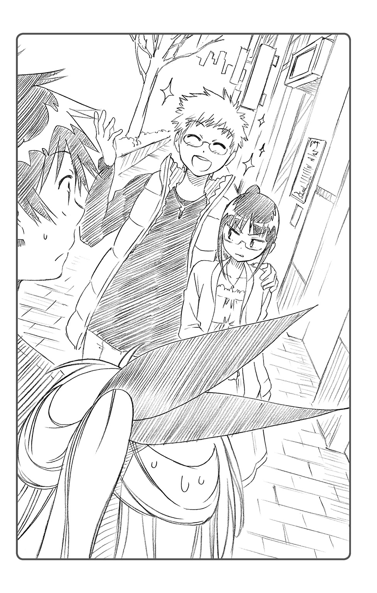
「......え？ デート？ ステディ？ は？」
楽と千棘が、ぽかんと口を半開きにして集を見つめていた。「いったいお前は何を言ってるんだ」とでも言いたげな表情だ。
「あはは......！ い、いくらなんでも冗談だよね。るりちゃん」
「だよなあ。集はともかく、宮本が集のこと好きだなんて素振り、これまでまったく気がつかなかったぞ......？」
「いやいやご両人。ラブストーリーなんていつでも突然始まるってことさ。......ね、るりちゃん？」
集が、意味ありげな視線をるりのほうに送ってきた。
まあ、そういう話になっているのだから、肯定しないわけにもいくまい。
「......そうね。私と舞子君は恋人同士。間違いじゃないわ」
舌打ちしたい気持ちを押し殺しつつ、るりはそう答えた。実に不本意なことである。
「え？ えええええええっ!?」
「マ、マジかよ!? んなアホな！」
千棘と楽が、目が飛び出るほど驚いている。あれは「この二人がつきあうなんて完全に想定外」だと思っている顔だ。
それはもちろん、るりにはある程度予想のついたリアクションだった。
だが、やはりこうして面と向かって友人たちに誤解されるのは――自分と舞子集が恋人同士だと思われるのには、やや抵抗がある。二人には本当のことを話しておいたほうがいいかもしれない。
「あのね、一条君、千棘ちゃん。これには実はわけがあって――」
しかし、
「......おっと、るりちゃん、その話は待った」
集に話を遮られてしまった。
そのまま集に腕を引かれ、二人から少し離れた路地裏へ。
「ダメだってるりちゃん。安易に他の人に話しちゃ。どこからバレるかわかんないんだからさ」
「それはそうだけど――」
「......特にあの二人に話すのはマズイでしょ。コンテスト前に失格になっちゃ、元も子もないよ？」
※
「るりちゃん、ちょっとオレと恋人同士になってみない？」
舞子集が教室でそんな提案を持ちかけてきたのは、三日前のことだ。
――また舞子君、バカなことを言い始めたわね。
最初はそんなふうに思って、丁重に顔面グーパンチで返事をしたのだが、よくよく話を聞いてみれば彼にも事情があるらしい。
「実は、冬休み前に有志で開かれる『校内ベストカップルコンテスト』の実行委員になっちゃってさぁ。各クラスから一カップルずつ代表に選ばなきゃならないんだけど、参加者がいないんだよね」
「ああ、そう」
「だから、オレ自らが参加しようと思ってるわけ。......で、一緒にどう？ るりちゃん」
「それなら、一条君と千棘ちゃんにでも頼めばいいじゃない」
千棘の華やかな容姿のせいもあって、あの二人は校内でもかなり有名なカップルなのだ。二人の関係の真偽はどうあれ、クラスからベストカップルを選出するなら、一条・桐崎ペアを除いて他にはないはずだ。るりは、そんなふうに提案したのだが、
「でも、そういうわけにもいかないんだよ」
と、集は首を振る。
「こないだの文化祭の『ロミオとジュリエット』、けっこう評判良かったじゃない？ あのときの主演がマジのカップルだったってことで、楽と桐崎さんの知名度も上昇しちゃったみたいでさ。そのせいで実行委員長から、あの二人を今コンテストに出すのは、ヒキョーだって言われちゃったんだよ。......一位獲得間違いなしだからね」
「まあ、それは確かにありそうな話ね」
あの文化祭での、クラス演劇の盛り上がりを思い出せば納得だった。
今現在、校内の世論を統計すれば、『もっとも熱いカップル』として、あの二人の名前が挙げられるであろうことは想像に難くない。
「楽と桐崎さんには、『名誉ベストカップル』として、コンテストの司会をやってもらう話になったわけよ。そんでこうして、クラスで誰か他に参加してくれそうな人を探してるんだけど」
「で、なぜ私？ また、メガネのよしみってやつ？」
「まあね。それに、るりちゃんくらい可愛ければ、オレのハニー役としてはピッタリだし？」
舞子集が、白い歯をキラリと見せて笑う。
その浮ついた態度が妙に癇に障ったので、るりは遠慮なくボディに重い一撃を叩きこむことにした。集は「ぐふぅ！」と声を上げ、その場に膝をつく。
「あ、相変わらず、世界を狙えそうな右ですこと......。るりちゃん、水泳よりボクシングの方が向いてるんじゃ......？」
「そうね。少なくともあなたの恋人役よりは、スパーリングの相手役のほうが向いてそうね」
「で、できれば恋人役がいいかな」
苦笑しつつ、集はズレたメガネを直した。
タフな男だ、この男は。
「......で、話を戻すけど、オレはなにも、タダでコンテストに参加してくれって頼むつもりはないんだ」
「なに？ なんかくれるの」
「そう。コンテスト参加者には、もれなく豪華参加賞が贈られるんだ。るりちゃんが出てくれたら、オレのぶんも進呈するから」
「ふうん、豪華参加賞ね。......ポケットティッシュなら間に合ってるわよ」
「いやいや、そんなんじゃなくて！ なんと、駅前のビルに今度新しくオープンした、フレンチレストランの無料券をペアで御進呈！ なんだってさ」
そのレストランの名前に、るりは聞き覚えがあった。
ビル最上階の高級レストランで、見下ろす街の夜景が絶景......なんだとか。
前に親友の小野寺小咲が読んでいたシティ情報誌に〝カップルにおすすめ！〟というアオリがついていたのを覚えている。オープン以来、予約が殺到している人気スポットらしい。
小咲自身、非常に興味深そうにその記事を読んでいたのだが、あのときの顔は「一条君とこういうところ行きたいなあ」と考えている顔だった。まあ結局、そのお店は高校生のお財布では結構、背伸びが必要であることがわかり、断念したようだが。
「あのレストランの無料券か......。いいかもしれないわね......」
これはいい機会だ。小咲と楽に、たまにはああいう大人びたレストランで食事でもさせれば、あのじれったい距離が縮まるかもしれない。
「おっ!? もしかしてるりちゃん、やる気になってくれた？」
「そうね......。とりあえず、そのコンテストであなたと恋人のフリをすればいいのね？」
舞子集の恋人役など不本意ではあったが、どうせお遊びのコンテストだろう。それに一回出るだけで高級レストランの無料券がもらえるのなら、安いものだ。たまには、小咲のためにひと肌脱いでやるのもいい。
「おお！ よかった！ サンキューるりちゃん！ ......実はさっき、誠士郎ちゃんやマリカちゃんにも頼んでみたんだけど、あえなく一蹴されちゃったところでさ～」
「......私が選ばれたのは消去法ってわけね。別にいいけど」
まあ、鶫誠士郎や橘万里花がそんな役を引き受けるはずもあるまい。
「誠士郎ちゃんはそもそも高級レストランなんか興味なさそうだったし、マリカちゃんくらいのお嬢様だと無料券に魅力は感じないらしいし......。参加賞で釣れたのは、結局るりちゃんだけだったよ。......みんな庶民感覚なくて困るよね、ホント」
「まるで私が、俗物だとでも言いたげね」
るりは舌打ちしつつ、とりあえず集の顎に一発、アッパーを決めておいた。
恋人役への初めてのスキンシップにしては、少々暴力的すぎたかもしれないが。
※
繁華街で楽と千棘にばったり出会ってから、数分後。
立ち話もなんだからということで駅前のファミレスに入ると、ボックス席に案内された。
店内にはツリーが飾られていたり、クリスマスフェアの告知ポスターが貼られていたりしている。ウィンターシーズンの到来を感じさせる装飾だった。
「なんかデート中だってのに、お邪魔して悪かったわね」
対面に座った集とるりを見て、千棘は妙に恐縮していた。
「ううん。そんなことはないわ。気にしないで」
「そうそう桐崎さん、オレたちの仲じゃん！ ここはダブルデートってことで！」
「つっても、お前らはともかく、俺と千棘は本当のデートってわけじゃねえんだけどな。あくまでフリだよ、フリ」
ははは、と楽が笑った。
――それを言うなら、こっちだって同じなのだけど。
そもそも、本日るりがわざわざ集と街中でデートの真似事をしていたのは、数日後の『ベストカップルコンテスト』用に、資料を捏造するためであった。ツーショット写真を撮ったり、ペアグッズを購入したりして、本物のカップルのフリをしようというわけだ。
だが、そんな偽デート中に、同じく偽デートをしている楽と千棘に出会うとは思わなかった。奇遇というか何というか。
るりは彼らに事情を説明しようとしたのだが、それを集に止められてしまった。『コンテストの司会をする予定の二人に、自分たちの関係がバレるのはマズイ』というのが彼の意見だった。
確かにそれも一理ある。ここで下手に二人に真実を話して、参加賞のレストラン無料券がもらえなくなってしまっては元も子もない。
るりは、やむなくその提案に従うことにしたのだった。
「でもまさか、るりちゃんに彼氏ができるとは思わなかったわね」
千棘はまだ興奮さめやらぬ様子で、ニヤニヤしながらるりを見ていた。
今のところ、こちらを不自然に思っている様子はない。どうやら、まだバレてはいないようだ。
「そうだぜ、集。宮本とつきあうってんなら、ひと言くらい相談してくれてもよかったのに。......で、いつから二人はそういう関係になったんだ？」
「そうそう！ 告白したのはどっちから？ 舞子君？ まさかるりちゃん？」
「ええと、そうね――」
さて、何と答えるべきか。なにせ、その手の〝設定〟は、まだろくに詰めていない部分なのだ。
るりが答えに窮していると、集が助け船を出してくれた。
「ああ、そのへんはまだナイショ。今度の『校内ベストカップルコンテスト』でお披露目予定ってことで。......司会の二人が先に聞いちゃったら、楽しさ半減しちゃうでしょ？」
なるほど、うまい逃げ方だな、とるりは思った。
一見軽そうに見えてこの舞子集という男、意外とこういう機転が働く男なのだ。
「ああ確かに......って、うちのクラスから出場するのはお前らだったのかよ」
「まあね～。オレとるりちゃんなら、ほら、超ラブラブだから♥」
そう言いつつ、集はさりげなくるりの肩を抱き寄せた。
「ちょっ......」
反射的に集に肘鉄を入れようとしたるりだったが、それより早く、相手がアイコンタクトを送ってきた。『話を合わせて』と。
ここで変に否定して、疑われるのもマズイかもしれない。
「......そ、そうよ。私たちラブラブなの。超ラブラブなの」
顔面が引きつりそうになるのを抑えつつ、るりはなんとかそのセリフを口に出した。もちろん、テーブルの下でこっそり、集の足をかかとで踏みつけるくらいの抵抗はしてみせたが。
「へえ......。驚いたわ。あのクールなるりちゃんが、ねえ......」
千棘が感嘆のため息をもらした。
「――でも逆に言えば、そんなるりちゃんですら虜にしちゃうほど、実は舞子君が魅力的ってことなのかしら？」
「おおっ、桐崎さんお目が高い！ そうそう、自分でも言うのもなんだけど、オレって結構、女の子から見ても理想的な彼氏だと思うんだよね～。ルックスもイケメンだし？」
そんな集の痴れ言に、幼稚園以来の親友が眉をひそめた。
「さすがにそれは言いすぎじゃねーか......？ 宮本、実際のところどうなんだ？」
「そうね――」
るりは、今日のデートコースを思い出しながら二人に語った。
喫茶店ではこちらが中座している間にさりげなくお勘定を払ってくれたし、映画館ではるりの好みの映画に嫌な顔ひとつせずつきあってくれた。しかも、チュロス三本とポップコーンＬサイズ、ホットドッグにジュースのおごりつきである。
デート自体は、満足のいくもの......と言っていいだろう。ニセモノとはいえ『彼女』のことを十分に気遣ってくれたのだ。この男――舞子集の彼氏レベルは客観的に見て非常に高いのかもしれない。
るりの話を聞いて感心したように、千棘は笑みを浮かべた。
「すごーい。実は舞子君って彼女には優しいのね。......あーあ、うちのもやしも、そういう気が利いたデートのひとつでもしてくれないもんかしら」
「うるせーな。オレたちはホントの恋人じゃないんだから、別にいいだろ」
ふん、と楽が鼻を鳴らしつつ、コーヒーをすすった。
「......でも、意外だったな。宮本がこんなに集を褒める日が来るなんて」
「そうね。自分でもすごく意外」
ふう、とため息をつく。
まあ、この男のコミュニケーションスキルが高いのは事実だ。
と、そのとき、当の舞子集が得意げな表情でこちらに視線を送っていることに気がついた。
「（あれ？ もしかしてるりちゃん、オレにホントに惚れちゃった？）」
「（あくまで一般論よ。別になんとも思っていないわ）」
対面の二人に聞かれないよう、小声で返す。
もちろん集に対していっさい恋愛感情など持ちあわせていない。ただ、第三者的評価として、いい彼氏になりうると褒めただけだ。......なのにこいつは。
「（ま、オレも罪な男だからねー。もしるりちゃんが本気になっちゃったんなら、いつでもリアルラブに移行してもいいんだよ？）」
そんな世迷い言を言うので、足の甲を徹底的に踏みつけてやった。ぐりぐりと。
「......おおう!?」
突如叫んだ集を見て、楽が不思議がった。
「なにやってんだお前ら」
「なんか知らないけど、こそこそと仲良さそうよね。案外、コンテストもいい線行ったりして」
吞気に笑う楽と千棘には、こちらの関係はバレていないようだ。彼らが単純な人たちでよかった。いい意味で。
――今は仕方ない。コンテストのあとで誤解を解くしかないわね。
そう思いつつ、るりは、隣のしまらない笑みを浮かべたメガネ男をにらみつけた。
※
「......エントリーナンバー八番、一年Ｂ組の小林・山中カップルでしたー！ みなさん盛大な拍手をどーぞ！」
千棘の元気な声が、マイクを通じて体育館いっぱいに響き渡った。
『校内ベストカップルコンテスト』当日。体育館は異様な熱気に包まれていた。客席には、多くの生徒が観客として詰めかけている。
コンテストの形式は、エントリーされたカップルが、トークショー形式で司会者の質問に赤裸々に答えていく、というものだった。その後、投票によってベストカップルを決めるらしい。
有志で行うコンテストだと聞いていたから、もっとアングラなものかと思っていたが、ここまで大規模だとは想定外だった。わざわざ休日に体育館を借り切ってやるイベントにしては、出席率が半端ない。学校にこれだけの数の私服姿の生徒が集まる光景は、ちょっと珍しいかもしれない。
「みんな、他人の恋愛が大好物ってわけね」
体育館の舞台袖、出場者の控え席で、るりは冷静につぶやいた。
他人の好いた惚れたを面白半分にネタにして楽しむだなんて、理解しがたい。
「――次は、エントリーナンバー九番、一年Ｃ組カップル！ わがクラスが誇るメガネカップルよ！ カップルさんいらっしゃーい！」
千棘の声が、自分と舞子集の順番を告げた。
「よし、オレらの番だね！ いこっか、るりちゃん。ラブラブっぷりを見せつけちゃうぞー！」
「......はいはい。お手柔らかにね」
もちろん、仲の良いカップルを演じるつもりなどない。るりにとって、このコンテストに出場した時点で参加賞ゲットという目的は果たしたのだ。
――あとはバレない程度に、適当に質問に答えてお茶を濁すのが最善ね。
妙に浮かれた様子の舞子集とは対照的に、るりのコンテストに対する姿勢は非常に冷めたものだった。
集に手を引かれ、舞台中央の大きなソファーへ。その集のしぐさが、まるでパーティーで女性をエスコートするような紳士的対応だったので、るりは少し面食らった。
――舞子君、こういうのさりげなく上手いわね。慣れてるのかしら。
舞台中央では花束の置かれたテーブルを囲むように、数人掛けの巨大ソファーが設置されていた。
「......まるで新婚さんなんとかって番組みたいね」
「いやあ、るりちゃんと新婚さんなら大歓迎だね～」
集の戯言を無視しつつ、ソファーに座る。
そんな二人を、観客席が万雷の拍手で迎えた。
正直、自分はあまり人前に出るのは好きではない。これだけ多くの視線にさらされながら、しかも舞子集の恋人役をやるだなんて羞恥の極みだが、まあしかたない。
千棘がにこり、と微笑んでこちらにマイクを手渡した。
「じゃあ二人とも、自己紹介をよろしく！」
「あ、どーも！ 一年Ｃ組舞子集です！ 好きなタイプは、年下の女の子と、同い年の女の子と、年上の女の子です！」
「......同じく宮本るりです。嫌いなタイプは軽薄なメガネ野郎です」
二人が自己紹介すると、客席の一部――主にうちのクラスの連中が集まっているあたり――から「うそ!? あの二人デキてんの!?」「これは意外な組み合わせ」「ありえねえ!?」「あの宮本さんが、舞子と!?」「舞子死すべし」など、悲喜こもごもの声が上がった。
楽も、そんな客席の意見にうんうん、と同意している。
「オレも最初に聞いたときはビックリしたぜ......。まさかあの集と宮本がつきあってる、だなんてな。オレらにも内緒でこの二人、どんなつきあい方をしているのやら......」
「じゃあ今日は、そのへんいろいろ聞かせてもらおうかな。......で、単刀直入に聞くけど、二人はどこまで行ったの？ もうキスとかした？」
司会の千棘の言葉に、客席から期待まじりのヤジが飛びかう。
「おおっ!? すげえな千棘。いきなりストレートな攻めじゃねえか」
「ねえねえ？ どうなの？」
会場中が興味津々な様子で、るりを見つめている気がした。
そんなに期待されても困る。だってしょせん、自分たちは偽カップルなのだ。手をつなぐのだってイヤイヤなのに、なんでキスなんか......。
「キスなんて全然、興味ないわ」
そもそも、恋愛などしたことがない以上、キスがいいものなのか悪いものなのかさえもわからない。だからるりは、ありのまま、率直に答えた。
「そっか。るりちゃんたちはまだキスしてないってことか。そ、そうだよね。まだ高一だし......」
少し残念そうに、そして同時に少しほっとしたように、千棘が言った。
その刹那、
「......ふっふっふ」
隣に座るメガネ男が突如、笑みを浮かべた。
「誤解してもらっちゃ困るね。マイハニーは『キスなんて興味がない』と言っただけで、キスしたことがないと言ったわけじゃないよ。......そう、オレたちはキスなんて子供だましのステージはとっくに卒業したってことさ」
「えっ？」
集の意味深な発言に、会場中からざわめきが聞こえてきた。
「ってことは――？」
「ま、まさか集、お前、宮本と行き着くところまで......？」
楽と千棘も、あわてた様子で顔を見合わせる。
――舞子君、また馬鹿なことを言い始めたわね......。
るりは眉間にしわを寄せ、集の顔をにらみつける、だが、当の本人はどこ吹く風といった様子だった。
「まあ、オレたちくらいになると、ガキのおままごとみたいな恋愛にはもう満足できないからね。アダルティでディープでインモラルなつきあい方じゃないと」
「あ、アダルティでディープでインモラル......？」
顔を赤らめる司会の二人を見て、集が「ふっ」と笑みを浮かべた。
「......すまん、楽よ。先に大人の階段をのぼっちまったぜ」
「うおっ!? ま、マジかよ」
集の発言に、楽はあわててマイクを取り落しそうになっていた。
もちろん集の発言は、るりとの事前の打ち合わせにはなかったものだ。
まあ、ある程度彼がこういうおふざけをするだろうというのは、予想の範囲内だったが。
――それにしても、言いたい放題言ってくれるじゃない。
普段なら即座に回し蹴りを入れているところだったが、今日に限ってはそれもできない。バレたら即失格、参加賞がもらえなくなってしまうだろう。心底バカバカしいとは思いつつも、るりは彼の妄言につきあってやることにした。
「ほ、ほんとなの？ るりちゃん」
「そうね。......まあ、そういう事実もなきにしもあらずと言えないこともないような気がするわね」
半ばなげやりに、そう答えた。
るりの答えに、客席も大いに盛り上がる。
「うっそ!? マジで！ あの二人そこまで!?」「最近の一年生は進んでるわ」「あのちびっこ、なかなかどうして......」「人は見かけによらないってマジだな」
全校生徒に奇異な目で見られてしまった気がするが、ここはまだ我慢だ。コンテスト終了後、舞子集を極刑に処すことでこの憂さを晴らそう。
「こ、この質問はアブなすぎたわね！ ......えーと！ 次の話題、次の話題！」
千棘が顔を赤らめつつカンペをめくる。
「......次は、『二人が出会ったきっかけは？』って質問だな。......あ、こりゃオレも知ってる」
「出会ったきっかけって――」
ただ、中学が同じだっただけ。ドラマ性のかけらもない陳腐な出会いだ。当然、同じ中学出身の楽も知っていることである。
だが、そこでまたしても、集が無用なアドリブを入れてきたのであった。
「――あれはある冬の日のことだった。数年前の交通事故ですべての記憶を失い、自分の正体の手がかりも見つからないまま悶々と暮らしていたオレは、この街で一人の少女に出会ったんだ」
集は突然、まるで何か懐かしむように遠い目をして語り出した。
「彼女はオレを懐旧の瞳で見つめてこう言った。『あなたの名前は舞子集。そして私の恋人だった人――』と」
「お、おい、集？ いったい何の話だそりゃ」
司会の楽を一顧だにせず、集は話を続ける。
「......どうやらオレが記憶喪失になる前には、その少女と恋仲だったらしい。だが、不幸にも、最初のデートに向かう途中、オレは車に撥ね飛ばされてしまって――」
「......は？」
「そう、それがオレと宮本るりの、数年越しの出会いだったんだ」
事故で記憶喪失？ 数年越しの出会い？ 当然身に覚えなどない。
この舞子集はまた、何を言い出したのだろう。
怪訝な顔を浮かべるこちらを差し置いて、集はマイク片手に胡散臭い出会いのストーリーを、滔々と語り出した。
「一度は引き裂かれた二人を、運命が再びめぐり合わせる......」
「おーい、集？ おーい......」
司会進行すらまるで無視する、舞子集の捏造ラブストーリー。
彼の語るところを要約すれば、「舞子集」という記憶喪失の眼鏡イケメンが「宮本るり」なるかつての恋人と出会い、失った記憶を取り戻しつつ再び恋に落ちていく、というのが大筋らしい。
ここまででもうアレな感じだが、恋人が死んだと思いこんでいた「るり」には既に婚約者がいたり、そもそも「集」と「るり」は兄妹なのではないかという疑惑が浮上したり、「集」が事故の後遺症で命にかかわる事態に陥ったりと、波乱万丈の展開に突入していった。
最終的に「集」は、絶望的な成功率の手術を受けるかどうかというベタな選択を強いられるのだが、結局愛の力（笑）の奇跡が手術を成功させ、二人は幸せになった......ようだ。
韓流ドラマもびっくりの、どこかで聞いたような超コテコテなお涙頂戴ストーリーである。
「......彼女と再会した運命に、そしてともに歩むことのできる奇跡に感謝を！」
集がここまで語り終えるのに十分以上。るりは、その間どうすることもできず、ただ茫然と口を開けて聞いているしかなかった。ここまでくると、呆れを通り越してもはや感心さえする。よくもこんな噓八百を並べ立てられるものだ。
しかし、るりとは対照的に、客席のほうの反応は意外にも上々で、
「なんてロマンチックな恋愛なんだ！」「あの子にそんな壮絶な過去があったなんて......」「幸せになってほしい！」「全校が泣いた！」「映画化決定！」
大喝采が贈られてしまったのである。
「う、うえええええ！ るりちゃあああん！ いい話だったよおぉぉぉ！」
なぜか司会の千棘まで号泣していた。
「......世の中、何がウケるかわからないものね」
るりはため息をついた。
「......えーと、結局話をまとめると、『二人の出会いは同じ中学で』ってことでいいよな。宮本」
問いかけは、集の妄言はスルーの方向だった。一条楽、なかなかの司会進行スキルである。
「ええ。それでいいわ」
隣の集はなぜかやり遂げた顔をしてニヤニヤ笑っていたが、もはやツッコむ気にもなれなかった。
「――ぐすん。じゃあ次の質問だけど」
ハンカチで涙をふきつつ、千棘がこちらにマイクを向ける。
「お互い、相手のどこが好き、とかある？ 相手の魅力的な要素を挙げてみてよ」
魅力的な要素......これは難問である。だって自分は舞子集に関して、男性的魅力を一ミリも感じたことがないのだから。
「じゃあオレからいくね。るりちゃんの魅力的なポイントは――」
るりが悩んでいる間に、集が口火を切っていた。
「何よりもまず、その体型だと思うんだ」
「――は、スタイル？」
その答えに真っ先に疑問符を浮かべたのは、るり自身だった。
そもそも自分は身長も小学生並み、同級生の少女たちと比べても凹凸に乏しい体型なのだ。別にそのことでコンプレックスを持っているわけではないが、一般的な男性が魅力を感じるようなものでないことくらいは自覚している。
「......あなた、バカにしているの？」
マイクを通さず、小声で隣のメガネ男をにらみつけた。
しかし彼は、とんでもない、と頭を振った。
「オレだって、もともとセクシーな女性は大好きだし、同級生の女子の胸の発育が気になるお年頃ではあるよ。......でもある日、オレの価値観が根底から揺さぶられる光景に出会ったんだ。......それはるりちゃん、キミが水泳部で練習をしている姿だった」
「水泳部......？」
「紺色のスクール水着を身にまとって水と戯れるその姿に、オレは戦慄したね。......ひときわ小さな体軀に、しなやかで細い手足。そして慎ましやかな胸。それらは、これからの成長の萌芽を感じさせる可能性に満ち溢れていたよ。完成されたグラマー女性にはない新鮮さがあったね」
ぺらぺらと語る舞子集に、司会の二人もあっけにとられているようだった。
「無の中に有を見出す――そんな哲学的逆説にも似た感動を覚えたさ。その瞬間オレは気づいたんだ。......『ああ、幼児体型もいいものだ』！」
天を仰ぎつつ、集が叫んだ。
客席からは、そんな集に同意するかのように、「うむ」「たしかに」「悪くない」などと一部男子生徒の声が上がっている。
るりは眉間にしわを寄せつつ、隣の変態彼氏（偽）をにらみつけた。
「ねえ、舞子君」
「ん？ 何かなマイハニー」
「私を幼児体型だと馬鹿にしたことは置いておくとして――まあ絶対に許さないけど――そもそも、あなたはなぜ女子水泳部の練習に居合わせたのかしら？」
「たまたまデジカメを持って散歩してたら、偶然プールにたどり着いちゃって。そしたら今度は、期せずして女子水泳部の練習が始まっちゃってさぁ。......まあ、よくあることだよね」
「デジカメを持って散歩、ね。......そのカメラ、いかがわしいことに使ってないわよね？」
「ま、水着の練習風景に見とれるうちに、つい二、三十回シャッターを切っちゃったような記憶がおぼろげにあるけど......許容範囲内だよね」
「つまり盗撮を図った、と？」
「あはは、やだなぁ、るりちゃん。人聞きの悪い......。芸術だよ芸術。自然の生み出した水着少女という奇跡を、対象に気取られることなくあくまで自然な状態のままファインダーに収めるという――」
「つまりは、盗撮よね？」
「......はい」
るりは無表情のまま、思いきり集の腿をつねりあげた。
「......あだだだっ!?」
目に涙を溜めながらも、舞子集は笑みを崩さない。見上げた根性である。
「焼き増しを売ってくれ！」「五百円出す！」「千円でも惜しくない！」
恥知らずなメガネの蛮勇をたたえるかのように、観客の一部からは声援があがっていた。この学校、いろいろ大丈夫なのだろうか。
「と......まあ冗談はこのくらいにしておいて」
少しだけ真面目な表情で、集が再びマイクを握った。
「――実際るりちゃんのいいところは、すごく友達を大事にするところだと思うんだ」
「友達を大事に？」
司会の楽が、興味深そうに集に話の先を促した。
「いつもるりちゃんは親友の恋のために一生懸命になってさ。相談に乗ってあげたり、彼女が意中の相手とうまくいくようにセッティングしてあげたりして......」
「へえ......るりちゃんって優しいんだね」
千棘が、るりに微笑みかけた。なんだかこっ恥ずかしいものを感じてしまう。
「ん？ 宮本の親友って小野寺......？ いやでも、小野寺は好きな人いないって言ってたし、別の誰かの話だよな......？ そ、そうであってくれ......」
楽は一人悶々としていたが、それに構わず集は話を続ける。
「あげくの果てにはるりちゃん、親友のために好きでもない相手と恋人の真似事までしちゃうんだぜ？ ここまで誰かのために親身になってくれる子ってなかなかいないと思うんだよね」
「ちょっと、舞子くん......！」
それはこの場ではギリギリの発言だった。自分たちの関係が噓だとバレたらどうするつもりなのか。
だが幸運なことに、司会も会場も気がついてはいないようだった。
「ふーん、宮本さんって友達思いなんだ」「一見クールに見えて、友情にはアツいんだね」「で、宮本の親友って誰？」「今度私も相談してみようかな」
客席から、るりに好意的な視線が注がれているのを感じる。
まさかあの舞子集が、こんなにストレートに自分を褒めるとは思わなかった。生まれてこの方ここまで大勢に注目されたことはないので、少し面映ゆい。
――舞子君も年中バカばっか言ってるわけじゃないのね。
「彼の魅力的なところは――」
こそばゆさを隠すように、るりはマイクを手にとった。
「そういう歯の浮くような褒め言葉を、さりげなく言えちゃうところかしらね。私にはできないわ」
そんなるりのそっけない答えを聞いて、千棘が意味深に口元を歪めた。
「おやおや、るりちゃん、照れ隠しかな？」
「やっぱ仲良いんだな、お前ら」
司会に生暖かい視線を向けられてしまい、るりはため息をつく。
――まったく、あとで誤解を解くのが面倒そうね。
「さて、次は......おっと、これで最後みたいね。みなさんおまちかね！ 恒例のキスタ～イム！」
千棘が高らかに宣言すると、「きゃー！」という黄色い声が上がった。これまでとはうってかわって、会場が明らかに熱気に包まれたのを感じる。体育館中が沸き立っているかのようだ。
「......キス......タイム？」
「期す」「帰す」「鱚」......るりの頭の中にさまざまな単語が浮かんだが、この場合、会場の空気的に、意味するものは一つしかない。
「――舞子君、キスタイムって、何？ どういうこと？」
「ああ、コンテストに出たカップルは、インタビューの締めに観客席の前で熱いベーゼを交わすことになってるんだよ。毎回、これが楽しみで見に来る奴も多くってさ～」
客席からは、「キース！ キース！」の連呼。手拍子とともに、自分たちがキスを要求されているのだ。
――なにこの状況。
「聞いてないわよ、こんなの」
「あれ？ おかしいな？ 言ってなかったっけ？」
集は笑みを浮かべながら、いけしゃあしゃあと答えた。
そのへらへら顔を見るに、あえて伏せていたに違いない。キスタイムの存在を明らかにしたら、こちらが話を断ると思っていたのだろう。
――ハメられたわ......。
集に文句を言ってやろうと思ったのだが、時すでに遅し。司会の二人によって、舞台の前方へと誘導されてしまった。
「じゃ、じゃあ二人とも、用意はいいか？」
「な、なんか、友達のこういうのを見るのは照れるわね」
司会の二人は照れつつも、心なしか妙に期待しているようだ。
「......まさに四面楚歌って感じね」
るりがため息まじりなのに対し、集はお気楽そうだ。
「まー、こうなっちゃったらしかたないって。フリでもいいから、するしかないじゃん？」
確かに、全校生徒にキスをせがまれているというこの状況だ。拒むことは難しい。
それにもし、いま偽カップルだということがバレてしまったら、今日ここまでの忍耐はすべて水の泡に帰してしまう。
「......むう。それはわかっているのだけれど」
だがやはり、衆人環視の状況でキスをするというのは抵抗がある。こちとら初心者だし。
――どうしたものかしら......。
「（ほっぺとか、おでこで誤魔化すからさ）」
集が小声でささやきつつ、戸惑うるりの手を引っ張る。
「あ、ちょっ......！」
舞台のド真ん中、一番前へと連れてこられてしまった。
最前列の客席とは、二メートルも離れていない。近視の自分にだって、生徒の顔がはっきり見える距離だ。キスのフリなんかで誤魔化せるようなものじゃないのは明白だった。
今や客席は固唾をのんで、るりと集の一挙手一投足に注目していた。こんな中で接吻を交わすなど、よほどのバカップルでもなければできやしない。
「ア、アダルティでディープでインモラルな二人には、キスなんて子供だましかもしれないけど......」
千棘はそう言って、「きゃー」と両手で顔を隠しつつ、指の隙間からこちらをちらちら凝視していた。
やっかいなことに、彼女はさっきの集の妄言を信じこんでいるらしい。自分たちを変態カップルだと思っているのかもしれない。
こちとら、プラトニックな関係――すら築いていない間柄なのに。
などと思いつつ戸惑っているうちに、
「じゃあ、行くよ、るりちゃん......」
突然、眼前の集に肩をつかまれてしまった。
彼は悩ましげな表情を浮かべ、こちらに熱い視線を送ってくる。ぶっちゃけキモい。
「んー......」
目を閉じて唇を突き出しながら、集が顔を近づけてきた。
二十センチ、十センチ、五センチ......。
すでに、彼の息や鼓動を間近に感じられるような距離だ。まさに折り返し不可能地点。だがこの段に至ってもなお、るりの頭の中には葛藤があった。
――ファーストキスの一つや二つどうでもいいけど、相手が舞子君だっていうのはすごく抵抗あるわね......。
たとえおでこやほっぺであっても、キスはキス。自分の形而上の履歴書には、『ファーストキスの相手：舞子集』と、このさき永劫に刻まれることになってしまうのだ。
「......それはイヤすぎだわ」
いくら小咲のためとはいえ、こんなふうに半ばハメられた形で純潔を散らすというのは間違っている気がする。たとえ自分がここで犠牲になってレストラン無料券を手に入れても、真相を知った小咲がそれを喜んで受け取るとは思えない――。
「......そうね。これはやはり、私のやり方ではなかったわ」
るりのそんなつぶやきに、集がぴたりと動きを止める。
「え？ どうしたの。るりちゃん」
「どうもこうもないわ。もうカップルごっこはおしまいということよ」
「そんな、せっかくもう少しで参加賞ゲットだってのに!? いったいどうして――」
彼の疑問に、るりは「ふっ」と薄い笑みを浮かべた。
「......舞子君、よくも騙してくれたわね」
そしてそのまま上半身を後ろへと半回転、体をひねり身を屈め、獲物を狙う猛禽類のような鋭い眼光で集の顔面をにらみつけた。
「へ？」
ただぽかん、と口を開けていた集には、その後自分の身に何が起きたのかすらわからなかっただろう。それがコンテスト史に残る伝説の大技だということに、会場中で彼だけが気づかなかったのである。
「てぇぇぇいっ！」
るりの雄叫びとともに繰り出される、渾身の回転ハイキック。
身体を一回転させた遠心力に、今日までの怒りと恨みとフラストレーションを加えに加えて凝縮させた重い一撃が、空を裂くような鋭い速度で集の顔面を襲った。
「んごおおおおおおおおおおっ!?」
その蹴撃は、時速にして数百キロ――いや、音速の域にも達していたかもしれない。
徹甲弾のごとき一撃をまともに受けた集は、顔に上履きの足跡を残しながら、なすすべもなくきりもみ状に舞台上を吹っ飛んでいく。
そして五メートルほど空を舞い、奥の壁に鈍い音を立ててぶち当たり、そのまま落下。
どさり、と。
「――当然の報いね」
泡を吹いて倒れた集を、冷ややかな視線で見下ろす、るり。
一瞬、客席の観客たちは何が起きたのかわからず、お互いに顔を見合わせていた。
だが、自分たちの見たものがそんじょそこらでは見られない芸当だったことに気づくと、誰からともなくスタンディングオベーションをはじめていた。そしてそれは、すぐに拍手の洪水に変わって会場中を包んだ。
「......おおお!? なに今の大技!?」
「いつにもまして、すげえやられようだったな、集......」
千棘も楽も、それから舞台下の観客たちも、るりの奇跡の大技に心を動かされていたのである。もはや誰が、これがベストカップルコンテストの一幕だと覚えているだろうか。
「ああ、まあ気にしないで――」
マイクを片手に、るりが思い出したかのようにコメントする。
「えーと、これこそ照れ隠しみたいなものだから。......てへ」
るりは無表情のまま、ぺろり、と舌を出してみせた。
――ああ、すっきりした。
まるで憑き物が落ちたかのように晴れ晴れとした気分だった。やはり、カップルのフリなどストレスが溜まってしょうがない。
と、そんなるりの耳に聞こえてきたのは、蚊の鳴くような彼氏（偽）の声だった。
「......あ、足技もナイスだね......るりちゃん......」
なんと、あれだけの大技を受けて倒れながらも、集は親指を立ててこちらに微笑んでみせたのである。本当にしぶとい。
割と余裕そうな集の姿を見て、るりはふと思った。
――まさか、私にキスを回避させるために、自ら甘んじて蹴りを受けて、こういう展開に落としこんだ、とか......？
それはいくらなんでも気が利きすぎだろうか。
だが、舞子集の緩みきった笑顔を見下ろしていると、るりにはあながちその考えを否定することもできなかったのであった。
※
コンテストが終了した、その日の放課後――。
「......ご、ごめんなさい......！」
「ごめんで済んだら警察はいらないって、誰かに習わなかったのかしら」
「も、申し訳ありません。調子に乗りすぎました......！」
夕暮れ染まる体育館裏では、とある男子生徒の悲鳴が響き渡っていた。不良生徒数人による一方的なリンチ......というわけではない。
仁王立ちでメンチを切っているのは、小柄なポニーテールの女子生徒。
一方、彼女の足元に土下座させられているのは、ボロ雑巾のようにぼっこぼこにされたメガネの男子生徒だ。
「だいたいさっきのアレは何。質問に対する答え、全然打ち合わせどおりじゃなかったわよね。こっちはどれだけ恥ずかしい思いをさせられたと思ってるの......」
「まあ、人生遊び心が必要だからね。ときどきは、ああいうアドリブもいいかなーって」
「ときどきどころか、全部アドリブだったでしょう!?」
げし、っと手刀を入れる。
だが土下座ボロ雑巾――舞子集は、すぐにけろりとした表情に戻り、顔を上げこう告げた。
「で、でもさ、るりちゃん。なんだかんだで目的の参加賞はゲットできたわけだし......。それどころか、オレらグランプリまで獲っちゃったじゃん。結果オーライだよ、結果オーライ」
「だから、それが問題なのよ」
にへら、と笑う舞子集の額に、るりがデコピンを加えた。
そう。なんと一年Ｃ組のメガネカップル、舞子・宮本ペアは、驚くべきことに校内ベストカップルの称号を手にしてしまったのである。
「やっぱアレかもねー。オレの捏造ストーリーで観客わかせまくったからかもねー」
「最後にぶっとばされたあなたへの、同情票が多かっただけかもしれないわよ」
あれだけふざけまくった回答を繰り返した自分たちが、どうして生徒たちの最多票を取ることができたのか、その理由はよくわからない。
「まあ、よくも悪くも印象に残ったってことじゃない？」
あっけらかんと言う集に対し、るりは深いため息をついた。
「あなたね......。おかげで私たち、今期のベストカップルとして未来永劫、この学校に語り継がれることになってしまったのよ？ ......おまけに恥ずかしい写真まで撮られる羽目になったし......。末代までの恥よ、これは」
集と二人でトロフィーを抱えながら、抱き合っている写真――優勝時に撮影された写真が、体育館前の掲示板にでかでかと貼られることになったのである。そんな写真が貼られてしまえば、学校中から「あのメガネ二人はバカップル」という誹りを受けることになるだろう。
「だいいち、小咲にすら誤解されちゃうし......」
そう、コンテスト後、彼女にも「るりちゃん、舞子君と末永くお幸せにね」などと言われてしまったほどだ。しかも、何度事情を説明して否定しようとしても「るりちゃんは恥ずかしがり屋だなあ」と聞き入れてくれる気配すらない。
おまけに、苦労して手に入れた参加賞のレストラン無料券まで、「そんなのもらえないよ！ 舞子君と使うべきだよ！」と言われてしまう始末......。これでは本末転倒もいいところだ。
「――そもそも舞子君だって前に『好きな人がいる』って言っていたわよね。その人に誤解されてもいいの？」
「それはそれ、これはこれ。......流した浮名が多いほど、男の価値は上がるってもんさ。るりちゃんとベストカップルなら、むしろ光栄だけどね。オレは」
メガネ男は、ふふん、と軽薄な笑みを浮かべた。
だめだ。この男とは、価値観がまるで合いそうにもない。
「だいたい、こんなイベント――『ベストカップル』だなんて、体の良い晒し者じゃない。恥ずかしい話聞き出されたり、皆の前でキスさせられそうになったり......笑いものにされるだけ。弄られたこっちは、いい迷惑よ」
さすがに最後のキスこそ回避したが、散々恥ずかしい思いをさせられたのは事実だ。
これじゃあ、ただの見世物扱いじゃないか――。るりは憤りを覚えていた。
「――正直、悪趣味な企画。実行委員のセンスを疑うわね」
「そうかな？ オレは別にこのイベントの趣旨に関してはそんな悪いものじゃないと思うけどね」
眼鏡を直しつつ、集がにこやかに笑った。
「確かに品がない部分もあったけどさ、基本的には、みんな『カップルを応援したい』って気持ちの表れだと思うんだよね。......るりちゃんだって、楽と小野寺がうまくいくようにいつも応援してるじゃない。いろいろ世話焼いたりして、さ。それと同じだよ」
「......確かに、そうだけど」
今回参加を決めたのだって、小咲に楽とのデートを楽しんでもらうためだ。誰かの恋を応援したいって気持ち自体は、理解できないものじゃない。
「......実は、オレが今回るりちゃんを誘ってコンテストに出たのも、半分くらいは似たような目的があってさ」
「あなたも、一条君と小咲のために？」
いや、と集は首を振る。
「オレは、るりちゃんを応援したかったんだよね」
「私......？」
どういうことだろう。
「――人をさんざコンテストで振り回しておいて、どこが応援なの？」
半目でにらみつけてやったが、集はそれでも笑顔を崩さなかった。
「たまにはるりちゃんも、スポットライトを浴びてもいいんじゃないかな、って思ったんだよ」
「スポットライト？ ......どういう意味？」
「さっきも言ったけど、るりちゃんって、いつも小野寺とか――他人にすっごくお節介焼いてあげてるじゃん。誰かのためにサポートに徹してる、っていうか......。でも、自分が前に出て何かをすることってあんまりないでしょ」
「そうね。でもそれの何がいけないの？」
親友のために尽力するのは嫌いじゃないし、むしろそもそも目立つのは嫌いなのだ。そんな自分の価値観を、他人にとやかく言われたくはない――そういう意図をこめて、るりは刺々しく答えたつもりだったのだが、
「別にいけなくないよ？ むしろすげーいい奴だなって思う」
集は面と向かって照れもせず、そんな褒め言葉をさらりと口にした。
彼のこういうところは、ある意味賞賛できるかもしれない。
「――ただ、それがもったいないなー、って思って。こんなにいい奴なのに、みんなそれを知らないなんてさ。だからオレは、るりちゃんの良さをみんなに知ってほしかったんだよね。『宮本るりはこんなに素敵な子だぞ』って」
「素敵って......」
そんなふうにストレートに言われると、いくら舞子集が相手でも少し恥ずかしい。
今が夕方なのが不幸中の幸いだった。染まった頰に気づかれなくて済むのだから。
「それでわざわざ私をあんなに恥ずかしい場所に引きずりだしたわけ......？」
「まあね。でもこれでるりちゃんが、桐崎さんとかマリカちゃんとか、そういうクラスのキレイどころにも負けないくらい魅力的な子なんだって、全校生徒にわかってもらえたと思うよ？ なんたって、今や『学校一のベスト彼女』だからね、るりちゃんは」
あはは、と笑う集の額に、再びデコピンを一発。
「そんな称号ゴメンだって言ってるのよ。まだ『学校一のベストツッコミ』のほうがありがたいわ」
とはいえ、集の意図に悪意がないことだけはわかった。
結果だけ見ればはなはだ不本意だが、まさか彼が自分のためを思って何かをしてくれるだなんて。正直予想外だった。
「――でも、なんで私のためにそんなことをしようとしてくれたの？」
「そんなの、当然じゃん。......だって友達でしょ、オレら」
何の含みもなく、さわやかに集は言った。
「ああ――」
そこでようやく気がついた。
バカでスケベでお調子者で、でも友達思いで。他人のことにはすごく気が回って。
舞子集が、そういう男なんだということに。
「私のことをさっきお節介って言ったけど――あなたも相当なものよ？」
つい、ふっと口元を緩めてしまう。
「おっ！ るりちゃんの貴重なスマイルシーン！ いいねえ、普段のクールフェイスもいいけど、たまには笑顔もいいよね！」
「うるさいわね」
顔面に一撃。
だが、メガネを叩き割るのだけは勘弁してやることにした。メガネのよしみで。
「......まあとにかく、今回の一件であなたのような破廉恥なバカとは、絶対に恋人になれないってことはよくわかったわ」
ぴしゃりと言い捨てると、彼は露骨に残念そうな顔をした。
「あ、あはは......。相変わらずキツイな......るりちゃん」
「......百歩譲って、友達くらいには認めてあげてもいいけどね」
そう言うと、集はすぐに目を輝かせはじめた。
「なるほど、友達ね。......でもまあ、友情は恋心のはじまりとも言うし、るりちゃんがオレに対して本気になる日もそう遠くはないかも――？」
「千年経ってもまずありえないわね」
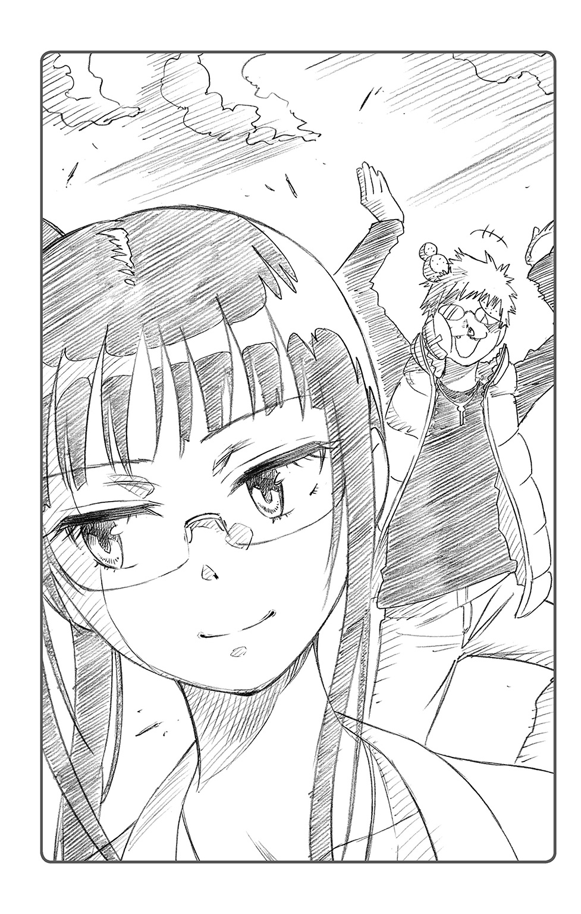
案の定、少し褒めたらこれだ。リカバリが早いというかなんというか。やはりこの男と自分とは、基本的に相容れることはないだろう。
るりは、やれやれ、とため息をついた。
「とにかく舞子君。あなたと私の偽の恋人関係は、本日をもって終了よ。コンテストで広まった誤解を解くため、明日朝一で全校放送で謝罪すること。『自分と宮本さんは、なんでもありません』ってね。......わかった？」
「えー......。せっかくベストカップルなのに......？ もったいない......」
「私たちはただの友達でしょう？ ......わ・か・っ・た？」
ごねる集の胸ぐらをつかみあげ、ぎりぎりと締め上げる。
「うぐ......は、はいっ！ ......わかりました！ オレとるりちゃんはただの友達です！」
「グランプリ用のトロフィーと、掲示板の写真も回収して、本部に返しておくこと。それから、司会の二人にも事情を説明して謝っておくように。いいわね」
「あ......はい」
「そしてもちろん私への謝罪は最優先よ。......今から『おのでら』で、桜餅十個とみたらし団子二十本。羊羹二本に三色最中のセットを買ってくること。あとは熱ーいお茶も忘れないで」
「そ、それ全部食べるの、るりちゃん......？」
ひきつったような笑みを浮かべる集を、思いきりにらみつけてやる。
「食べるの。いいからさっさと買ってきなさい。私たちは友達でしょ」
「友達つーかこれ、ただのパシリじゃ......!?」
「ほら、ダッシュ」
「は、はい！」
怯えた顔で、舞子集は逃げるように駆けだした。夕日に向かって走る彼の背を見て、るりは思う。
――ほんと、お節介焼きでウザイやつ。
「ええっ!? お嬢、舞踏会に行くのですか!? あの男と!?」
鶫誠士郎の大声が、ミルクホール中に響き渡った。
その声に驚いた他の紳士淑女たちが、手にしたカップを口にすることも忘れ、何事かとこちらを振り返っている。
「つ、つぐみ。声が大きいわよ」
主人である千棘にたしなめられてしまった。
だが、鶫は、彼女の言葉においそれと従うわけにはいかなかった。むしろ従者だからこそ、主人の愚行を諫めなければならぬと考えていたのである。
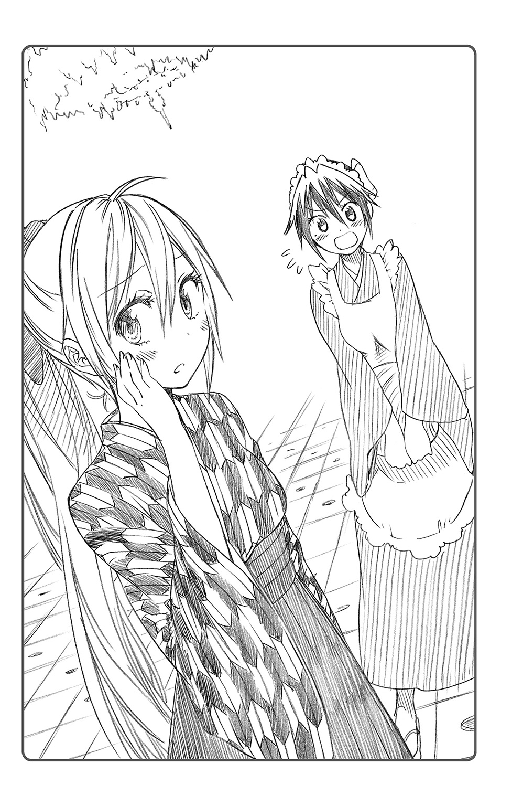
「いくら恋人同士とはいえ、あのような貧弱な男と一緒に馬鳴館の舞踏会だなんて......。社交界中に、『これが私の婚約者です』と喧伝するようなものではありませんか」
「......だ、だから、しょうがないじゃない。パパもそうしろって言うし」
鶫は納得がいかず、目の前の主人を半目で凝視した。
深く碧い色をした瞳に、目も覚めるような明るい色の髪。メリケンの父親を持つ千棘は、日本人離れした可憐な容姿の持ち主だった。
そのすらりとしたスタイルを包むのは、矢絣模様の着物に袴とハーフブーツ。真っ赤なリボンと相まって、彼女の見た目はまさに流行りの和洋折衷さんだ。世間に良家の子女は多けれど、千棘ほどの美しい娘はおるまい――。従者の鶫から見ても、桐崎千棘は実に魅力的な少女であった。
――こんなにも美しいお嬢が、あの貧相な男とともに舞踏会に行かねばならぬとは......。
パートナーを伴って舞踏会に出席するというのは、資産階級の人間にとってはある種、婚約のお披露目のようなものなのである。もし千棘とあの男がそんなことをしようものなら、世間は二人の関係をもてはやすに違いない。朝刊の一面に、『桐崎家の令嬢、ご婚約』の文字が躍ること請け合いである。
そんなこと――あの男が千棘の夫になるなど、とうてい認められるものではない。
鶫は舌打ち交じりに、エプロンの裾を握り締めた。
時は大正。浪漫の時代。
ガス灯煌めく煉瓦道には百貨店が立ち並び、洋装纏う人々がオペラや活動写真に憂き身を窶す。欧米諸国から様々な人やモノが流入し、文化が一気に花開いた時代であった。
桐崎家もまた、そんな時流に乗って海外からこの街にやってきた家のひとつである。
当初こそ街の名家、一条家との間で確執があったものの、互いの家の後継ぎ同士――桐崎千棘と一条楽――が恋仲であるという驚愕の事実が発覚して以来、今では良好な関係を築くようになっていた。
二人の恋を良く思わない従者、鶫誠士郎を除いては。
「かくなるうえは、舞踏会前にヤツをひそかに始末しておくべきか......」
鶫はスカートに隠した拳銃に触れ、ひそかに覚悟を決めた。千棘についた悪い虫を払うのも、従者たる自分のつとめ。いかに本人や親が納得していようと、その恋愛が千棘のためにならぬものならば、自分が止めるべきなのだ――。
そんな思いがつい表情に出てしまっていたのだろうか。千棘がこちらを不安げに覗きこんでいた。
「だ、大丈夫だって！ 別に一緒に舞踏会に行くだけで、本当にアイツと結婚するわけじゃないんだから」
そう言われても、やはり鶫には納得できることではなかった。舞踏会をきっかけに二人の関係が進展し、本当に結婚することだってありうるのだ。
「だ、だいたい、お嬢はまだ十六です。結婚など言わずもがな、男性との交際にうつつを抜かすなど早すぎるのではありませんか」
「いやまあ、別に私だって、ホントに交際してるわけじゃ......」
「え？ なんですって？」
「あ、いや!? な、なんでもないわ！ 一条楽とは目下滞りなく熱愛中よ。うん！」
あはは、と千棘は、誤魔化すような笑みを浮かべていた。
「......熱愛中、では困ります」
こほん、と咳払いをして、鶫は千棘を見据えた。
「いいですか、お嬢。女性の社会進出がめざましいこのご時世、お嬢も女学生ならば、脇目も振らずに勉学に励むべきです。恋愛や結婚だけが女性の人生ではないと、平塚らいてう先生もおっしゃられて――」
「だから結婚とかそういうんじゃないってば！......ああもう、鶫はアイツのことになると頭が固いんだから。こっちは舞踏会に行くって話をしただけなのに」
ぶう、とむくれる千棘を説得しようと、鶫が口を開こうとした刹那、
「......舞踏会？ ねえ、千棘ちゃん。それって、あの馬鳴館の舞踏会？」
席の近くを通りかかった給仕の少女が、トレイを片手に目をきらきらさせていた。
肩口までの短髪に、和装のエプロン姿。はにかむような微笑みが可愛らしい給仕だった。
彼女の名前は確か、小野寺小咲。
千棘や鶫とほとんど変わらない年齢ながら、彼女はこのミルクホールで働く立派な少女である。女学院の帰り道、千棘が何度か通っているうちに仲良くなったらしい。
鶫が会釈をすると、給仕の少女はニコリと笑みで返した。
「小野寺様。あなたからもお嬢になんとか言ってくださいませんか。こんな若い女学生が舞踏会などと......」
真面目な小咲ならばきっと自分の味方になってくれるはずだ、と、鶫は少女に話を振った。
しかし、当の小咲の反応は予想外のもので、
「え？ 私は舞踏会、すごく楽しみだけどなあ」
「まさか、小野寺様も舞踏会に......？」
「きらびやかなホール、生まれて初めての綺麗なドレス。美しい旋律に乗せて、彼と私は軽やかにワルツを踊るの......うふふ」
小咲はうっとりと、夢見るような表情を浮かべていた。まるで実際に馬鳴館の舞踏会で踊っているかのように、トレイを抱きながらくるくるとその場で回転をはじめる。
「小野寺様？」
「――燃え上がる身分違いの愛。自由恋愛を叫びつつ、私を抱いて逃げ出すあの人。二人は汽車に飛び乗って、新天地を目指して旅立つの......」
鶫の怪訝な表情などまるで目に入っていないかのように、小咲はぶつぶつと妄想を垂れ流すばかりであった。
彼女の様子を見るに見かねたのか、近くにいた同僚の給仕が、ため息交じりにつぶやいた。
「......ああ。ちょっと今この子、のぼせ上がってるのよ。――ずっと前から好きだった人に舞踏会に誘われたみたいでね。......ほらしっかりしろ、小咲。仕事中でしょ」
その給仕――眼鏡をかけた背の低い少女が、小咲の背中をばん、と叩く。
すると小咲は「ひうっ!?」と小さな悲鳴をひとつ上げて、我に返ったようだった。
「ご、ごめん、るりちゃん......」
そんな様子を見ていた千棘が、カップを片手に「へえ」とため息を漏らす。
「小咲ちゃん、好きな人がいたんだ」
「ええ。高等学校の学生さんだったかしら。わりと優しくて一本気な性格の男の子でね。名前は確か――」
「ちょ、ちょっとるりちゃん!? 言っちゃだめっ！」
顔を赤らめた小咲が、あわてて眼鏡の少女の口を塞いだ。小咲の様子からするに、よほど彼女はその想い人に夢中なのだろう。
「恋に憧れているのは、お嬢だけではないようだな......」
鶫がため息をついていると、少し離れた席から声がした。
「――あら皆さん、奇遇ですわね。馬鳴館の舞踏会には、私も誘われているんですよ。許婚から」
たおやかな声の主は、つばの広い装飾帽子を被ったドレス姿の少女だった。シルクの手袋で優雅にカップを口に運ぶ様子からは、彼女が良家の育ちであることがうかがい知れる。
「あなたは――」
確か彼女は、千棘の女学校のクラスメートだったはずだ。
「い、許婚!? 万里花、あんた、許婚とかいたの？」
「ええ。幼いころからお慕いしている殿方がおりますわ。その方との婚約の披露を兼ねまして、舞踏会に出席しようと思っているのです」
「はあ......。婚約ねえ。あんた、進んでるのね」
千棘はぽかん、と口を開けて、頰を染めるクラスメートの令嬢――橘万里花の話に聞き入っていた。もちろん、それは鶫や小咲も同じである。
「でも、それを言うなら桐崎さんや小野寺様も似たようなものでしょう？ 恋人と舞踏会に参加されるのですから」
にこり、と万里花が笑う。
その言葉に小咲は顔を朱に染め、トレイをぶんぶんと振りながら、
「こ、ここここ、恋人だなんてそんな!? 家柄も人格も、私なんかとは不釣り合いだし、あんな素敵な人とひと晩舞踏会を過ごすだけでも夢のような話でっ......！」
「ふふ。小野寺様のお相手はよほど素晴らしい殿方なんですわね。でも、それなら私の許婚も負けませんわ。文武両道にして目も眩むような美男子、学生とは思えぬほどの男気と慈愛に満ちた方ですから」
さりげなく恋人自慢をする二人を見て、千棘は苦笑を浮かべていた。
「二人の恋人に比べたら、うちのもやしはちょっと頼りなくてアレかもしれないけど......まあ、悪い奴じゃないわね。やるときゃやるし......。うん」
「お嬢......」
千棘が一条楽を語るその表情に、鶫は危機感を覚えた。
――なんだかんだ言いつつお嬢も、ヤツのことを気に入っているとしか思えん。
このままここで他のお嬢さん方と恋の話に興じていては、舞踏会を断念させるための説得は難しくなるかもしれない。
「お嬢、そろそろ――」
帰宅を促すべく、鶫が千棘に声をかけたそのときだった。
カランコロン、とミルクホールの入口の扉が開いた。
「いらっしゃいませ。......あ」
眼鏡の給仕は、戸口に入ってきた新しい客を見て、きょとんとした顔を浮かべた。
入ってきたのは詰襟の学ランに黒い帽子、マントを羽織った人物。中肉中背で、ぽやん、とした表情の黒髪の少年だ。
もちろん、鶫もその少年の顔には見覚えがある。
店に入ってきた彼の姿を見て、鶫の周りの三人の少女が突如色めき立った。
「あ、楽」
「一条君!?」
「楽様！」
親しげに彼の名を呼んだ少女たちは、その瞬間、「あれ？」と、互いに顔を見合わせる。
「小咲ちゃんに万里花、なんでアイツのこと知ってるの？」
「そ、それを言うなら千棘ちゃんだって」
「知ってるも何も、楽様は私の許婚ですし......」
うーん、と少女たちが首をひねること数十秒、そして彼女たちはほぼ同時に、同じ答えに到達したのであった。
「もしかして私たち、アイツに三股かけられてた......？」
「舞踏会に誘ってくれたの、私だけじゃなかったなんて......」
「ひどいですわ楽様！ 舞踏会で婚約発表をするつもりでしたのに......！」
額に青筋を浮かべた袴姿の女学生。半分涙目の和服エプロンの給仕。そしてよよよ、と泣き崩れるドレスのご令嬢。
そんな三人の険悪な雰囲気などつゆ知らず、学生服の少年――一条楽は、彼女たちの姿を認めるなり、手をあげてこちらのテーブルへやってくるのであった。
「おう、お前ら！ ......って、あれ？ 三人とも知り合いだったのか？」
にっこり、と笑みを浮かべる少年に、少女たちは恨みがましい視線を送る。
「ちょっともやし、これどういうことよ」
「せっかく一条君が私をパートナーに選んでくれたと思って、喜んでたのに......」
「舞踏会の随伴に三人も声をかけるだなんて......。私だけではご不満なのですか？」
そこでようやく楽も、三人の様子がただごとではないことに気がついたのだろう。
ぽん、と手を叩いてこう言った。
「あ、あー。馬鳴館の舞踏会か。せっかくだから、皆で楽しもうと思ってさ。三人に声をかけたんだが......。まずかったのか？」
しかし、そんな楽の問いに笑みを浮かべる者はいなかった。
「そういう玉虫色の回答はいいからさ。結局、アンタは誰が本命なわけ」
「そ、そうだよ一条君！ この中で一人だけ選ぶとしたら誰なの!?」
「もちろん私ですわよね!? 楽様！」
三人の少女は互いに目で牽制しあい、一触即発の空気が漂っていた。このままではミルクホールで乱闘でも起きかねない雰囲気である。
「......あーあ。これ、一条君が誰かひとりを選ばないと納得させられない空気ね」
そうつぶやいたのは眼鏡をかけた給仕の少女だ。
「選べったって、んないきなり......。そ、そうだ！ 鶫！ 何とか手を貸してくれよ！」
あわてふためいた楽が、傍らの鶫に声をかけた。
「......手を貸せ、だと？」
「お前、千棘と仲良いだろ。だったらせめてあいつだけでも説得して......」
鶫は、自分の主人を見やる。恋人の不実に対して頭に来ているのだろう。今や彼女は、煉瓦の壁でさえ叩き割りそうなほど鼻息を荒くしていた。
「断る。一条楽、私は貴様の意見など、露ほども聞くつもりはない」
「な、なんでだよ!? このままじゃ人死にが出るぞ!?」
「貴様がお嬢の恋人という立場でありながら、他の娘たちに声をかけていたこと――これは本来許されるものではないが、百歩譲って見逃してやる。『皆で楽しもう』という心意気自体は許せなくもないからな。だが――」
鶫はスカートの中に忍ばせていた拳銃を取り出した。
それを見て、楽はごくりと息をのむ。
「――それなら、何故私も誘ってくれないんだ？」
「へ？」
呆然とする楽に、鶫は躊躇なく引き金を引いた。
にぶい音が響き、弾丸が楽の頰をかすめて背後の壁に着弾する。
「うおおおおおっ!? お、落ち着け、鶫ぃぃぃっ！」
「うるさい！ お嬢や他の皆も誘ったくせに、なんで私だけ誘わないっ!? 私だって......私だって、ドレスや舞踏会に憧れる年頃なんだあああっ！」
「ひ、ひいいいっ!?」
逃げ惑う楽に、銃弾の雨が浴びせかけられた。だが、女学生も給仕も令嬢も――そんな彼の姿を冷ややかに見つめていただけだった。
結局この日、ミルクホールは銃声と悲鳴が飛び交う阿鼻叫喚の地獄と化したのである。
※
「......題して、『大正ハイカラ劇場・愛と裏切りのデカダンス』ってね。実はこういうオリジナル脚本も準備してたんだけど、結局お披露目の機会はなかったなー」
文化祭終了後、慌ただしく片づけをしている教室の片隅で、一条楽は実行委員の舞子集から、クラス演劇のボツ脚本なるものを見せられていた。
集は眼鏡をくい、と上げ、楽ににやりと微笑みかける。
「――で、どうだった？」
「どうだった、って......。時代設定がなぜ大正なのか意味不明だし、配役の名前なんか何のひねりもなくそのまんまだし、オレぼっこぼこだし......」
いくらなんでも、カオスとしか言いようのない脚本であった。
実際、自分たちの演じた『ロミオとジュリエット』も、結局はアドリブだらけで脚本無視の超展開な演劇になってしまったのだが、そこは棚に上げておく。
「あれ？ お気に召さない？ みんな素で演技できるように、うまく登場人物のキャラを脚本に落としこんだつもりだったんだけどなあ」
「いや、ありえねえだろ。なんでオレを取り合って千棘と小野寺と橘がケンカすんだよ。しかも鶫まで......」
「そりゃお前――」
集が何か言いたげに口を開いたが、ため息ひとつついて頭を振るだけだった。
「ま、いいや。......誰を舞踏会に誘うか、ちゃんと考えとけよって話だ」
「はあ？」
楽から脚本を受け取ると、集は笑みを浮かべてその場を離れる。
「......何言ってんだアイツ？」
後に残されたのは、首をかしげる楽だけであった。
この度は、ニセコイ小説版『ウラバナ』を手に取って頂きありがとうございます！
自分の描いた作品がこうして違うメディアで形になり、楽しむ幅が増えた事を嬉しく思います。僕は普段小説等の文字媒体の物を読む習慣が無いのでどんな物が出来上がるのか楽しみでしたが、原稿を読ませて頂くと想像以上に楽しく、ニセコイのキャラが生き生きと描かれていて驚きました。
またこんな風に、自分とは違う視点からの新たなニセコイの世界を、自分を含め、読者の方々に楽しんで頂けたらいいなと思います。田中先生、素晴らしい小説をありがとうございました!!
古味直志
小説を担当した田中です。『ニセコイ ウラバナ１』いかがでしたでしょうか。
裏話、と題するだけあって、本作のコンセプトは、『ニセコイ』ヒロイン達の裏側を描こう、というものでした。なので、ネコ寺さんだったり血染めのマリーだったりハイカラ千棘だったり、原作とは一風変わったお話をお楽しみいただけたかと思います。
特にあの、ネコ寺さん。当初は冗談半分で提示したネタだったのですが、編集担当の方々が妙に盛り上がってしまったおかげで、本当に書くことになってしまったという経緯があります。ぼくとしては「あの清楚系ヒロインと名高い小野寺さんを、ネコミミなどという陳腐な萌えアイテムで表現して良いのか」とおそるおそる筆を進めていたのですが、古味先生が描き上げてくださったイラストを拝見したその瞬間、不安はすっかり払拭されました。「これは可愛い。ぜひ世に出さなければならない」と。
古味先生、素敵なイラストの数々、本当にありがとうございました。
担当の六郷様はじめ JUMP j BOOKS 編集部の皆様、週刊少年ジャンプ編集部の齊藤様、ならびに、本の製作に携わっていただいた皆様、それからもちろん読者の皆様にも感謝です。僕もファンの一人として、『ニセコイ』がこれからも、一層盛り上がることを楽しみにしています!!
田中 創
■初出
ニセコイ ウラバナ１ 書き下ろし
古味直志 NAOSHI KOMI
２００７年に週刊少年ジャンプにてデビュー。
２０１１年から連載を開始した『ニセコイ』が、高い画力とストーリーで人気を博す。
田中 創 HAJIME TANAKA
２０１０年、ジャンプ小説新人賞
jNGP'10 Winter 小説テーマ部門銅賞を受賞。
『貧乏神が！』の小説にてデビュー。
ジャンプジェイブックスDIGITAL
ニセコイ ウラバナ １
著者 古味直志／田中 創
© 2015 N.KOMI／H.TANAKA
２０１５年４月30日発行
この電子書籍は、ジャンプジェイブックス「ニセコイ ウラバナ １」
２０１４年７月30日発行の第８刷を底本としています。
装丁 石山武彦［Freiheit］
発行者 鈴木晴彦
発行所 株式会社 集英社
〒１０１－８０５０
東京都千代田区一ツ橋２丁目５番10号
０３－３２３０－６０８０（読者係）
制作所 株式会社デジタルディレクターズ
本作品の全部また一部を無断で複製、転載、改竄、インターネット上に掲載すること、および有償無償に関わらず、本データを第三者に譲渡することを禁じます。なお個人利用の目的であっても、コピーガードを解除しての複製は、法律で禁じられています。